XML Reference#
Introduction#
This chapter is the reference manual for the MJCF modeling language used in MuJoCo.
XML schema#
The dropdown below summarizes the XML elements and their attributes in MJCF. All information in MJCF is entered through elements and attributes. Text content in elements is not used; if present, the parser ignores it.
The icons to the right of each element name have the following meaning:
required element, can appear only once |
|
optional element, can appear multiple times recursively |
|
optional element, can appear only once |
|
|
optional element, can appear multiple times (default case, no icon) |
mujoco
size
Attribute types#
string |
An arbitrary string, usually specifying a file name or a user-defined name of a model element. |
int(N) |
An array of N integers. If N is omitted it equals 1. |
real(N) |
An array of N real-valued numbers. If N is omitted it equals 1. |
[…] |
Keyword attribute. The list of valid keywords is given in brackets. |
required |
The attribute is required by the parser. If it is not present the parser will generate an error. |
optional |
The attribute is optional. There is no internal default. The attribute is initialized in the undefined state. |
“…” |
The attribute is optional. The internal default is given in quotes. |
In the reference documentation below the attribute name is shown in boldface, followed by its data type, followed by the required/optional status including the internal default if any. For example, the attribute angle is a keyword attribute whose value can be “radian” or “degree”. It is an optional attribute and has internal default “degree”. Therefore it will appear in the reference documentation as
- angle: [radian, degree], “degree”
MJCF Reference#
MJCF files have a unique top-level element mujoco. The next-level elements are referred to as sections. They are all optional. Some sections are merely used for grouping and have no attributes. Sections can be repeated, to facilitate merging of models via the include element. The order of attributes within an element can be arbitrary. The order of child elements within a parent element can also be arbitrary, with four exceptions:
The order of joint elements within a body matters because joint transformations are performed in sequence.
The order of elements in a spatial tendon matters because it determines the sequence of objects that the tendon passes through or wraps around.
The order of repeated sections matters when the same attribute is set multiple times to different values. In that case the last setting takes effect for the entire model.
The order of multiple actuator shortcuts in the same defaults class matters, because each shortcut sets the attributes of the single general element in that defaults class, overriding the previous settings.
In the remainder of this chapter we describe all valid MJCF elements and their attributes. Some elements can be used in multiple contexts, in which case their meaning depends on the parent element. This is why we always show the parent as a prefix in the documentation below.
Meta elements#
These elements are not strictly part of the low-level MJCF format definition, but rather instruct the compiler to perform some operation on the model. A general property of meta-elements is that they disappear from the model upon saving the XML. There are currently six meta-elements in MJCF:
include, frame, and replicate which are outside of the schema.
composite, flexcomp and attach which are part of the schema, but serve to procedurally generate other MJCF elements.
frame #
The frame meta-element is a pure coordinate transformation that can wrap any group of elements in the kinematic tree (under worldbody). After compilation, frame elements disappear and their transformation is accumulated in their direct children. The attributes of the frame meta-element are documented below.
Usage example of frame
Loading this model and saving it:
<mujoco>
<worldbody>
<frame quat="0 0 1 0">
<geom name="Alice" quat="0 1 0 0" size="1"/>
</frame>
<frame pos="0 1 0">
<geom name="Bob" pos="0 1 0" size="1"/>
<body name="Carl" pos="1 0 0">
...
</body>
</frame>
</worldbody>
</mujoco>
Results in this model:
<mujoco>
<worldbody>
<geom name="Alice" quat="0 0 0 1" size="1"/>
<geom name="Bob" pos="0 2 0" size="1"/>
<body name="Carl" pos="1 1 0">
...
</body>
</worldbody>
</mujoco>
Note that in the saved model, the frame elements have disappeared but their transformation was accumulated with those of their child elements.
replicate #
The replicate element duplicates the enclosed kinematic tree elements with incremental translational and rotational
offsets, adding namespace suffixes to avoid name collisions. Appended suffix strings are integers in the
range [0...count-1] with the minimum number of digits required to represent the total element count (i.e., if
replicating 200 times, suffixes will be 000, 001, ... etc). All referencing elements are automatically replicated
and namespaced appropriately. Detailed examples of models using replicate can be found in the
model/replicate/ directory.
There are some caveats concerning keyframes when using replicate. Since mjs_attach is used to self-attach multiple times the enclosed kinematic tree, if this tree contains further attach elements, keyframes will not be replicated nor namespaced by replicate, but they will be attached and namespaced once by the innermost call of mjs_attach. See the limitations discussed in attachment.
- count: int, required
The number of replicas. Must be positive.
- sep: string, optional
The namespace separator. This optional string is prepended to the namespace suffix string. Note that for nested replicate elements, the innermost namespace suffixes are appended first.
- offset: real(3), optional
Translational offset along the three coordinate axes. In general, the frame of the offset is with respect to the previous replica, except for the first one which is with respect to the replicate element’s parent. If there is no rotation, these values are always in the frame of the replicate element’s parent.
- euler: real(3), optional
Rotation angles around three coordinate axes between two subsequent replicas. The angular units and rotation sequence respect the global angle and eulerseq settings. Rotation is always with respect to the frame of the previous replica, so total rotation is cumulative.
Usage example of replicate
Loading this model and saving it:
<mujoco>
<worldbody>
<replicate count="2" offset="0 1 0" euler="90 0 0">
<replicate count="2" sep="-" offset="1 0 0" euler="0 90 0">
<geom name="Alice" size=".1"/>
</replicate>
</replicate>
</worldbody>
<sensor>
<accelerometer name="Bob" site="Alice"/>
</sensor>
</mujoco>
Results in this model:
<mujoco>
<worldbody>
<geom name="Alice-00" size="0.1"/>
<geom name="Alice-10" size="0.1" pos="1 0 0" quat="1 0 1 0"/>
<geom name="Alice-01" size="0.1" pos="0 1 0" quat="1 1 0 0"/>
<geom name="Alice-11" size="0.1" pos="1 1 0" quat="0.5 0.5 0.5 0.5"/>
</worldbody>
<sensor>
<accelerometer name="Bob-00" site="Alice-00"/>
<accelerometer name="Bob-10" site="Alice-10"/>
<accelerometer name="Bob-01" site="Alice-01"/>
<accelerometer name="Bob-11" site="Alice-11"/>
</sensor>
</mujoco>
include#
This element does not strictly belong to MJCF. Instead it is a meta-element, used to assemble multiple XML files in a single document object model (DOM) before parsing. The included file must be a valid XML file with a unique top-level element. This top-level element is removed by the parser, and the elements below it are inserted at the location of the include element. At least one element must be inserted as a result of this procedure. The include element can be used wherever an XML element is expected in the MJCF file. Nested includes are allowed, however a given XML file can be included at most once in the entire model. After all the included XML files have been assembled into a single DOM, it must correspond to a valid MJCF model. Other than that, it is up to the user to decide how to use includes and how to modularize large files if desired.
- file: string, required
The name of the XML file to be included. The file location is relative to the directory of the main MJCF file. If the file is not in the same directory, it should be prefixed with a relative path.
mujoco #
The unique top-level element, identifying the XML file as an MJCF model file.
- model: string, “MuJoCo Model”
The name of the model. This name is shown in the title bar of simulate.cc.
option#
This element is in one-to-one correspondence with the low level structure mjOption contained in the field mjModel.opt of mjModel. These are simulation options and do not affect the compilation process in any way; they are simply copied into the low level model. Even though mjOption can be modified by the user at runtime, it is nevertheless a good idea to adjust it properly through the XML.
- timestep: real, “0.002”
Simulation time step in seconds. This is the single most important parameter affecting the speed-accuracy trade-off which is inherent in every physics simulation. Smaller values result in better accuracy and stability. To achieve real-time performance, the time step must be larger than the CPU time per step (or 4 times larger when using the RK4 integrator). The CPU time is measured with internal timers. It should be monitored when adjusting the time step. MuJoCo can simulate most robotic systems a lot faster than real-time, however models with many floating objects (resulting in many contacts) are more demanding computationally. Keep in mind that stability is determined not only by the time step but also by the Solver parameters; in particular softer constraints can be simulated with larger time steps. When fine-tuning a challenging model, it is recommended to experiment with both settings jointly. In optimization-related applications, real-time is no longer good enough and instead it is desirable to run the simulation as fast as possible. In that case the time step should be made as large as possible.
- impratio: real, “1”
This attribute determines the ratio of frictional-to-normal constraint impedance for elliptic friction cones. The setting of solimp determines a single impedance value for all contact dimensions, which is then modulated by this attribute. Settings larger than 1 cause friction forces to be “harder” than normal forces, having the general effect of preventing slip, without increasing the actual friction coefficient. For pyramidal friction cones the situation is more complex because the pyramidal approximation mixes normal and frictional dimensions within each basis vector; it is not recommended to use high impratio values with pyramidal cones.
- gravity: real(3), “0 0 -9.81”
Gravitational acceleration vector. In the default world orientation the Z-axis points up. The MuJoCo GUI is organized around this convention (both the camera and perturbation commands are based on it) so we do not recommend deviating from it.
- wind: real(3), “0 0 0”
Velocity vector of the medium (i.e., wind). This vector is subtracted from the 3D translational velocity of each body, and the result is used to compute viscous, lift and drag forces acting on the body; recall Passive forces in the Computation chapter. The magnitude of these forces scales with the values of the next two attributes.
- magnetic: real(3), “0 -0.5 0”
Global magnetic flux. This vector is used by magnetometer sensors, which are defined as sites and return the magnetic flux at the site position expressed in the site frame.
- density: real, “0”
Density of the medium, not to be confused with the geom density used to infer masses and inertias. This parameter is used to simulate lift and drag forces, which scale quadratically with velocity. In SI units the density of air is around 1.2 while the density of water is around 1000 depending on temperature. Setting density to 0 disables lift and drag forces.
- viscosity: real, “0”
Viscosity of the medium. This parameter is used to simulate viscous forces, which scale linearly with velocity. In SI units the viscosity of air is around 0.00002 while the viscosity of water is around 0.0009 depending on temperature. Setting viscosity to 0 disables viscous forces. Note that the default Euler integrator handles damping in the joints implicitly – which improves stability and accuracy. It does not presently do this with body viscosity. Therefore, if the goal is merely to create a damped simulation (as opposed to modeling the specific effects of viscosity), we recommend using joint damping rather than body viscosity, or switching to the implicit or implicitfast integrators.
- o_margin: real, “0”
This attribute replaces the margin parameter of all active contact pairs when Contact override is enabled. Otherwise MuJoCo uses the element-specific margin attribute of geom or pair depending on how the contact pair was generated. See margin and gap in the Computation chapter. The related gap parameter does not have a global override.
- o_solref, o_solimp, o_friction
These attributes replace the solref, solimp and friction parameters of all active contact pairs when contact override is enabled. See Solver parameters for details.
- integrator: [Euler, RK4, implicit, implicitfast], “Euler”
This attribute selects the numerical integrator to be used. Currently the available integrators are the semi-implicit Euler method, the fixed-step 4-th order Runge Kutta method, the Implicit-in-velocity Euler method, and implicitfast, which drops the Coriolis and centrifugal terms. See Numerical Integration for more details.
- cone: [pyramidal, elliptic], “pyramidal”
The type of contact friction cone. Elliptic cones are a better model of the physical reality, but pyramidal cones sometimes make the solver faster and more robust.
- jacobian: [dense, sparse, auto], “auto”
The type of constraint Jacobian and matrices computed from it. Auto resolves to dense when the number of degrees of freedom is up to 60, and sparse over 60.
- solver: [PGS, CG, Newton], “Newton”
This attribute selects one of the constraint solver algorithms described in the Computation chapter. Guidelines for solver selection and parameter tuning are available in the Algorithms section above.
- iterations: int, “100”
Maximum number of iterations of the constraint solver. When the warmstart attribute of flag is enabled (which is the default), accurate results are obtained with fewer iterations. Larger and more complex systems with many interacting constraints require more iterations. Note that mjData.solver contains statistics about solver convergence, also shown in the profiler.
- tolerance: real, “1e-8”
Tolerance threshold used for early termination of the iterative solver. For PGS, the threshold is applied to the cost improvement between two iterations. For CG and Newton, it is applied to the smaller of the cost improvement and the gradient norm. Set the tolerance to 0 to disable early termination.
- ls_iterations: int, “50”
Maximum number of linesearch iterations performed by CG/Newton constraint solvers. Ensures that at most iterations times ls_iterations linesearch iterations are performed during each constraint solve.
- ls_tolerance: real, “0.01”
Tolerance threshold used for early termination of the linesearch algorithm.
- noslip_iterations: int, “0”
Maximum number of iterations of the Noslip solver. This is a post-processing step executed after the main solver. It uses a modified PGS method to suppress slip/drift in friction dimensions resulting from the soft-constraint model. The default setting 0 disables this post-processing step.
- noslip_tolerance: real, “1e-6”
Tolerance threshold used for early termination of the Noslip solver.
- ccd_iterations: int, “50”
Maximum number of iterations of the algorithm used for convex collisions. This rarely needs to be adjusted, except in situations where some geoms have very large aspect ratios.
- ccd_tolerance: real, “1e-6”
Tolerance threshold used for early termination of the convex collision algorithm.
- sleep_tolerance: real, “1e-4”
Velocity tolerance below which sleeping is allowed.
- sdf_iterations: int, “10”
Number of iterations used for Signed Distance Field collisions (per initial point).
- sdf_initpoints: int, “40”
Number of starting points used for finding contacts with Signed Distance Field collisions.
- actuatorgroupdisable: int(31), optional
List of actuator groups to disable. Actuators whose group is in this list will produce no force. If they are stateful, their activation states will not be integrated. Internally this list is implemented as an integer bitfield, so values must be in the range
0 <= group <= 30. If not set, all actuator groups are enabled. See example model and associated screen-capture on the right.
option/flag #
This element sets the flags that enable and disable different parts of the simulation pipeline. The actual flags used at runtime are represented as the bits of two integers, namely mjModel.opt.disableflags and mjModel.opt.enableflags, used to disable standard features and enable optional features respectively. The reason for this separation is that setting both integers to 0 restores the default. In the XML we do not make this separation explicit, except for the default attribute values - which are “enable” for flags corresponding to standard features, and “disable” for flags corresponding to optional features. In the documentation below, we explain what happens when the setting is different from its default.
- constraint: [disable, enable], “enable”
This flag disables all standard computations related to the constraint solver. As a result, no constraint forces are applied. Note that the next four flags disable the computations related to a specific type of constraint. Both this flag and the type-specific flag must be set to “enable” for a given computation to be performed.
- equality: [disable, enable], “enable”
This flag disables all standard computations related to equality constraints.
- frictionloss: [disable, enable], “enable”
This flag disables all standard computations related to friction loss constraints.
- limit: [disable, enable], “enable”
This flag disables all standard computations related to joint and tendon limit constraints.
- contact: [disable, enable], “enable”
This flag disables collision detection and all standard computations related to contact constraints.
- spring: [disable, enable], “enable”
This flag disables passive joint and tendon springs. If passive damper forces are also disabled, all passive forces are disabled, including gravity compensation, fluid forces, forces computed by the mjcb_passive callback, and forces computed by plugins when passed the mjPLUGIN_PASSIVE capability flag.
- damper: [disable, enable], “enable”
This flag disables passive joint and tendon dampers. If passive spring forces are also disabled, all passive forces are disabled, including gravity compensation, fluid forces, forces computed by the mjcb_passive callback, and forces computed by plugins when passed the mjPLUGIN_PASSIVE capability flag.
- gravity: [disable, enable], “enable”
This flag causes the gravitational acceleration vector in mjOption to be replaced with (0 0 0) at runtime, without changing the value in mjOption. Once the flag is re-enabled, the value in mjOption is used.
- clampctrl: [disable, enable], “enable”
This flag disables the clamping of control inputs to all actuators, even if the actuator-specific attributes are set to enable clamping.
- warmstart: [disable, enable], “enable”
This flag disables warm-starting of the constraint solver. By default the solver uses the solution (i.e., the constraint force) from the previous time step to initialize the iterative optimization. This feature should be disabled when evaluating the dynamics at a collection of states that do not form a trajectory - in which case warm starts make no sense and are likely to slow down the solver.
- filterparent: [disable, enable], “enable”
This flag disables the filtering of contact pairs where the two geoms belong to a parent and child body; recall contact selection in the Computation chapter.
- actuation: [disable, enable], “enable”
This flag disables all standard computations related to actuator forces, including the actuator dynamics. As a result, no actuator forces are applied to the simulation.
- refsafe: [disable, enable], “enable”
This flag enables a safety mechanism that prevents instabilities due to solref[0] being too small compared to the simulation timestep. Recall that solref[0] is the stiffness of the virtual spring-damper used for constraint stabilization. If this setting is enabled, the solver uses max(solref[0], 2*timestep) in place of solref[0] separately for each active constraint.
- sensor: [disable, enable], “enable”
This flag disables all computations related to sensors. When disabled, sensor values will remain constant, either zeros if disabled at the start of simulation, or, if disabled at runtime, whatever value was last computed.
- midphase: [disable, enable], “enable”
This flag disables the mid-phase collision filtering using a static AABB bounding volume hierarchy (a BVH binary tree). If disabled, all geoms pairs that are allowed to collide are checked for collisions.
- nativeccd: [disable, enable], “enable”
This flag enables the native convex collision detection pipeline instead of using the libccd library, see convex collisions for more details.
- island: [disable, enable], “enable”
This flag enables discovery and construction of constraint islands: disjoint sets of constraints and degrees-of-freedom that do not interact and can be solved independently. Islanding is not yet supported by the PGS solver. See Constraint islands for more details. The mjVIS_ISLAND enables island visualization.
- eulerdamp: [disable, enable], “enable”
This flag disables implicit integration with respect to joint damping in the Euler integrator. See the Numerical Integration section for more details.
- autoreset: [disable, enable], “enable”
This flag disables the automatic resetting of the simulation state when numerical issues are detected.
- override: [disable, enable], “disable”
This flag enables the Contact override mechanism.
- energy: [disable, enable], “disable”
This flag enables the computation of potential and kinetic energy in
mjData.energy[0, 1]respectively, and displayed in the simulate GUI info overlay. Potential energy includes the gravitational component summed over all bodies \(\sum_b m_b g h\) and energy stored in passive springs in joints, tendons and flexes \(\tfrac{1}{2} k x^2\), where \(x\) is the displacement and \(k\) is the spring constant. Kinetic energy is given by \(\tfrac{1}{2} v^T M v\), where \(v\) is the velocity and \(M\) is the mass matrix. Note that potential and kinetic energy in constraints is not accounted for.The extra computation (also triggered by potential and kinetic energy sensors) adds some CPU time but it is usually negligible. Monitoring energy for a system that is supposed to be energy-conserving is one of the best ways to assess the accuracy of a complex simulation.
- fwdinv: [disable, enable], “disable”
This flag enables the automatic comparison of forward and inverse dynamics. When enabled, the inverse dynamics is invoked after mj_forward (or internally within mj_step) and the difference in applied forces is recorded in mjData.solver_fwdinv[2]. The first value is the relative norm of the discrepancy in joint space, the next is in constraint space.
- invdiscrete: [disable, enable], “disable”
This dual-purpose flag enables discrete-time inverse dynamics and disables midpoint integration.
- Enable discrete-time inverse dynamics
This flag enables discrete-time inverse dynamics with mj_inverse for all integrators other than
RK4. Recall from the numerical integration section that the one-step integrators (Euler,implicitandimplicitfast), modify the mass matrix \(M \rightarrow M-hD\). This implies that finite-differenced accelerations \((v_{t+h} - v_t)/h\) will not correspond to the continuous-time accelerationmjData.qacc. When this flag is enabled, mj_inverse will interpretqaccas having been computed from the difference of two sequential velocities, and undo the above modification.- Disable midpoint integration
Additionally and relatedly, this flag disables midpoint integration for free bodies, which would otherwise break the linear relationship between finite-differenced velocities and forces assumed by discrete inverse dynamics. Note that disabling midpoint integration might be useful for debugging or for other reasons, regardless or whether inverse dynamics are used.
- multiccd: [disable, enable], “enable”
This flag enables multiple-contact collision detection for geom pairs that use a general-purpose convex-convex collider e.g., mesh-mesh collisions. This can be useful when the contacting geoms have a flat surface and the single contact point generated by the convex-convex collider cannot accurately capture the surface contact, leading to instabilities that typically manifest as sliding or wobbling. The implementation of this feature depends on the selected convex collision pipeline, see convex collisions for more details.
- sleep: [disable, enable], “disable”
This flag enables sleeping. Disabling this flag when some trees are sleeping will wake them.
flag value at initialization time
Unlike any other flag, the sleep flag has an effect during mjData initialization (mj_makeData or mj_resetData). First, it must be set at initialization time in order for the sleep-init policy to take effect. Second, it must be set in order for static quantities to be computed. See implementation notes for more details.
- diagexact: [disable, enable], “disable”
This flag enables computation of the exact diagonal of the constraint-space inertia matrix \(A = J M^{-1} J^T\), replacing the body-based approximation normally used. The exact diagonal is computed from the whitened Jacobian \(Y = J M^{-1/2}\) as \(A_{ii} = \|Y_i\|^2\). This provides a more accurate impedance computation, which can improve solver quality for models with complex kinematic coupling. See Diagonal approximation for details on the approximation errors that this flag eliminates. The cost is one back-substitution with the Cholesky factor of the mass matrix per active constraint row; if dual solvers are used (PGS or NoSlip), the cost is negligible since \(Y\) is computed anyway. Consider enabling this flag when observing divergence or poor constraint quality, particularly in models with highly anisotropic body inertias or bodies operating far from the initial configuration
qpos0.
compiler#
This element is used to set options for the built-in parser and compiler. After parsing and compilation it no longer has any effect. The settings here are global and apply to the entire model.
- autolimits: [false, true], “true”
This attribute affects the behavior of attributes such as “limited” (on <body-joint> or <tendon>), “forcelimited”, “ctrllimited”, and “actlimited” (on <actuator>). If “true”, these attributes are unnecessary and their value will be inferred from the presence of their corresponding “range” attribute. If “false”, no such inference will happen: For a joint to be limited, both limited=”true” and range=”min max” must be specified. In this mode, it is an error to specify a range without a limit.
- boundmass: real, “0”
This attribute imposes a lower bound on the mass of each body except for the world body. Setting this attribute to a value greater than 0 can be used as a quick fix for poorly designed models that contain massless moving bodies, such as the dummy bodies often used in URDF models to attach sensors. Note that in MuJoCo there is no need to create dummy bodies.
- boundinertia: real, “0”
This attribute imposes a lower bound on the diagonal inertia components of each body except for the world body. Its use is similar to boundmass above.
- settotalmass: real, “-1”
If this value is positive, the compiler will scale the masses and inertias of all bodies in the model, so that the total mass equals the value specified here. The world body has mass 0 and does not participate in any mass-related computations. This scaling is performed last, after all other operations affecting the body mass and inertia. The same scaling operation can be applied at runtime to the compiled mjModel with the function mj_setTotalmass.
- balanceinertia: [false, true], “false”
A valid diagonal inertia matrix must satisfy A+B>=C for all permutations of the three diagonal elements. Some poorly designed models violate this constraint, which will normally result in a compile error. If this attribute is set to “true”, the compiler will silently set all three diagonal elements to their average value whenever the above condition is violated.
- strippath: [false, true], “false”
When this attribute is “true”, the parser will remove any path information in file names specified in the model. This is useful for loading models created on a different system using a different directory structure.
- coordinate: [local, global], “local”
This attribute specifies whether frame positions and orientations are expressed in local coordinates. The “global” option is no longer supported and will cause an error.
- angle: [radian, degree], “degree” for MJCF, always “radian” for URDF
This attribute specifies whether the angles in the MJCF model are expressed in units of degrees or radians. The compiler converts degrees into radians, and mjModel always uses radians. For URDF models the parser sets this attribute to “radian” internally, regardless of the XML setting.
{kind=link}
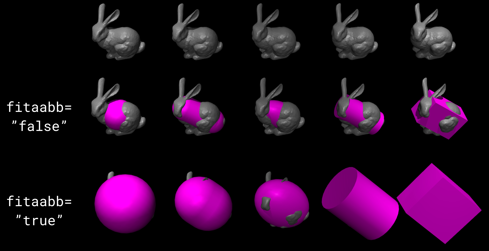
- fitaabb: [false, true], “false”
The compiler is able to replace a mesh with a geometric primitive fitted to that mesh; see geom below. If this attribute is “true”, the fitting procedure uses the axis-aligned bounding box (AABB) of the mesh, choosing the smallest primitive whose AABB contains the mesh AABB. Otherwise it uses the equivalent-inertia box of the mesh. The type of geometric primitive used for fitting is specified separately for each geom. The models used to generate the image on the right can be found here (fit inertia box) and here (fit aabb).
- eulerseq: string, “xyz”
This attribute specifies the sequence of Euler rotations for all euler attributes of elements that have spatial frames, as explained in Frame orientations. This must be a string with exactly 3 characters from the set {x, y, z, X, Y, Z}. The character at position n determines the axis around which the n-th rotation is performed. Lower case letters denote axes that rotate with the frame (intrinsic), while upper case letters denote axes that remain fixed in the parent frame (extrinsic). The “rpy” convention used in URDF corresponds to “XYZ” in MJCF.
- meshdir: string, optional
This attribute instructs the compiler where to look for mesh and height field files. The full path to a file is determined as follows. If the strippath attribute described above is “true”, all path information from the file name is removed. The following checks are then applied in order: (1) if the file name contains an absolute path, it is used without further changes; (2) if this attribute is set and contains an absolute path, the full path is the string given here appended with the file name; (3) the full path is the path to the main MJCF model file, appended with the value of this attribute if specified, appended with the file name.
- texturedir: string, optional
This attribute is used to instruct the compiler where to look for texture files. It works in the same way as meshdir above.
- assetdir: string, optional
This attribute sets the values of both meshdir and texturedir above. Values in the latter attributes take precedence over assetdir.
- discardvisual: [false, true], “false” for MJCF, “true” for URDF
This attribute instructs the compiler to discard all model elements which are purely visual and have no effect on the physics (with one exception, see below). This often enables smaller mjModel structs and faster simulation.
All materials are discarded.
All textures are discarded.
All geoms with contype=conaffinity=0 are discarded, if they are not referenced in another MJCF element. If a discarded geom was used for inferring body inertia, an explicit inertial element is added to the body.
All meshes which are not referenced by any geom (in particular those discarded above) are discarded.
The resulting compiled model will have exactly the same dynamics as the original model. The only engine-level computation which might change is the output of raycasting computations, as used for example by rangefinder sensors, since raycasting reports distances to visual geoms. When visualizing models compiled with this flag, it is important to remember that collision geoms are often placed in a group which is invisible by default.
- usethread: [false, true], “true”
If this attribute is “true”, the model compiler will run in multi-threaded mode. Multi-threading is used for computing the length ranges of actuators and for parallel loading and processing of meshes.
- fusestatic: [false, true], “false” for MJCF, “true” for URDF
This attribute controls a compiler optimization feature where static bodies are fused with their parent, and any elements defined in those bodies are reassigned to the parent. Static bodies are fused with their parent unless
They are referenced by another element in the model.
They contain a site which is referenced by a force or torque sensor.
This optimization is particularly useful when importing URDF models which often have many dummy bodies, but can also be used to optimize MJCF models. After optimization, the new model has identical kinematics and dynamics as the original but is faster to simulate.
- inertiafromgeom: [false, true, auto], “auto”
This attribute controls the automatic inference of body masses and inertias from geoms attached to the body. If this setting is “false”, no automatic inference is performed. In that case each body must have explicitly defined mass and inertia with the inertial element, or else a compile error will be generated. If this setting is “true”, the mass and inertia of each body will be inferred from the geoms attached to it, overriding any values specified with the inertial element. The default setting “auto” means that masses and inertias are inferred automatically only when the inertial element is missing in the body definition. One reason to set this attribute to “true” instead of “auto” is to override inertial data imported from a poorly designed model. In particular, a number of publicly available URDF models have seemingly arbitrary inertias which are too large compared to the mass. This results in equivalent inertia boxes which extend far beyond the geometric boundaries of the model. Note that the built-in OpenGL visualizer can render equivalent inertia boxes.
- alignfree: [false, true], “false”
This attribute toggles the default behaviour of an optimization that applies to bodies with a free joint and no child bodies. When true, the body frame and free joint will automatically be aligned with inertial frame, which leads to both faster and more stable simulation. See freejoint/align for details.
- inertiagrouprange: int(2), “0 5”
This attribute specifies the range of geom groups that are used to infer body masses and inertias (when such inference is enabled). The group attribute of geom is an integer. If this integer falls in the range specified here, the geom will be used in the inertial computation, otherwise it will be ignored. This feature is useful in models that have redundant sets of geoms for collision and visualization. Note that the world body does not participate in the inertial computations, so any geoms attached to it are automatically ignored. Therefore it is not necessary to adjust this attribute and the geom-specific groups so as to exclude world geoms from the inertial computation.
- saveinertial: [false, true], “false”
If set to “true”, the compiler will save explicit inertial clauses for all bodies.
compiler/lengthrange #
This element controls the computation of actuator length ranges. For an overview of this functionality see Length range section. Note that if this element is omitted the defaults shown below still apply. In order to disable length range computations altogether, include this element and set mode=”none”.
- mode: [none, muscle, muscleuser, all], “muscle”
Determines the type of actuators to which length range computation is applied. “none” disables this functionality. “all” applies it to all actuators. “muscle” applies it to actuators whose gaintype or biastype is set to “muscle”. “muscleuser” applies it to actuators whose gaintype or biastype is set to either “muscle” or “user”. The default is “muscle” because MuJoCo’s muscle model requires actuator length ranges to be defined.
- useexisting: [false, true], “true”
If this attribute is “true” and the length range for a given actuator is already defined in the model, the existing value will be used and the automatic computation will be skipped. The range is considered defined if the first number is smaller than the second number. The only reason to set this attribute to “false” is to force re-computation of actuator length ranges - which is needed when the model geometry is modified. Note that the automatic computation relies on simulation and can be slow, so saving the model and using the existing values when possible is recommended.
- uselimit: [false, true], “false”
If this attribute is “true” and the actuator is attached to a joint or a tendon which has limits defined, these limits will be copied into the actuator length range and the automatic computation will be skipped. This may seem like a good idea but note that in complex models the feasible range of tendon actuators depends on the entire model, and may be smaller than the user-defined limits for that tendon. So the safer approach is to set this to “false”, and let the automatic computation discover the feasible range.
- accel: real, “20”
This attribute scales the forces applied to the simulation in order to push each actuator to its smallest and largest length. The force magnitude is computed so that the resulting joint-space acceleration vector has norm equal to this attribute.
- maxforce: real, “0”
The force computed via the accel attribute above can be very large when the actuator has very small moments. Such a force will still produce reasonable acceleration (by construction) but large numbers could cause numerical issues. Although we have never observed such issues, the present attribute is provided as a safeguard. Setting it to a value larger than 0 limits the norm of the force being applied during simulation. The default setting of 0 disables this safeguard.
- timeconst: real, “1”
The simulation is damped in a non-physical way so as to push the actuators to their limits without the risk of instabilities. This is done by simply scaling down the joint velocity at each time step. In the absence of new accelerations, such scaling will decrease the velocity exponentially. The timeconst attribute specifies the time constant of this exponential decrease, in seconds.
- timestep: real, “0.01”
The timestep used for the internal simulation. Setting this to 0 will cause the model timestep to be used. The latter is not the default because models that can go unstable usually have small timesteps, while the simulation here is artificially damped and very stable. To speed up the length range computation, users can attempt to increase this value.
- inttotal: real, “10”
The total time interval (in seconds) for running the internal simulation, for each actuator and actuator direction. Each simulation is initialized at qpos0. It is expected to settle after inttotal time has passed.
- interval: real, “2”
The time interval at the end of the simulation over which length data is collected and analyzed. The maximum (or respectively minimum) length achieved during this interval is recorded. The difference between the maximum and minimum is also recorded and is used as a measure of divergence. If the simulation settles, this difference will be small. If it is not small, this could be because the simulation has not yet settled - in which case the above attributes should be adjusted - or because the model does not have sufficient joint and tendon limits and so the actuator range is effectively unlimited. Both of these conditions cause the same compiler error. Recall that contacts are disabled in this simulation, so joint and tendon limits as well as overall geometry are the only things that can prevent actuators from having infinite length.
- tolrange: real, “0.05”
This determines the threshold for detecting divergence and generating a compiler error. The range of actuator lengths observed during interval is divided by the overall range computed via simulation. If that value is larger than tolrange, a compiler error is generated. So one way to suppress compiler errors is to simply make this attribute larger, but in that case the results could be inaccurate.
size#
This element specifies size parameters that cannot be inferred from the number of elements in the model. Unlike the fields of mjOption which can be modified at runtime, sizes are structural parameters and should not be modified after compilation.
- memory: string, “-1”
This attribute specifies the size of memory allocated for dynamic arrays in the
mjData.arenamemory space, in bytes. The default setting of-1instructs the compiler to guess how much space to allocate. Appending the digits with one of the letters {K, M, G, T, P, E} sets the unit to be {kilo, mega, giga, tera, peta, exa}-byte, respectively. Thus “16M” means “allocate 16 megabytes ofarenamemory”. See the Memory allocation section for details.
- njmax: int, “-1” (legacy)
This is a deprecated legacy attribute. It previously determined the maximum allowed number of constraints. Currently it means “allocate as much memory as would have previously been required for this number of constraints”. Specifying both njmax and memory leads to an error.
- nconmax: int, “-1” (legacy)
This attribute specifies the maximum number of contacts that will be generated at runtime. If the number of active contacts is about to exceed this value, the extra contacts are discarded and a warning is generated. This is a deprecated legacy attribute which previously affected memory allocation. It is kept for backwards compatibility and debugging purposes.
- nstack: int, “-1” (legacy)
This is a deprecated legacy attribute. It previously determined the maximum size of the stack. If nstack is specified, then the size of
mjData.narenaisnstack * sizeof(mjtNum)bytes, plus an additional space for the constraint solver. Specifying both nstack and memory leads to an error.
- nuserdata: int, “0”
The size of the field mjData.userdata of mjData. This field should be used to store custom dynamic variables. See also User parameters.
- nkey: int, “0”
The number of key frames allocated in mjModel is the larger of this value and the number of key elements below. Note that the interactive simulator has the ability to take snapshots of the system state and save them as key frames.
- nuser_body: int, “-1”
The number of custom user parameters added to the definition of each body. See also User parameters. The parameter values are set via the user attribute of the body element. These values are not accessed by MuJoCo. They can be used to define element properties needed in user callbacks and other custom code.
- nuser_jnt: int, “-1”
The number of custom user parameters added to the definition of each joint.
- nuser_geom: int, “-1”
The number of custom user parameters added to the definition of each geom.
- nuser_site: int, “-1”
The number of custom user parameters added to the definition of each site.
- nuser_cam: int, “-1”
The number of custom user parameters added to the definition of each camera.
- nuser_tendon: int, “-1”
The number of custom user parameters added to the definition of each tendon.
- nuser_actuator: int, “-1”
The number of custom user parameters added to the definition of each actuator.
- nuser_sensor: int, “-1”
The number of custom user parameters added to the definition of each sensor.
statistic#
This element is used to override model statistics computed by the compiler. These statistics are not only informational but are also used to scale various components of the rendering and perturbation. We provide an override mechanism in the XML because it is sometimes easier to adjust a small number of model statistics than a larger number of visual parameters.
- meanmass: real, optional
If this attribute is specified, it replaces the value of mjModel.stat.meanmass computed by the compiler. The computed value is the average body mass, not counting the massless world body. At runtime this value scales the perturbation force.
- meaninertia: real, optional
If this attribute is specified, it replaces the value of mjModel.stat.meaninertia computed by the compiler. The computed value is the average diagonal element of the joint-space inertia matrix when the model is in qpos0. At runtime this value scales the solver cost and gradient used for early termination.
- meansize: real, optional
If this attribute is specified, it replaces the value of
mjModel.stat.meansizecomputed by the compiler. At runtime this value multiplies the attributes of the scale element above, and acts as their length unit. If specific lengths are desired, it can be convenient to set meansize to a round number like 1 or 0.01 so that scale values are in recognized length units. This is the only semantic of meansize and setting it has no other side-effect. The automatically computed value is heuristic, representing the average body radius. The heuristic is based on geom sizes when present, the distances between joints when present, and the sizes of the body equivalent inertia boxes.
- extent: real, optional
If this attribute is specified, it replaces the value of mjModel.stat.extent computed by the compiler. The computed value is half the side of the bounding box of the model in the initial configuration. At runtime this value is multiplied by some of the attributes of the map element above. When the model is first loaded, the free camera’s initial distance from the center (see below) is 1.5 times the extent. Must be strictly positive.
- center: real(3), optional
If this attribute is specified, it replaces the value of mjModel.stat.center computed by the compiler. The computed value is the center of the bounding box of the entire model in the initial configuration. This 3D vector is used to center the view of the free camera when the model is first loaded.
asset#
This is a grouping element for defining assets. It does not have attributes. Assets are created in the model so that
they can be referenced from other model elements; recall the discussion of Assets in the Overview
chapter. Assets opened from a file can be identified in two different ways: filename extensions or the content_type
attribute. MuJoCo will attempt to open a file specified by the content type provided, and only defaults to the filename
extension if no content_type attribute is specified. The content type is ignored if the asset isn’t loaded from a
file.
asset/mesh#
This element creates a mesh asset, which can then be referenced from geoms. If the referencing geom type is mesh the mesh is instantiated in the model, otherwise a geometric primitive is automatically fitted to it; see the geom element below.
MuJoCo works with triangulated meshes. They can be loaded from binary STL files, OBJ files or MSH files with custom format described below, or vertex and face data specified directly in the XML. Software such as MeshLab can be used to convert from other mesh formats to STL or OBJ. While any collection of triangles can be loaded as a mesh and rendered, collision detection works with the convex hull of the mesh as explained in Collision detection. The mesh appearance (including texture mapping) is controlled by the material and rgba attributes of the referencing geom, similarly to height fields.
Meshes can have explicit texture coordinates instead of relying on the automated texture mapping mechanism. When provided, these explicit coordinates have priority. Note that texture coordinates can be specified with OBJ files and MSH files, as well as explicitly in the XML with the texcoord attribute, but not via STL files. These mechanism cannot be mixed. So if you have an STL mesh, the only way to add texture coordinates to it is to convert to one of the other supported formats.
Legacy MSH file format
The binary MSH file starts with 4 integers specifying the number of vertex positions (nvertex), vertex normals (nnormal), vertex texture coordinates (ntexcoord), and vertex indices making up the faces (nface), followed by the numeric data. nvertex must be at least 4. nnormal and ntexcoord can be zero (in which case the corresponding data is not defined) or equal to nvertex. nface can also be zero, in which case faces are constructed automatically from the convex hull of the vertex positions. The file size in bytes must be exactly: 16 + 12*(nvertex + nnormal + nface) + 8*ntexcoord. The contents of the file must be as follows:
(int32) nvertex
(int32) nnormal
(int32) ntexcoord
(int32) nface
(float) vertex_positions[3*nvertex]
(float) vertex_normals[3*nnormal]
(float) vertex_texcoords[2*ntexcoord]
(int32) face_vertex_indices[3*nface]
Poorly designed meshes can display rendering artifacts. In particular, the shadow mapping mechanism relies on having some distance between front and back-facing triangle faces. If the faces are repeated, with opposite normals as determined by the vertex order in each triangle, this causes shadow aliasing. The solution is to remove the repeated faces (which can be done in MeshLab) or use a better designed mesh. Flipped faces are checked by MuJoCo for meshes specified as OBJ or XML and an error message is returned.
The size of the mesh is determined by the 3D coordinates of the vertex data in the mesh file, multiplied by the components of the scale attribute below. Scaling is applied separately for each coordinate axis. Note that negative scaling values can be used to flip the mesh; this is a legitimate operation. The size parameters of the referencing geoms are ignored, similarly to height fields. We also provide a mechanism to translate and rotate the 3D coordinates, using the attributes refpos and refquat.
A mesh can also be defined without faces (a point cloud essentially). In that case the convex hull is constructed automatically.This makes it easy to construct simple shapes directly in the XML. For example, a pyramid can be created as follows:
<asset>
<mesh name="tetrahedron" vertex="0 0 0 1 0 0 0 1 0 0 0 1"/>
</asset>
Positioning and orienting is complicated by the fact that vertex data in the source asset are often relative to coordinate frames whose origin is not inside the mesh. In contrast, MuJoCo expects the origin of a geom’s local frame to coincide with the geometric center of the shape. We resolve this discrepancy by pre-processing the mesh in the compiler, so that it is centered around (0,0,0) and its principal axes of inertia are the coordinate axes. We save the translation and rotation offsets applied to the source asset in mjModel.mesh_pos and mjModel.mesh_quat; these are required if one reads vertex data from the source and needs to re-apply the transform. These offsets are then composed with the referencing geom’s position and orientation; see also the mesh attribute of geom below. Fortunately most meshes used in robot models are designed in a coordinate frame centered at the joint. This makes the corresponding MJCF model intuitive: we set the body frame at the joint, so that the joint position is (0,0,0) in the body frame, and simply reference the mesh. Below is an MJCF model fragment of a forearm, containing all the information needed to put the mesh where one would expect it to be. The body position is specified relative to the parent body, namely the upper arm (not shown). It is offset by 35 cm which is the typical length of the human upper arm. If the mesh vertex data were not designed in the above convention, we would have to use the geom position and orientation (or the refpos, refquat mechanism) to compensate, but in practice this is rarely needed.
<asset>
<mesh file="forearm.stl"/>
</asset>
<body pos="0 0 0.35"/>
<joint type="hinge" axis="1 0 0"/>
<geom type="mesh" mesh="forearm"/>
</body>
The inertial computation mentioned above is part of an algorithm used not only to center and align the mesh, but also to infer the mass and inertia of the body to which it is attached. This is done by computing the centroid of the triangle faces, connecting each face with the centroid to form a triangular pyramid, computing the mass and signed inertia of all pyramids (considered solid, or hollow if shellinertia is true) and accumulating them. The sign ensures that pyramids on the outside of the surfaces are subtracted, as can occur with concave geometries. This algorithm can be found in section 1.3.8 of Computational Geometry in C (Second Edition) by Joseph O’Rourke.
The full list of processing steps applied by the compiler to each mesh is as follows:
For STL meshes, remove any repeated vertices and re-index the faces if needed. If the mesh is not STL, we assume that the desired vertices and faces have already been generated and do not apply removal or re-indexing;
If vertex normals are not provided, generate normals automatically, using a weighted average of the surrounding face normals. If sharp edges are encountered, the renderer uses the face normals to preserve the visual information about the edge, unless smoothnormal is true. Note that normals cannot be provided with STL meshes;
Scale, translate and rotate the vertices and normals, re-normalize the normals in case of scaling. Save these transformations in
mjModel.mesh_{pos, quat, scale}.Construct the convex hull if specified;
Find the centroid of all triangle faces, and construct the union-of-pyramids representation. Triangles whose area is too small (below the mjMINVAL value of 1E-14) result in compile error;
Compute the center of mass and inertia matrix of the union-of-pyramids. Use eigenvalue decomposition to find the principal axes of inertia. Center and align the mesh, saving the translational and rotational offsets for subsequent geom-related computations.
- name: string, optional
Name of the mesh, used for referencing. If omitted, the mesh name equals the file name without the path and extension.
- class: string, optional
Defaults class for setting unspecified attributes (only scale in this case).
- content_type: string, optional
If the file attribute is specified, then this sets the Media Type (formerly known as MIME type) of the file to be loaded. Any filename extensions will be overloaded. Currently
model/vnd.mujoco.msh,model/obj, andmodel/stlare supported.
- file: string, optional
The file from which the mesh will be loaded. The path is determined as described in the meshdir attribute of compiler. The file extension must be “stl”, “msh”, or “obj” (not case sensitive) specifying the file type. If the file name is omitted, the vertex attribute becomes required.
- scale: real(3), “1 1 1”
This attribute specifies the scaling that will be applied to the vertex data along each coordinate axis. Negative values are allowed, resulting in flipping the mesh along the corresponding axis.
- inertia: [convex, exact, legacy, shell], “legacy”
This attribute controls how the mesh is used when mass and inertia are inferred from geometry. The default value is legacy for backward compatibility, but convex is recommended.
convex: Use the mesh’s convex hull to compute volume and inertia, assuming uniform density.
exact: Compute volume and inertia exactly, even for non-convex meshes. This algorithm requires a well-oriented, watertight mesh and will error otherwise.
legacy: Use the legacy algorithm, leads to volume overcounting for non-convex meshes. Though currently the default to avoid breakages, it is not recommended.
shell: Assume mass is concentrated on the surface of the mesh. Use the mesh’s surface to compute the inertia, assuming uniform surface density.
- smoothnormal: [false, true], “false”
Controls the automatic generation of vertex normals when normals are not given explicitly. If true, smooth normals are generated by averaging the face normals at each vertex, with weight proportional to the face area. If false, faces at large angles relative to the average normal are excluded from the average. In this way, sharp edges (as in cube edges) are not smoothed.
- maxhullvert: int, “-1”
Maximum number of vertices in a mesh’s convex hull. Currently this is implemented by asking qhull to terminate after maxhullvert vertices. The default value of -1 means “unlimited”. Positive values must be larger than 3.
- vertex: real(3*nvert), optional
Vertex 3D position data. You can specify position data in the XML using this attribute, or using a binary file, but not both.
- normal: real(3*nvert), optional
Vertex 3D normal data. If specified, the number of normals must equal the number of vertices. The model compiler normalizes the normals automatically.
- texcoord: real(2*nvert), optional
Vertex 2D texture coordinates, which are numbers between 0 and 1. If specified, the number of texture coordinate pairs must equal the number of vertices.
- face: int(3*nface), optional
Faces of the mesh. Each face is a sequence of 3 vertex indices, in counter-clockwise order. The indices must be integers between 0 and nvert-1.
- refpos: real(3), “0 0 0”
Reference position relative to which the 3D vertex coordinates are defined. This vector is subtracted from the positions.
- refquat: real(4), “1 0 0 0”
Reference orientation relative to which the 3D vertex coordinates and normals are defined. The conjugate of this quaternion is used to rotate the positions and normals. The model compiler normalizes the quaternion automatically.
- builtin: string, optional
The mesh is generated by the compiler from a set of parameters specified in params. When saved to XML, meshes produced this way are converted to explicit vertices. The Python bindings include convenience methods for generating these meshes. The available built-in types, their parameters and semantics are:
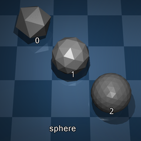
- sphere (subdivision)
Repeated subdivisions of a unit icosahedron (“icosphere”). For \(s\) subdivisions, this mesh has \(V = 2 + 10 \cdot 4^s\) vertices and \(F = 20 \cdot 4^s\) faces.
subdivision: integer in [0-4]: The number of subdivisions to apply to icosahedron faces.
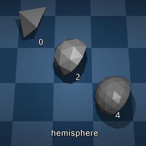
- hemisphere (resolution)
Quad-projected hemisphere. For resolution \(r\), this mesh has \(4r\) edges and vertices on the equator and a total of \(V = 2 + 2(r+1)(r+2)\) vertices and \(F = 4(r+1)(r+2)\) faces.
resolution: integer in [0-10]: Equator discretization of one hemisphere quadrant.
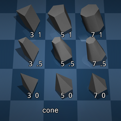
- cone (nvert, radius)
The convex hull of a regular unit polygon at z = -1 and a unit polygon with the given radius at z = 1. If radius is 1, the mesh a prism. If radius is 0, only a single vertex is placed at (0, 0, 1) and the mesh is a discrete cone. If radius is positive, the mesh is a truncated discrete cone.
nvert: integer >= 3: The number vertices in the polygon.
radius: real in [0, 1]: The radius of the top face.
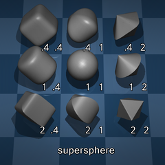
- supersphere (resolution, e, n)
A generalization of a sphere, also known as a superellipsoid (we use ‘supersphere’ since semiaxis rescaling is performed by the scale attribute). If the n and e parameters are both 1, the shape is a sphere. See here for more details.
resolution integer >= 3: Longitude and latitude discretization.
e: real >= 0: The “east-west” exponent.
n: real >= 0: The “north-south” exponent.
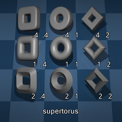
- supertorus (resolution, radius, s, t)
A generalization of a torus with major radius of 1 and given minor radius. If the s and t parameters are both 1, the shape is a torus. See here for more details. Note that this shape is inherently non-convex, and the standard caveats about mesh collisions apply.
resolution integer >= 3: Discretization of both circumfrences.
radius: real in (0, 1]: The minor radius of the torus.
s: real > 0: The “squareness” of minor sections.
t: real > 0: The “squareness” of major sections.
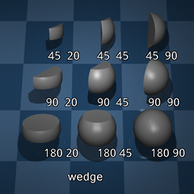
- wedge (res_phi, res_theta, fov_phi, fov_theta, gamma)
A slice of a unit spherical shell in spherical coordinates. This mesh is designed to be used by the tactile sensor, which reports data at the vertices.
res_phi: integer >= 0: The vertical resolution of the slice.
res_theta: integer >= 0: The horizontal resolution of the slice.
fov_phi: real in (0, 180]: The horizontal field of view (degrees).
fov_phi: real in (0, 90): The vertical field of view (degrees).
gamma: real in [0, 1]: Foveal deformation of the discretization.- plate (res_x, res_y)
A rectangular plate with given resolution in each dimension. This mesh is designed to be used by the tactile sensor, which reports data at the vertices.
res_x: integer > 0: The horizontal resolution of the plate.
res_y: integer > 0: The vertical resolution of the plate.
- params: real(nparam), optional
The parameters used to generate a builtin mesh. The number and type of parameters and their semantic depends on the mesh type. See mesh/builtin for details.
- material: string, optional
Fallback material for mesh geoms that do not specify their own material.
mesh/plugin #
Associate this mesh with an engine plugin. Either plugin or instance are required.
- plugin: string, optional
Plugin identifier, used for implicit plugin instantiation.
- instance: string, optional
Instance name, used for explicit plugin instantiation.
asset/hfield#
This element creates a height field asset, which can then be referenced from geoms with type “hfield”. A height field, also known as terrain map, is a 2D matrix of elevation data. The data can be specified in one of three ways:
The elevation data can be loaded from a PNG file. The image is converted internally to gray scale, and the intensity of each pixel is used to define elevation; white is high and black is low.
The elevation data can be loaded from a binary file in the custom format described below. As with all other matrices used in MuJoCo, the data ordering is row-major, like pixels in an image. If the data size is nrow-by-ncol, the file must have 4*(2+nrow*ncol) bytes:
(int32) nrow (int32) ncol (float32) data[nrow*ncol]
The elevation data can be left undefined at compile time. This is done by specifying the attributes nrow and ncol. The compiler allocates space for the height field data in mjModel and sets it to 0. The user can then generate a custom height field at runtime, either programmatically or using sensor data.
- name: string, optional
Name of the height field, used for referencing. If the name is omitted and a file name is specified, the height field name equals the file name without the path and extension.
- content_type: string, optional
If the file attribute is specified, then this sets the Media Type (formerly known as MIME types) of the file to be loaded. Any filename extensions will be overloaded. Currently
image/pngandimage/vnd.mujoco.hfieldare supported.
- file: string, optional
If this attribute is specified, the elevation data is loaded from the given file. If the file extension is “.png”, not case-sensitive, the file is treated as a PNG file. Otherwise it is treated as a binary file in the above custom format. The number of rows and columns in the data are determined from the file contents. Loading data from a file and setting nrow or ncol below to non-zero values results is compile error, even if these settings are consistent with the file contents.
- nrow: int, “0”
This attribute and the next are used to allocate a height field in mjModel. If the elevation attribute is not set, the elevation data is set to 0. This attribute specifies the number of rows in the elevation data matrix. The default value of 0 means that the data will be loaded from a file, which will be used to infer the size of the matrix.
- ncol: int, “0”
This attribute specifies the number of columns in the elevation data matrix.
- elevation: real(nrow*ncol), optional
This attribute specifies the elevation data matrix. Values are automatically normalized to lie between 0 and 1 by first subtracting the minimum value and then dividing by the (maximum-minimum) difference, if not 0. If not provided, values are set to 0. Note that the row order of data in mjModel and mjsHField is flipped w.r.t. the order in XML i.e., it is bottom-to-top.
- size: real(4), required
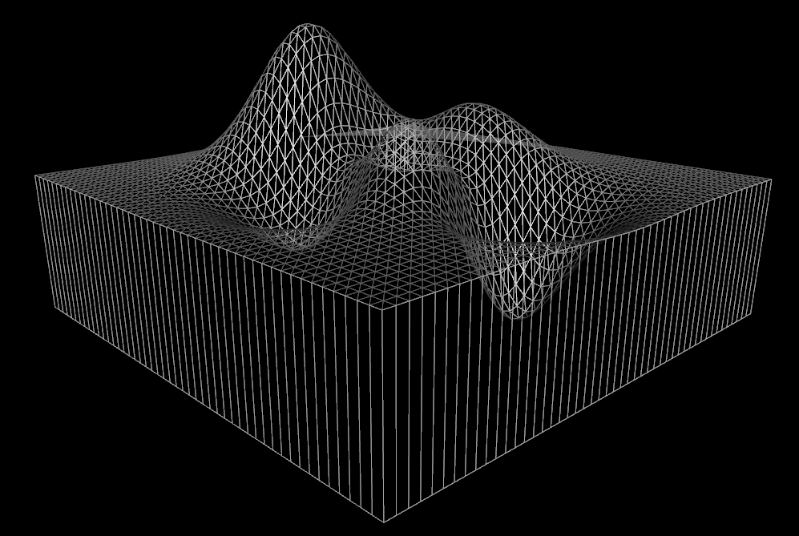
The four numbers here are (radius_x, radius_y, elevation_z, base_z). The height field is centered at the referencing geom’s local frame. Elevation is in the +Z direction. The first two numbers specify the X and Y extent (or “radius”) of the rectangle over which the height field is defined. This may seem unnatural for rectangles, but it is natural for spheres and other geom types, and we prefer to use the same convention throughout the model. The third number is the maximum elevation; it scales the elevation data which is normalized to [0-1]. Thus the minimum elevation point is at Z=0 and the maximum elevation point is at Z=elevation_z. The last number is the depth of a box in the -Z direction serving as a “base” for the height field. Without this automatically generated box, the height field would have zero thickness at places there the normalized elevation data is zero. Unlike planes which impose global unilateral constraints, height fields are treated as unions of regular geoms, so there is no notion of being “under” the height field. Instead a geom is either inside or outside the height field - which is why the inside part must have non-zero thickness. The example on the right is the MATLAB “peaks” surface saved in our custom height field format, and loaded as an asset with size = “1 1 1 0.1”. The horizontal size of the box is 2, the difference between the maximum and minimum elevation is 1, and the depth of the base added below the minimum elevation point is 0.1.
{kind=link}
asset/skin#
Skins are grouped under the deformable element. Specifying them here is deprecated.
asset/texture#
This element creates a texture asset, which is then referenced from a material asset, which is finally referenced from a model element that needs to be textured.
The texture data can be loaded from files or can be generated by the compiler as a procedural texture. Because different texture types require different parameters, only a subset of the attributes below are used for any given texture. Provisions are provided for loading cube and skybox textures from individual image files.
Three file formats are supported for loading textures: PNG, KTX, and a custom MuJoCo texture format. The
loader will use the extension of the file name to determine which format to use, defaulting to the custom format if
the extension is not recognized. Alternatively, the content_type attribute can be used to specify the format
explicitly. Only image/png, image/ktx, or image/vnd.mujoco.texture are supported.
The custom MuJoCo format is assumed to be a binary file containing the following data:
(int32) width
(int32) height
(byte) rgb_data[3*width*height]
- name: string, optional
As with all other assets, a texture must have a name in order to be referenced. However if the texture is loaded from a single file with the file attribute, the explicit name can be omitted and the file name (without the path and extension) becomes the texture name. If the name after parsing is empty and the texture type is not “skybox”, the compiler will generate an error.
- type: [2d, cube, skybox], “cube”
This attribute determines how the texture is represented and mapped to objects. It also determines which of the remaining attributes are relevant. The keywords have the following meaning:
The cube type has the effect of shrink-wrapping a texture cube over an object. Apart from the adjustment provided by the texuniform attribute of material, the process is automatic. Internally the GPU constructs a ray from the center of the object to each pixel (or rather fragment), finds the intersection of this ray with the cube surface (the cube and the object have the same center), and uses the corresponding texture color. The six square images defining the cube can be the same or different; if they are the same, only one copy is stored in mjModel. There are four mechanisms for specifying the texture data:
Single file (PNG or custom) specified with the file attribute, containing a square image which is repeated on each side of the cube. This is the most common approach. If for example the goal is to create the appearance of wood, repeating the same image on all sides is sufficient.
Single file containing a composite image from which the six squares are extracted by the compiler. The layout of the composite image is determined by the gridsize and gridlayout attributes.
Six separate files specified with the attributes fileright, fileleft etc, each containing one square image.
Procedural texture generated internally. The type of procedural texture is determined by the builtin attribute. The texture data also depends on a number of parameters documented below.
The skybox type is very similar to cube mapping, and in fact the texture data is specified in exactly the same way. The only difference is that the visualizer uses the first such texture defined in the model to render a skybox. This is a large box centered at the camera and always moving with it, with size determined automatically from the far clipping plane. The idea is that images on the skybox appear stationary, as if they are infinitely far away. If such a texture is referenced from a material applied to a regular object, the effect is equivalent to a cube map. Note however that the images suitable for skyboxes are rarely suitable for texturing objects.
The 2d type maps a 2D image to a 3D object using texture coordinates (a.k.a UV coordinates). However, UV coordinates are only available for meshes. For primitive geoms, the texture is mapped to the object surface using the local XY coordinates of the geom, effectively projecting the texture along the Z axis. This sort of mapping is only suitable for planes and height fields, since their top surfaces always face the Z axis. 2d textures can be rectangular, unlike the sides of cube textures which must be square. The scaling can be controlled with the texrepeat attribute of material. The data can be loaded from a single file or created procedurally.
- colorspace: [auto, linear, sRGB], “auto”
This attribute determines the color space of the texture. The default value
automeans that the color space will be determined from the image file itself. If no color space is defined in the file, thenlinearis assumed.
- content_type: string, optional
If the file attribute is specified, then this sets the Media Type (formerly known as MIME types) of the file to be loaded. Any filename extensions will be ignored. Currently
image/png,image/ktx, andimage/vnd.mujoco.textureare supported.
- file: string, optional
If this attribute is specified, and the builtin attribute below is set to “none”, the texture data is loaded from a single file. See the texturedir attribute of compiler regarding the file path.
- gridsize: int(2), “1 1”
When a cube or skybox texture is loaded from a single file, this attribute and the next specify how the six square sides of the texture cube are obtained from the single image. The default setting “1 1” means that the same image is repeated on all sides of the cube. Otherwise the image is interpreted as a grid from which the six sides are extracted. The two integers here correspond to the number of rows and columns in the grid. Each integer must be positive and the product of the two cannot exceed 12. The number of rows and columns in the image must be integer multiples of the number of rows and columns in the grid, and these two multiples must be equal, so that the extracted images are square.
- gridlayout: string, “…………”
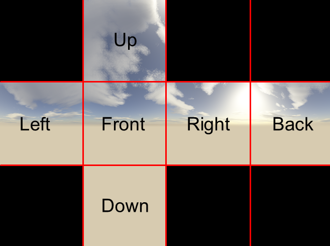
When a cube or skybox texture is loaded from a single file, and the grid size is different from “1 1”, this attribute specifies which grid cells are used and which side of the cube they correspond to. There are many skybox textures available online as composite images, but they do not use the same convention, which is why we have designed a flexible mechanism for decoding them. The string specified here must be composed of characters from the set {‘.’, ‘R’, ‘L’, ‘U’, ‘D’, ‘F’, ‘B’}. The number of characters must equal the product of the two grid sizes. The grid is scanned in row-major order. The ‘.’ character denotes an unused cell. The other characters are the first letters of Right, Left, Up, Down, Front, Back; see below for coordinate frame description. If the symbol for a given side appears more than once, the last definition is used. If a given side is omitted, it is filled with the color specified by the rgb1 attribute. For example, the desert landscape below can be loaded as a skybox or a cube map using gridsize = “3 4” and gridlayout = “.U..LFRB.D..” The full-resolution image file without the markings can be downloaded here.
{kind=link}
{kind=link}
- fileright, fileleft, fileup, filedown, filefront, filebackstring, optional
These attributes are used to load the six sides of a cube or skybox texture from separate files, but only if the file attribute is omitted and the builtin attribute is set to “none”. If any one of these attributes are omitted, the corresponding side is filled with the color specified by the rgb1 attribute. The coordinate frame here is unusual. When a skybox is viewed with the default free camera in its initial configuration, the Right, Left, Up, Down sides appear where one would expect them. The Back side appears in front of the viewer, because the viewer is in the middle of the box and is facing its back. There is however a complication. In MuJoCo the +Z axis points up, while existing skybox textures (which are non-trivial to design) tend to assume that the +Y axis points up. Changing coordinates cannot be done by merely renaming files; instead one would have to transpose and/or mirror some of the images. To avoid this complication, we render the skybox rotated by 90 deg around the +X axis, in violation of our convention. However we cannot do the same for regular objects. Thus the mapping of skybox and cube textures on regular objects, expressed in the local frame of the object, is as follows: Right = +X, Left = -X, Up = +Y, Down = -Y, Front = +Z, Back = -Z.
- builtin: [none, gradient, checker, flat], “none”
This and the remaining attributes control the generation of procedural textures. If the value of this attribute is different from “none”, the texture is treated as procedural and any file names are ignored. The keywords have the following meaning:
- gradient
Generates a color gradient from rgb1 to rgb2. The interpolation in color space is done through a sigmoid function. For cube and skybox textures the gradient is along the +Y axis, i.e., from top to bottom for skybox rendering.
- checker
Generates a 2-by-2 checker pattern with alternating colors given by rgb1 and rgb2. This is suitable for rendering ground planes and also for marking objects with rotational symmetries. Note that 2d textures can be scaled so as to repeat the pattern as many times as necessary. For cube and skybox textures, the checker pattern is painted on each side of the cube.
- flat
Fills the entire texture with rgb1, except for the bottom face of cube and skybox textures which is filled with rgb2.
- rgb1: real(3), “0.8 0.8 0.8”
The first color used for procedural texture generation. This color is also used to fill missing sides of cube and skybox textures loaded from files. The components of this and all other RGB(A) vectors should be in the range [0 1].
- rgb2: real(3), “0.5 0.5 0.5”
The second color used for procedural texture generation.
- mark: [none, edge, cross, random], “none”
Procedural textures can be marked with the markrgb color, on top of the colors determined by the builtin type. “edge” means that the edges of all texture images are marked. “cross” means that a cross is marked in the middle of each image. “random” means that randomly chosen pixels are marked. All markings are one-pixel wide, thus the markings appear larger and more diffuse on smaller textures.
- markrgb: real(3), “0 0 0”
The color used for procedural texture markings.
- random: real, “0.01”
When the mark attribute is set to “random”, this attribute determines the probability of turning on each pixel. Note that larger textures have more pixels, and the probability here is applied independently to each pixel – thus the texture size and probability need to be adjusted jointly. Together with a gradient skybox texture, this can create the appearance of a night sky with stars. The random number generator is initialized with a fixed seed.
- width: int, “0”
The width of a procedural texture, i.e., the number of columns in the image. Larger values usually result in higher quality images, although in some cases (e.g. checker patterns) small values are sufficient. For textures loaded from files, this attribute is ignored.
- height: int, “0”
The height of the procedural texture, i.e., the number of rows in the image. For cube and skybox textures, this attribute is ignored and the height is set to 6 times the width. For textures loaded from files, this attribute is ignored.
- hflip: [false, true], “false”
If true, images loaded from file are flipped in the horizontal direction. Does not affect procedural textures.
- vflip: [false, true], “false”
If true, images loaded from file are flipped in the vertical direction. Does not affect procedural textures.
- nchannel: int, “3”
The number of channels in the texture image file. This allows loading 4-channel textures (RGBA) or single-channel textures (e.g., for Physics-Based Rendering properties such as roughness or metallic).
asset/material#
This element creates a material asset. It can be referenced from skins, geoms, sites and tendons to set their appearance. Note that all these elements also have a local rgba attribute, which is more convenient when only colors need to be adjusted, because it does not require creating materials and referencing them. Materials are useful for adjusting appearance properties beyond color. However once a material is created, it is more natural the specify the color using the material, so that all appearance properties are grouped together.
- name: string, required
Name of the material, used for referencing.
- class: string, optional
Defaults class for setting unspecified attributes.
- texture: string, optional
If this attribute is specified, the material has a texture associated with it. Referencing the material from a model element will cause the texture to be applied to that element. Note that the value of this attribute is the name of a texture asset, not a texture file name. Textures cannot be loaded in the material definition; instead they must be loaded explicitly via the texture element and then referenced here. The texture referenced here is used for specifying the RGB values. For advanced rendering (e.g., Physics-Based Rendering), more texture types need to be specified (e.g., roughness, metallic). In this case, this texture attribute should be omitted, and the texture types should be specified using layer child elements. Note however that the built-in renderer does not support PBR properties, so these advanced rendering features are only available when using an external renderer.
- texrepeat: real(2), “1 1”
This attribute applies to textures of type “2d”. It specifies how many times the texture image is repeated, relative to either the object size or the spatial unit, as determined by the next attribute.
- texuniform: [false, true], “false”
For cube textures, this attribute controls how cube mapping is applied. The default value “false” means apply cube mapping directly, using the actual size of the object. The value “true” maps the texture to a unit object before scaling it to its actual size (geometric primitives are created by the renderer as unit objects and then scaled). In some cases this leads to more uniform texture appearance, but in general, which settings produces better results depends on the texture and the object. For 2d textures, this attribute interacts with texrepeat above. Let texrepeat be N. The default value “false” means that the 2d texture is repeated N times over the (z-facing side of the) object. The value “true” means that the 2d texture is repeated N times over one spatial unit, regardless of object size.
- emission: real, “0”
Emission in OpenGL has the RGBA format, however we only provide a scalar setting. The RGB components of the OpenGL emission vector are the RGB components of the material color multiplied by the value specified here. The alpha component is 1.
- specular: real, “0.5”
Specularity in OpenGL has the RGBA format, however we only provide a scalar setting. The RGB components of the OpenGL specularity vector are all equal to the value specified here. The alpha component is 1. This value should be in the range [0 1].
- shininess: real, “0.5”
Shininess in OpenGL is a number between 0 and 128. The value given here is multiplied by 128 before passing it to OpenGL, so it should be in the range [0 1]. Larger values correspond to tighter specular highlight (thus reducing the overall amount of highlight but making it more salient visually). This interacts with the specularity setting; see OpenGL documentation for details.
- reflectance: real, “0”
This attribute should be in the range [0 1]. If the value is greater than 0, and the material is applied to a plane or a box geom, the renderer will simulate reflectance. The larger the value, the stronger the reflectance. For boxes, only the face in the direction of the local +Z axis is reflective. Simulating reflectance properly requires ray-tracing. This renderer uses the stencil buffer and suitable projections instead to approximate it. Only the first reflective geom in the model is rendered as such. This adds one extra rendering pass through all geoms, in addition to the extra rendering pass added by each shadow-casting light.
- metallic: real, “-1”
This attribute corresponds to uniform metallicity coefficient applied to the entire material. This attribute has no effect in MuJoCo’s native renderer, but it can be useful when rendering scenes with a physically-based renderer. In this case, if a non-negative value is specified, this metallic value should be multiplied by the metallic texture sampled value to obtain the final metallicity of the material.
- roughness: real, “-1”
This attribute corresponds to uniform roughness coefficient applied to the entire material. This attribute has no effect in MuJoCo’s native renderer, but it can be useful when rendering scenes with a physically-based renderer. In this case, if a non-negative value is specified, this roughness value should be multiplied by the roughness texture sampled value to obtain the final roughness of the material.
- rgba: real(4), “1 1 1 1”
Color and transparency of the material. All components should be in the range [0 1]. Note that the texture color (if assigned) and the color specified here are multiplied component-wise. Thus the default value of “1 1 1 1” has the effect of leaving the texture unchanged. When the material is applied to a model element which defines its own local rgba attribute, the local definition has precedence. Note that this “local” definition could in fact come from a defaults class. The remaining material properties always apply.
material/layer#
If multiple textures are needed to specify the appearance of a material, the texture attribute cannot be used, and layer child elements must be used instead. Specifying both the texture attribute and layer child elements is an error.
- texture: string, required
Name of the texture, like the texture attribute.
- role: string, required
Role of the texture. The valid values, expected number of channels, and the role semantics are:
value
channels
description
rgb
3
base color / albedo [red, green, blue]
normal
3
bump map (surface normals)
occlusion
1
ambient occlusion
roughness
1
roughness
metallic
1
metallicity
opacity
1
opacity (alpha channel)
emissive
4
RGB light emission intensity, exposure weight in 4th channel
orm
3
packed 3 channel [occlusion, roughness, metallic]
rgba
4
packed 4 channel [red, green, blue, alpha]
asset/model#
This element specifies other MJCF models which may be used for attachment in the current model.
- name: string, optional
Name of the sub-model, used for referencing in attach. If unspecified, the model name is used.
- file: string, required
The file from which the sub-model will be loaded. Note that the sub-model must be a valid MJCF model.
- content_type string, optional
The file type to be loaded into a model. Currently only text/xml is supported.
(world)body #
This element is used to construct the kinematic tree via nesting. The element worldbody is used for the top-level body, while the element body is used for all other bodies. The top-level body is a restricted type of body: it cannot have child elements inertial and joint, and also cannot have any attributes. It corresponds to the origin of the world frame, within which the rest of the kinematic tree is defined. Its body name is automatically defined as “world”.
- name: string, optional
Name of the body.
- childclass: string, optional
If this attribute is present, all descendant elements that admit a defaults class will use the class specified here, unless they specify their own class or another body or frame with a childclass attribute is encountered along the chain of nested bodies and frames. Recall Default settings.
- mocap: [false, true], “false”
If this attribute is “true”, the body is labeled as a mocap body. This is allowed only for bodies that are children of the world body and have no joints. Such bodies are fixed from the viewpoint of the dynamics, but nevertheless the forward kinematics set their position and orientation from the fields
mjData.mocap_{pos,quat}at each time step. The size of these arrays is adjusted by the compiler so as to match the number of mocap bodies in the model. This mechanism can be used to stream motion capture data into the simulation. Mocap bodies can also be moved via mouse perturbations in the interactive visualizer, even in dynamic simulation mode. This can be useful for creating props with adjustable position and orientation.
- pos: real(3), optional
The 3D position of the body frame, in the parent coordinate frame. If undefined it defaults to (0,0,0).
- quat, axisangle, xyaxes, zaxis, euler
See Frame orientations.
- gravcomp: real, “0”
Gravity compensation force, specified as fraction of body weight. This attribute creates an upwards force applied to the body’s center of mass, countering the force of gravity. As an example, a value of
1creates an upward force equal to the body’s weight and compensates for gravity exactly. Values greater than1will create a net upwards force or buoyancy effect.
- sleep: [auto, never, allowed, init], “auto”
Sleep policy for the tree under this body. This attribute is only supported by moving bodies which are the root of a kinematic tree. For the default auto, the compiler will set the sleep policy as follows:
A tree which is affected by actuators is not allowed to sleep (overridable).
Trees which are connected by tendons which have non-zero stiffness and damping are not allowed to sleep (overridable).
Trees which are connected by tendons which connect more than two trees are not allowed to sleep (not overridable).
Constraint-free flexes are not allowed to sleep (not overridable).
All other trees are allowed to sleep (overridable).
The policies never and allowed constitute user overrides of the automatic compiler policy.
The init sleep policy can only be specified by the user and means “initialize this tree as asleep”. This policy is implemented in mj_resetData and mj_makeData and only applies to the default configuration. If a keyframe changes the configuration of (or assigns nonzero velocity to) a sleeping tree, it will be woken up. This policy is useful for very large models where waiting for the automatic sleeping mechanism to kick in can be expensive. Trees initialized as sleeping can be placed in unstable configurations like deep penetration or in mid-air, but will only move when woken up. Also note that this policy can fail. For example if a tree marked as sleep=”init” is in contact with a tree not marked as such (i.e., they are in the same island) then it is impossible to put the tree to sleep; such models will lead to a compilation error.
See implementation notes for more details.
- user: real(nbody_user), “0 0 …”
See User parameters.
body/inertial #
This element specifies the mass and inertial properties of the body. If this element is not included in a given body, the inertial properties are inferred from the geoms attached to the body. When a compiled MJCF model is saved, the XML writer saves the inertial properties explicitly using this element, even if they were inferred from geoms. The inertial frame is such that its center coincides with the center of mass of the body, and its axes coincide with the principal axes of inertia of the body. Thus the inertia matrix is diagonal in this frame.
- pos: real(3), required
Position of the inertial frame. This attribute is required even when the inertial properties can be inferred from geoms. This is because the presence of the inertial element itself disables the automatic inference mechanism.
- quat, axisangle, xyaxes, zaxis, euler
Orientation of the inertial frame. See Frame orientations.
- mass: real, required
Mass of the body. Negative values are not allowed. MuJoCo requires the inertia matrix in generalized coordinates to be positive-definite, which can sometimes be achieved even if some bodies have zero mass. In general however there is no reason to use massless bodies. Such bodies are often used in other engines to bypass the limitation that joints cannot be combined, or to attach sensors and cameras. In MuJoCo primitive joint types can be combined, and we have sites which are a more efficient attachment mechanism.
- diaginertia: real(3), optional
Diagonal inertia matrix, expressing the body inertia relative to the inertial frame. If this attribute is omitted, the next attribute becomes required.
- fullinertia: real(6), optional
Full inertia matrix M. Since M is 3-by-3 and symmetric, it is specified using only 6 numbers in the following order: M(1,1), M(2,2), M(3,3), M(1,2), M(1,3), M(2,3). The compiler computes the eigenvalue decomposition of M and sets the frame orientation and diagonal inertia accordingly. If non-positive eigenvalues are encountered (i.e., if M is not positive definite) a compile error is generated.
body/joint#
This element creates a joint. As explained in Kinematic tree, a joint creates motion degrees of freedom
between the body where it is defined and the body’s parent. If multiple joints are defined in the same body, the
corresponding spatial transformations (of the body frame relative to the parent frame) are applied in order. If no
joints are defined, the body is welded to its parent. Joints cannot be defined in the world body. At runtime the
positions and orientations of all joints defined in the model are stored in the vector mjData.qpos, in the order in
which they appear in the kinematic tree. The linear and angular velocities are stored in the vector mjData.qvel.
These two vectors have different dimensionality when free or ball joints are used, because such joints represent
rotations as unit quaternions.
- name: string, optional
Name of the joint.
- class: string, optional
Defaults class for setting unspecified attributes.
- type: [free, ball, slide, hinge], “hinge”
Type of the joint. The keywords have the following meaning: The free type creates a free “joint” with three translational degrees of freedom followed by three rotational degrees of freedom. In other words it makes the body floating. The rotation is represented as a unit quaternion. This joint type is only allowed in bodies that are children of the world body. No other joints can be defined in the body if a free joint is defined. Unlike the remaining joint types, free joints do not have a position within the body frame. Instead the joint position is assumed to coincide with the center of the body frame. Thus at runtime the position and orientation data of the free joint correspond to the global position and orientation of the body frame. Free joints cannot have limits.
The ball type creates a ball joint with three rotational degrees of freedom. The rotation is represented as a unit quaternion. The quaternion (1,0,0,0) corresponds to the initial configuration in which the model is defined. Any other quaternion is interpreted as a 3D rotation relative to this initial configuration. The rotation is around the point defined by the pos attribute. If a body has a ball joint, it cannot have other rotational joints (ball or hinge). Combining ball joints with slide joints in the same body is allowed.
The slide type creates a sliding or prismatic joint with one translational degree of freedom. Such joints are defined by a position and a sliding direction. For simulation purposes only the direction is needed; the joint position is used for rendering purposes.
The hinge type creates a hinge joint with one rotational degree of freedom. The rotation takes place around a specified axis through a specified position. This is the most common type of joint and is therefore the default. Most models contain only hinge and free joints.
- group: int, “0”
Integer group to which the joint belongs. This attribute can be used for custom tags. It is also used by the visualizer to enable and disable the rendering of entire groups of joints.
- pos: real(3), “0 0 0”
Position of the joint, specified in the frame of the body where the joint is defined. For free joints this attribute is ignored.
- axis: real(3), “0 0 1”
This attribute specifies the axis of rotation for hinge joints and the direction of translation for slide joints. It is ignored for free and ball joints. The vector specified here is automatically normalized to unit length as long as its length is greater than 10E-14; otherwise a compile error is generated.
- springdamper: real(2), “0 0”
When both numbers are positive, the compiler will override any stiffness and damping values specified with the attributes below, and will instead set them automatically so that the resulting mass-spring-damper for this joint has the desired time constant (first value) and damping ratio (second value). This is done by taking into account the joint inertia in the model reference configuration. Note that the format is the same as the solref parameter of the constraint solver.
- solreflimit, solimplimit
Constraint solver parameters for simulating joint limits. See Solver parameters.
- solreffriction, solimpfriction
Constraint solver parameters for simulating dry friction. See also Friction.
- stiffness: real, “0 0 0”
Joint stiffness coefficients \(a, b, c\). A positive \(a\) produces the standard restorative linear spring force \(f = -a x\), where \(x\) is the joint displacement from equilibrium given by springref.
If the optional second and third components are set, they define a nonlinear polynomial spring force \(f(x) = -(a x + b x^2 + c x^3)\). See Polynomial forces for details.
- range: real(2), “0 0”
The joint limits. Limits can be imposed on all joint types except for free joints. For hinge and ball joints, the range is specified in degrees or radians depending on the angle attribute of compiler. For ball joints, the limit is imposed on the angle of rotation (relative to the reference configuration) regardless of the axis of rotation. Only the second range parameter is used for ball joints; the first range parameter should be set to 0. See the Limit section in the Computation chapter for more information.
Setting this attribute without specifying limited is an error if autolimits is “false” in compiler.
- limited: [false, true, auto], “auto”
This attribute specifies if the joint has limits. It interacts with the range attribute. If this attribute is “false”, joint limits are disabled. If this attribute is “true”, joint limits are enabled. If this attribute is “auto”, and autolimits is set in compiler, joint limits will be enabled if range is defined.
- actuatorfrcrange: real(2), “0 0”
Range for clamping total actuator forces acting on this joint. See Force limits for details. It is available only for scalar joints (hinge and slider) and ignored for ball and free joints.
The compiler expects the first value to be smaller than the second value.
Setting this attribute without specifying actuatorfrclimited is an error if compiler-autolimits is “false”.
- actuatorfrclimited: [false, true, auto], “auto”
This attribute specifies whether actuator forces acting on the joint should be clamped. See Force limits for details. It is available only for scalar joints (hinge and slider) and ignored for ball and free joints.
This attribute interacts with the actuatorfrcrange attribute. If this attribute is “false”, actuator force clamping is disabled. If it is “true”, actuator force clamping is enabled. If this attribute is “auto”, and autolimits is set in compiler, actuator force clamping will be enabled if actuatorfrcrange is defined.
- actuatorgravcomp: [false, true], “false”
If this flag is enabled, gravity compensation applied to this joint is added to actuator forces (
mjData.qfrc_actuator) rather than passive forces (mjData.qfrc_passive). Notionally, this means that gravity compensation is the result of a control system rather than natural buoyancy. In practice, enabling this flag is useful when joint-level actuator force clamping is used. In this case, the total actuation force applied on a joint, including gravity compensation, is guaranteed to not exceed the specified limits. See Force limits and actuatorfrcrange for more details on this type of force limit.
- margin: real, “0”
The distance threshold below which limits become active. Recall that the Constraint solver normally generates forces as soon as a constraint becomes active, even if the margin parameter makes that happen at a distance. This attribute together with solreflimit and solimplimit can be used to model a soft joint limit.
- ref: real, “0”
The reference position or angle of the joint. This attribute is only used for slide and hinge joints. It defines the joint value corresponding to the initial model configuration. Note that the initial configuration itself is unmodified, only the value of the joint at this configuration. The amount of spatial transformation that the joint applies at runtime equals the current joint value stored in
mjData.qposminus this reference value stored inmjModel.qpos0. The meaning of these vectors is discussed in the Kinematic tree section in the Overview chapter.
- springref: real, “0”
The joint position or angle in which the joint spring (if any) achieves equilibrium. Similar to the vector mjModel.qpos0 which stores all joint reference values specified with the ref attribute above, all spring reference values specified with this attribute are stored in the vector mjModel.qpos_spring. The model configuration corresponding to mjModel.qpos_spring is also used to compute the spring reference lengths of all tendons, stored in mjModel.tendon_lengthspring. This is because tendons can also have springs.
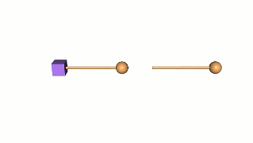
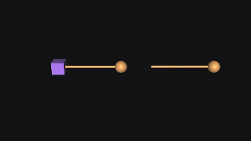
- armature: real, “0”
Additional inertia associated with movement of the joint that is not due to body mass. This added inertia is usually due to a rotor (a.k.a armature) spinning faster than the joint itself due to a geared transmission. In the illustration, we compare (left) a 2-dof system with an armature body (purple box), coupled with a gear ratio of \(3\) to the pendulum using a joint equality constraint, and (right) a simple 1-dof pendulum with an equivalent armature. Because the gear ratio appears twice, multiplying both forces and lengths, the effect is known as “reflected inertia” and the equivalent value is the inertia of the spinning body multiplied by the square of the gear ratio, in this case \(9=3^2\). The value applies to all degrees of freedom created by this joint.
Besides increasing the realism of joints with geared transmission, positive armature significantly improves simulation stability, even for small values, and is a recommended possible fix when encountering stability issues.
- damping: real, “0 0 0”
Damping coefficients \(a, b, c\). A positive \(a\) produces the standard dissipative linear damping force \(f(v) = -a v\), where \(v\) is the joint velocity. Despite its simplicity, larger damping values can make numerical integrators unstable, which is why our Euler integrator handles damping implicitly. See Integration in the Computation chapter.
If the optional second and third components are set, they define a nonlinear polynomial damping force \(f(v) = -(a v + b v |v| + c v^3)\). Note the anti-symmetrization of the quadratic term, ensuring that the force is an odd function of velocity. See Polynomial forces for details.
- frictionloss: real, “0”
Friction loss due to dry friction. This value is the same for all degrees of freedom created by this joint. Semantically friction loss does not make sense for free joints, but the compiler allows it. To enable friction loss, set this attribute to a positive value.
- user: real(njnt_user), “0 0 …”
See User parameters.
body/freejoint#
This element creates a free joint whose only attributes are name and group. The freejoint element is an XML shortcut for
<joint type="free" stiffness="0" damping="0" frictionloss="0" armature="0"/>
While this joint can evidently be created with the joint element, default joint settings could affect it. This is usually undesirable as physical free bodies do not have nonzero stiffness, damping, friction or armature. To avoid this complication, the freejoint element was introduced, ensuring joint defaults are not inherited. If the XML model is saved, it will appear as a regular joint of type free.
- name: string, optional
Name of the joint.
- group: int, “0”
Integer group to which the joint belongs. This attribute can be used for custom tags. It is also used by the visualizer to enable and disable the rendering of entire groups of joints.
- align: [false, true, auto], “auto”
When set to true, the body frame and free joint will automatically be aligned with inertial frame. When set to false, no alignment will occur. When set to auto, the compiler’s alignfree global attribute will be respected.
Inertial frame alignment is an optimization only applies to bodies with a free joint and no child bodies (“simple free bodies”). The alignment diagonalizes the 6x6 inertia matrix and minimizes bias forces, leading to faster and more stable simulation. While this behaviour is a strict improvement, it modifies the semantics of the free joint, making
qposandqvelvalues saved in older versions (for example, in keyframes) invalid.Note that the align attribute is never saved to XML. Instead, the pose of simple free bodies and their children will be modified such that the body frame and inertial frame are aligned.
body/geom#
This element creates a geom, and attaches it rigidly to the body within which the geom is defined. Multiple geoms can be attached to the same body. At runtime they determine the appearance and collision properties of the body. At compile time they can also determine the inertial properties of the body, depending on the presence of the inertial element and the setting of the inertiafromgeom attribute of compiler. This is done by summing the masses and inertias of all geoms attached to the body with geom group in the range specified by the inertiagrouprange attribute of compiler. The geom masses and inertias are computed using the geom shape, a specified density or a geom mass which implies a density, and the assumption of uniform density.
Geoms are not strictly required for physics simulation. One can create and simulate a model that only has bodies and joints. Such a model can even be visualized, using equivalent inertia boxes to represent bodies. Only contact forces would be missing from such a simulation. We do not recommend using such models, but knowing that this is possible helps clarify the role of bodies and geoms in MuJoCo.
- name: string, optional
Name of the geom.
- class: string, optional
Defaults class for setting unspecified attributes.
- type: [plane, hfield, sphere, capsule, ellipsoid, cylinder, box, mesh, sdf], “sphere”
Type of geometric shape. The keywords have the following meaning: The plane type defines a surface which is infinite for collision detection purposes. It can only be attached to the world body or static children of the world. The plane passes through a point specified via the pos attribute. It is normal to the Z axis of the geom’s local frame. The +Z direction corresponds to empty space. Thus the position and orientation defaults of (0,0,0) and (1,0,0,0) would create a ground plane at Z=0 elevation, with +Z being the vertical direction in the world (which is MuJoCo’s convention). Since the plane is infinite, it could have been defined using any other point in the plane. The specified position however has additional meaning with regard to rendering. If either of the first two size parameters are positive, the plane is rendered as a rectangle of finite size (in the positive dimensions). This rectangle is centered at the specified position. Three size parameters are required. The first two specify the half- size of the rectangle along the X and Y axes. The third size parameter is unusual: it specifies the spacing between the grid subdivisions of the plane for rendering purposes. The subdivisions are revealed in wireframe rendering mode, but in general they should not be used to paint a grid over the ground plane (textures should be used for that purpose). Instead their role is to improve lighting and shadows, similar to the subdivisions used to render boxes. When planes are viewed from the back, the are automatically made semi-transparent. Planes and the +Z faces of boxes are the only surfaces that can show reflections, if the material applied to the geom has positive reflection. To render an infinite plane, set the first two size parameters to zero.
The hfield type defines a height field geom. The geom must reference the desired height field asset with the hfield attribute below. The position and orientation of the geom set the position and orientation of the height field. The size of the geom is ignored, and the size parameters of the height field asset are used instead. See the description of the hfield element. Similar to planes, height field geoms can only be attached to the world body or to static children of the world.
The sphere type defines a sphere. This and the next four types correspond to built-in geometric primitives. These primitives are treated as analytic surfaces for collision detection purposes, in many cases relying on custom pair- wise collision routines. Models including only planes, spheres, capsules and boxes are the most efficient in terms of collision detection. Other geom types invoke the general-purpose convex collider. The sphere is centered at the geom’s position. Only one size parameter is used, specifying the radius of the sphere. Rendering of geometric primitives is done with automatically generated meshes whose density can be adjusted via quality. The sphere mesh is triangulated along the lines of latitude and longitude, with the Z axis passing through the north and south pole. This can be useful in wireframe mode for visualizing frame orientation.
The capsule type defines a capsule, which is a cylinder capped with two half-spheres. It is oriented along the Z axis of the geom’s frame. When the geom frame is specified in the usual way, two size parameters are required: the radius of the capsule followed by the half-height of the cylinder part. However capsules as well as cylinders can also be thought of as connectors, allowing an alternative specification with the fromto attribute below. In that case only one size parameter is required, namely the radius of the capsule.
The ellipsoid type defines a ellipsoid. This is a sphere scaled separately along the X, Y and Z axes of the local frame. It requires three size parameters, corresponding to the three radii. Note that even though ellipsoids are smooth, their collisions are handled via the general-purpose convex collider. The only exception are plane-ellipsoid collisions which are computed analytically.
The cylinder type defines a cylinder. It requires two size parameters: the radius and half-height of the cylinder. The cylinder is oriented along the Z axis of the geom’s frame. It can alternatively be specified with the fromto attribute below.
The box type defines a box. Three size parameters are required, corresponding to the half-sizes of the box along the X, Y and Z axes of the geom’s frame. Note that box-box collisions can generate up to 8 contact points.
The mesh type defines a mesh. The geom must reference the desired mesh asset with the mesh attribute. Note that mesh assets can also be referenced from other geom types, causing primitive shapes to be fitted; see below. The size is determined by the mesh asset and the geom size parameters are ignored. Unlike all other geoms, the position and orientation of mesh geoms after compilation do not equal the settings of the corresponding attributes here. Instead they are offset by the translation and rotation that were needed to center and align the mesh asset in its own coordinate frame. Recall the discussion of centering and alignment in the mesh element.
The sdf type defines a signed distance field (SDF, also referred to as signed distance function). In order to visualize the SDF, a custom mesh must be specified using the mesh/plugin attribute. See the model/plugin/sdf/ directory for example models with SDF geometries. For more details regarding SDF plugins, see the Extensions chapter.
- contype: int, “1”
This attribute and the next specify 32-bit integer bitmasks used for contact filtering of dynamically generated contact pairs. See Collision detection in the Computation chapter. Two geoms can collide if the contype of one geom is compatible with the conaffinity of the other geom or vice versa. Compatible means that the two bitmasks have a common bit set to 1.
- conaffinity: int, “1”
Bitmask for contact filtering; see contype above.
- condim: int, “3”
The dimensionality of the contact space for a dynamically generated contact pair is set to the maximum of the condim values of the two participating geoms. See Contact in the Computation chapter. The allowed values and their meaning are:
condim
Description
1
Frictionless contact.
3
Regular frictional contact, opposing slip in the tangent plane.
4
Frictional contact, opposing slip in the tangent plane and rotation around the contact normal. This is useful for modeling soft contacts (independent of contact penetration).
6
Frictional contact, opposing slip in the tangent plane, rotation around the contact normal and rotation around the two axes of the tangent plane. The latter frictional effects are useful for preventing objects from indefinite rolling.
- group: int, “0”
This attribute specifies an integer group to which the geom belongs. The only effect on the physics is at compile time, when body masses and inertias are inferred from geoms selected based on their group; see inertiagrouprange attribute of compiler. At runtime this attribute is used by the visualizer to enable and disable the rendering of entire geom groups. By default, groups 0, 1 and 2 are visible, while all other groups are invisible. The group attribute can also be used as a tag for custom computations.
- priority: int, “0”
The geom priority determines how the properties of two colliding geoms are combined to form the properties of the contact. This interacts with the solmix attribute. See Contact parameters.
- size: real(3), “0 0 0”
Geom size parameters. The number of required parameters and their meaning depends on the geom type as documented under the type attribute. Here we only provide a summary. All required size parameters must be positive; the internal defaults correspond to invalid settings. Note that when a non-mesh geom type references a mesh, a geometric primitive of that type is fitted to the mesh. In that case the sizes are obtained from the mesh, and the geom size parameters are ignored. Thus the number and description of required size parameters in the table below only apply to geoms that do not reference meshes.
Type
Number
Description
plane
3
X half-size; Y half-size; spacing between square grid lines for rendering. If either the X or Y half-size is 0, the plane is rendered as infinite in the dimension(s) with 0 size.
hfield
0
The geom sizes are ignored and the height field sizes are used instead.
sphere
1
Radius of the sphere.
capsule
1 or 2
Radius of the capsule; half-length of the cylinder part when not using the fromto specification.
ellipsoid
3
X radius; Y radius; Z radius.
cylinder
1 or 2
Radius of the cylinder; half-length of the cylinder when not using the fromto specification.
box
3
X half-size; Y half-size; Z half-size.
mesh
0
The geom sizes are ignored and the mesh sizes are used instead.
- material: string, optional
If specified, this attribute applies a material to the geom. Otherwise, if unspecified and the type of the geom is a mesh the compiler will apply the mesh asset material if present.
The material determines the visual properties of the geom. The only exception is color: if the rgba attribute below is different from its internal default, it takes precedence while the remaining material properties are still applied. Note that if the same material is referenced from multiple geoms (as well as sites and tendons) and the user changes some of its properties at runtime, these changes will take effect immediately for all model elements referencing the material. This is because the compiler saves the material and its properties as a separate element in mjModel, and the elements using this material only keep a reference to it.
- rgba: real(4), “0.5 0.5 0.5 1”
Instead of creating material assets and referencing them, this attribute can be used to set color and transparency only. This is not as flexible as the material mechanism, but is more convenient and is often sufficient. If the value of this attribute is different from the internal default, it takes precedence over the material.
- friction: real(3), “1 0.005 0.0001”
Contact friction parameters for dynamically generated contact pairs. The first number is the sliding friction, acting along both axes of the tangent plane. The second number is the torsional friction, acting around the contact normal. The third number is the rolling friction, acting around both axes of the tangent plane. The friction parameters for the contact pair are combined depending on the solmix and priority attributes, as explained in Contact parameters. See the general Contact section for descriptions of the semantics of this attribute.
- mass: real, optional
If this attribute is specified, the density attribute below is ignored and the geom density is computed from the given mass, using the geom shape and the assumption of uniform density. The computed density is then used to obtain the geom inertia. Recall that the geom mass and inertia are only used during compilation, to infer the body mass and inertia if necessary. At runtime only the body inertial properties affect the simulation; the geom mass and inertia are not saved in mjModel.
- density: real, “1000”
Material density used to compute the geom mass and inertia. The computation is based on the geom shape and the assumption of uniform density. The internal default of 1000 is the density of water in SI units. This attribute is used only when the mass attribute above is unspecified. If
shellinertiais “false” (the default), density has semantics of mass/volume; if “true”, it has semantics of mass/area.
- shellinertia [false, true], “false”
If true, the geom’s inertia is computed assuming that all the mass is concentrated on the surface. In this case density is interpreted as surface rather than volumetric density. This attribute only applies to primitive geoms and is ignored for meshes. Surface inertia for meshes can be specified by setting the asset/mesh/inertia attribute to “shell”.
- solmix: real, “1”
This attribute specifies the weight used for averaging of contact parameters, and interacts with the priority attribute. See Contact parameters.
- solref, solimp
Constraint solver parameters for contact simulation. See Solver parameters.
- margin: real, “0”
Geometric inflation of the geom surface for the purpose of contact force generation. When the distance between two geom surfaces is below
margin, the contact is considered active and contact forces are generated. The constraint impedance can be a function of distance, as explained in Solver parameters. The quantity this function is applied to is the distance between the two geoms minus themargin. See margin and gap.
- gap: real, “0”
Additional contact detection buffer beyond
margin. When this value is positive, contacts are detected at distancemargin + gapbut forces are only generated at distancemargin. Contacts with distance betweenmarginandmargin + gapare included inmjData.contactas inactive contacts (withefc_address= -1). These inactive contacts can be used for custom computations, for example by adhesion actuators which use contacts in the gap zone to generate adhesive forces without producing contact forces. See margin and gap.
- fromto: real(6), optional
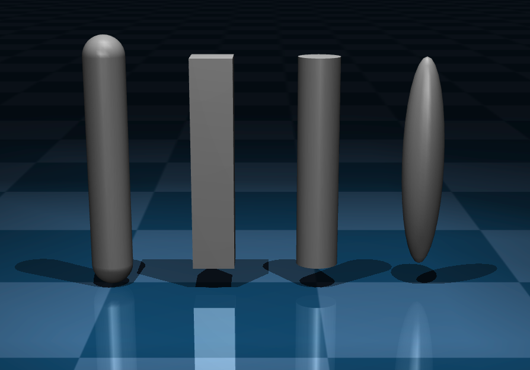
This attribute can only be used with capsule, box, cylinder and ellipsoid geoms. It provides an alternative specification of the geom length as well as the frame position and orientation. The six numbers are the 3D coordinates of one point followed by the 3D coordinates of another point. The elongated part of the geom connects these two points, with the +Z axis of the geom’s frame oriented from the first towards the second point, while in the perpendicular direction, the geom sizes are both equal to the first value of the size attribute. The frame orientation is obtained with the same procedure as the zaxis attribute described in Frame orientations. The frame position is in the middle between the end points. If this attribute is specified, the remaining position and orientation-related attributes are ignored. The image on the right demonstrates use of fromto with the four supported geoms, using identical Z values. The model is here. Note that the fromto semantics of capsule are unique: the two end points specify the segment around which the radius defines the capsule surface.
{kind=link}
- pos: real(3), “0 0 0”
Position of the geom, specified in the frame of the body where the geom is defined.
- quat, axisangle, xyaxes, zaxis, euler
Orientation of the geom frame. See Frame orientations.
- hfield: string, optional
This attribute must be specified if and only if the geom type is “hfield”. It references the height field asset to be instantiated at the position and orientation of the geom frame.
- mesh: string, optional
If the geom type is “mesh”, this attribute is required. It references the mesh asset to be instantiated. This attribute can also be specified if the geom type corresponds to a geometric primitive, namely one of “sphere”, “capsule”, “cylinder”, “ellipsoid”, “box”. In that case the primitive is automatically fitted to the mesh asset referenced here. The fitting procedure uses either the equivalent inertia box or the axis-aligned bounding box of the mesh, as determined by the attribute fitaabb of compiler. The resulting size of the fitted geom is usually what one would expect, but if not, it can be further adjusted with the fitscale attribute below. In the compiled mjModel the geom is represented as a regular geom of the specified primitive type, and there is no reference to the mesh used for fitting.
- fitscale: real, “1”
This attribute is used only when a primitive geometric type is being fitted to a mesh asset. The scale specified here is relative to the output of the automated fitting procedure. The default value of 1 leaves the result unchanged, a value of 2 makes all sizes of the fitted geom two times larger.
- fluidshape: [none, ellipsoid], “none”
“ellipsoid” activates the geom-level fluid interaction model based on an ellipsoidal approximation of the geom shape. When active, the model based on body inertia sizes is disabled for the body in which the geom is defined. See section on ellipsoid-based fluid interaction model for details.
- fluidcoef: real(5), “0.5 0.25 1.5 1.0 1.0”
Dimensionless coefficients of fluid interaction model, as follows. See section on ellipsoid-based fluid interaction model for details.
Index |
Description |
Symbol |
Default |
|---|---|---|---|
0 |
Blunt drag coefficient |
\(C_{D, \text{blunt}}\) |
0.5 |
1 |
Slender drag coefficient |
\(C_{D, \text{slender}}\) |
0.25 |
2 |
Angular drag coefficient |
\(C_{D, \text{angular}}\) |
1.5 |
3 |
Kutta lift coefficient |
\(C_K\) |
1.0 |
4 |
Magnus lift coefficient |
\(C_M\) |
1.0 |
- user: real(nuser_geom), “0 0 …”
See User parameters.
geom/plugin #
Associate this geom with an engine plugin. Either plugin or instance are required.
- plugin: string, optional
Plugin identifier, used for implicit plugin instantiation.
- instance: string, optional
Instance name, used for explicit plugin instantiation.
body/site#
This element creates a site, which is a simplified and restricted kind of geom. A small subset of the geom attributes are available here; see the geom element for their detailed documentation. Semantically sites represent locations of interest relative to the body frames. Sites do not participate in collisions and computation of body masses and inertias. The geometric shapes that can be used to render sites are limited to a subset of the available geom types. However sites can be used in some places where geoms are not allowed: mounting sensors, specifying via-points of spatial tendons, constructing slider-crank transmissions for actuators.
- name: string, optional
Name of the site.
- class: string, optional
Defaults class for setting unspecified attributes.
- type: [sphere, capsule, ellipsoid, cylinder, box], “sphere”
Type of geometric shape. This is used for rendering, and also determines the active sensor zone for touch sensors.
- group: int, “0”
Integer group to which the site belongs. This attribute can be used for custom tags. It is also used by the visualizer to enable and disable the rendering of entire groups of sites.
- material: string, optional
Material used to specify the visual properties of the site.
- rgba: real(4), “0.5 0.5 0.5 1”
Color and transparency. If this value is different from the internal default, it overrides the corresponding material properties.
- size: real(3), “0.005 0.005 0.005”
Sizes of the geometric shape representing the site.
- fromto: real(6), optional
This attribute can only be used with capsule, cylinder, ellipsoid and box sites. It provides an alternative specification of the site length as well as the frame position and orientation. The six numbers are the 3D coordinates of one point followed by the 3D coordinates of another point. The elongated part of the site connects these two points, with the +Z axis of the site’s frame oriented from the first towards the second point. The frame orientation is obtained with the same procedure as the zaxis attribute described in Frame orientations. The frame position is in the middle between the two points. If this attribute is specified, the remaining position and orientation-related attributes are ignored.
- pos: real(3), “0 0 0”
Position of the site frame.
- quat, axisangle, xyaxes, zaxis, euler
Orientation of the site frame. See Frame orientations.
- user: real(nuser_site), “0 0 …”
See User parameters.
body/camera#
This element creates a camera, which moves with the body where it is defined. To create a fixed camera, define it in the world body. The cameras created here are in addition to the default free camera which is always defined and is adjusted via the visual element. Internally MuJoCo uses a flexible camera model, where the viewpoint and projection surface are adjusted independently so as to obtain oblique projections needed for virtual environments. This functionality however is not accessible through MJCF. Instead, the cameras created with this element (as well as the free camera) have a viewpoint that is always centered in front of the projection surface. The viewpoint coincides with the center of the camera frame. The camera is looking along the -Z axis of its frame. The +X axis points to the right, and the +Y axis points up. Thus the frame position and orientation are the key adjustments that need to be made here.
- name: string, optional
Name of the camera.
- class: string, optional
Defaults class for setting unspecified attributes.
- mode: [fixed, track, trackcom, targetbody, targetbodycom], “fixed”
This attribute specifies how the camera position and orientation in world coordinates are computed in forward kinematics (which in turn determine what the camera sees). “fixed” means that the position and orientation specified below are fixed relative to the body where the camera is defined. “track” means that the camera position is at a constant offset from the body in world coordinates, while the camera orientation is constant in world coordinates. These constants are determined by applying forward kinematics in qpos0 and treating the camera as fixed. Tracking can be used for example to position a camera above a body, point it down so it sees the body, and have it always remain above the body no matter how the body translates and rotates. “trackcom” is similar to “track” but the constant spatial offset is defined relative to the center of mass of the kinematic subtree starting at the body in which the camera is defined. This can be used to keep an entire mechanism in view. Note that the subtree center of mass for the world body is the center of mass of the entire model. So if a camera is defined in the world body in mode “trackcom”, it will track the entire model. “targetbody” means that the camera position is fixed in the body frame, while the camera orientation is adjusted so that it always points towards the targeted body (which is specified with the target attribute below). This can be used for example to model an eye that fixates a moving object; the object will be the target, and the camera/eye will be defined in the body corresponding to the head. “targetbodycom” is the same as “targetbody” but the camera is oriented towards the center of mass of the subtree starting at the target body.
- target: string, optional
When the camera mode is “targetbody” or “targetbodycom”, this attribute becomes required. It specifies which body should be targeted by the camera. In all other modes this attribute is ignored.
- projection: [perspective, orthographic], “perspective”
Whether the camera uses a perspective (the default) or orthographic projection. Setting this attribute to “orthographic” changes the semantic of the fovy attribute, see below.
- fovy: real, “45”
Vertical field-of-view of the camera. If the camera uses a perspective projection, the field-of-view is expressed in degrees, regardless of the global compiler/angle setting. If the camera uses an orthographic projection, the field-of-view is expressed in units of length; note that in this case the default of 45 is too large for most scenes and should likely be reduced. In either case, the horizontal field of view is computed automatically given the window size and the vertical field of view.
- resolution: int(2), “1 1”
Resolution of the camera in pixels [width height]. Note that these values are not used for rendering since those dimensions are determined by the size of the rendering context. This attribute serves as a convenient location to save the required resolution. Setting either value larger than 1 enables frustum visualization when the mjVIS_CAMERA visualization flag is active.
- output: [rgb, depth, distance, normal, segmentation], “rgb”
Types of output images supported by the camera.
rgb: RGB image.
depth: Depth image (distance from camera plane).
distance: Distance image (distance from camera origin).
normal: Surface normal image.
segmentation: Segmentation image.
This attribute is not used for rendering, but serves as a convenient location to save the output types supported by the camera. The output attribute can contain multiple types, e.g. “rgb normal”.
- sensorsize: real(2), “0 0”
Size of the camera sensor in length units. When specified, all intrinsic attributes become active and fovy is ignored. The field-of-view is then computed automatically from the focal length and sensor size.
- focal / focalpixel: real(2), “0 0”
Focal length in physical length units or in pixels, respectively. If both are specified, the pixel value is used and the length value is ignored.
- principal / principalpixel: real(2), “0 0”
Offset of the principal point (optical axis intersection with the image plane) from the image center. If both are specified, the pixel value is used. At zero offset, the rendered image is centered on the camera’s negative Z axis, as in a standard pinhole camera model.
- ipd: real, “0.068”
Inter-pupilary distance. This attribute only has an effect during stereoscopic rendering. It specifies the distance between the left and right viewpoints. Each viewpoint is shifted by +/- half of the distance specified here, along the X axis of the camera frame.
- pos: real(3), “0 0 0”
Position of the camera frame.
- quat, axisangle, xyaxes, zaxis, euler
Orientation of the camera frame. See Frame orientations. Note that specifically for cameras, the xyaxes attribute is semantically convenient as the X and Y axes correspond to the directions “right” and “up” in pixel space, respectively.
- user: real(nuser_cam), “0 0 …”
See User parameters.
body/light#
This element creates a light, which moves with the body where it is defined. To create a fixed light, define it in the world body. The lights created here are in addition to the headlight which is always defined and is configured via the visual element. Lights shine along the direction specified by the dir attribute. They do not have a full spatial frame with three orthogonal axes.
By default, MuJoCo uses the standard OpenGL (fixed functional) Phong lighting model for its rendering, with augmented with shadow mapping. (See the OpenGL documentation for more information, including details about various attributes.)
MJCF also supports alternative lighting models (e.g. physically-based rendering) by providing additional attributes. Attributes may be applied or ignored depending on the lighting model being used.
- name: string, optional
Name of the light.
- class: string, optional
Defaults class for setting unspecified attributes.
- mode: [fixed, track, trackcom, targetbody, targetbodycom], “fixed”
This is identical to the mode attribute of camera above. It specifies the how the light position and orientation in world coordinates are computed in forward kinematics (which in turn determine what the light illuminates).
- target: string, optional
This is identical to the target attribute of camera above. It specifies which body should be targeted in “targetbody” and “targetbodycom” modes.
- type: [spot, directional, point, image], “spot”
Determines the type of light. Note that some light types may not be supported by some renderers (e.g. only spot and directional lights are supported by the default native renderer).
- directional: [false, true], “false”
This is a deprecated legacy attribute. Please use light type instead. If set to “true”, and no type is specified, this will change the light type to be directional.
- castshadow: [false, true], “true”
If this attribute is “true” the light will cast shadows. More precisely, the geoms illuminated by the light will cast shadows, however this is a property of lights rather than geoms. Since each shadow-casting light causes one extra rendering pass through all geoms, this attribute should be used with caution. Higher quality of the shadows is achieved by increasing the value of the shadowsize attribute of quality, as well as positioning spotlights closer to the surface on which shadows appear, and limiting the volume in which shadows are cast. For spotlights this volume is a cone, whose angle is the cutoff attribute below multiplied by the shadowscale attribute of map. For directional lights this volume is a box, whose half-sizes in the directions orthogonal to the light are the model extent multiplied by the shadowclip attribute of map. The model extent is computed by the compiler but can also be overridden by specifying the extent attribute of statistic. Internally the shadow-mapping mechanism renders the scene from the light viewpoint (as if it were a camera) into a depth texture, and then renders again from the camera viewpoint, using the depth texture to create shadows. The internal rendering pass uses the same near and far clipping planes as regular rendering, i.e., these clipping planes bound the cone or box shadow volume in the light direction. As a result, some shadows (especially those very close to the light) may be clipped.
- active: [false, true], “true”
The light is active if this attribute is “true”. This can be used at runtime to turn lights on and off.
- pos: real(3), “0 0 0”
Position of the light. This attribute only affects the rendering for spotlights, but it should also be defined for directional lights because we render the cameras as decorative elements.
- dir: real(3), “0 0 -1”
Direction of the light.
- diffuse: real(3), “0.7 0.7 0.7”
The color of the light. For the Phong (default) lighting model, this defines the diffuse color of the light.
- texture: string, optional
The texture to use for image-based lighting. This is unused by the default Phong lighting model.
- intensity: real, “0.0”
The intensity of the light source, measured in candela, used for physically-based lighting models. This is unused by the default Phong lighting model.
- ambient: real(3), “0 0 0”
The ambient color of the light, used by the default Phong lighting model.
- specular: real(3), “0.3 0.3 0.3”
The specular color of the light, used by the default Phong lighting model.
- range: real, “10.0”
The effective range of the light. Objects further than this distance from the light position will not be illuminated by this light. This only applies to spotlights.
- bulbradius: real, “0.02”
The radius of the light source which can affect shadow softness depending on the renderer. This only applies to spotlights.
- attenuation: real(3), “1 0 0”
These are the constant, linear and quadratic attenuation coefficients for Phong lighting. The default corresponds to no attenuation.
- cutoff: real, “45”
Cutoff angle for spotlights, always in degrees regardless of the global angle setting.
- exponent: real, “10”
Exponent for spotlights. This setting controls the softness of the spotlight cutoff.
body/composite#
This is not a model element, but rather a macro which expands into multiple model elements representing a composite object. These elements are bodies (with their own joints and geoms) that become children of the parent body containing the macro. The macro expansion is done by the model compiler. If the resulting model is then saved, the macro will be replaced with the actual model elements. The defaults mechanism used in the rest of MJCF does not apply here, even if the parent body has a childclass attribute defined. Instead there are internal defaults adjusted automatically for each composite object type. See Composite objects in the modeling guide for more detailed explanation. Note that several legacy composite types have been replaced by replicate (for repeated objects) and flexcomp (for soft objects). Therefore, the only supported composite type is now cable, which produces an inextensible chain of bodies connected with ball joints.
- prefix: string, optional
All automatically generated model elements have names indicating the element type and index. For example, the body at coordinates (2, 0) in a 2D grid is named “B2_0” by default. If prefix=”C” is specified, the same body is named “CB2_0”. The prefix is needed when multiple composite objects are used in the same model, to avoid name conflicts.
- type: [cable], required
This attribute determines the type of composite object. The only supported type is cable.
The cable type creates a 1D chain of bodies connected with ball joints, each having a geom with user-defined type (cylinder, capsule or box). The geometry can either be defined with an array of 3D vertex coordinates vertex or with prescribed functions with the option curve. Only linear and trigonometric functions are supported. For example, an helix can be obtained with curve=”cos(s) sin(s) s”. The size is set with the option size, resulting in \(f(s)=\{\text{size}[1]\cdot\cos(2\pi\cdot\text{size}[2]),\; \text{size}[1]\cdot\sin(2\pi\cdot\text{size}[2]),\; \text{size}[0]\cdot s\}\).
- count: int(3), required
The element count in each dimension of the grid. This can have 1, 2 or 3 numbers, specifying the element count along the X, Y and Z axis of the parent body frame within. Any missing numbers default to 1. If any of these numbers is 1, all subsequent numbers must also be 1, so that the leading dimensions of the grid are used. This means for example that a 1D grid will always extend along the X axis. To achieve a different orientation, rotate the frame of the parent body. Note that some types imply a grid of certain dimensionality, so the requirements for this attribute depend on the specified type.
- offset: real(3), “0 0 0”
It specifies a 3D offset from the center of the parent body to the center of the first body of the cable. The offset is expressed in the local coordinate frame of the parent body.
- quat: real(4), “1 0 0 0”
It specifies a quaternion that rotates the first body frame. The quaternion is expressed in the parent body frame.
- vertex: real(3*nvert), optional
Vertex 3D positions in global coordinates.
- initial: [free, ball, none], “0”
Behavior of the first point. Free: free joint. Ball: ball joint. None: no dof.
- curve: string(3), optional
Functions specifying the vertex positions. Available functions are
s,cos(s), andsin(s), wheresis the arc length parameter.
- size: int(3), optional
Scaling of the curve functions.
size[0]is the scaling ofs,size[1]is the radius ofcos(s)andsin(s), andsize[2]is the speed of the argument (i.e.cos(2*pi*size[2]*s)).
composite/joint#
Depending on the composite type, some joints are created automatically (e.g. the universal joints in rope) while other joints are optional (e.g. the stretch and twist joints in rope). This sub-element is used to specify which optional joints should be created, as well as to adjust the attributes of both automatic and optional joints.
- kind: [main], required
The joint kind here is orthogonal to the joint type in the rest of MJCF. The joint kind refers to the function of the joint within the mechanism comprising the composite body, while the joint type (hinge or slide) is implied by the joint kind and composite body type.
The main kind corresponds to the main joints forming each composite type. These joints are automatically included in the model even if the joint sub-element is missing. The main joints are 3D sliders for particle and grid; 1D sliders for box, cylinder and rope; universal joints for cloth, rope and loop. Even though the main joints are included automatically, this sub-element is still useful for adjusting their attributes.
- solreffix, solimpfix
These are the solref and solimp attributes used to equality-constrain the joint. Whether or not a given joint is quality-constrained depends on the joint kind and composite object type as explained above. For joints that are not equality-constrained, this attribute has no effect. The defaults are adjusted depending on the composite type. Otherwise these attributes obey the same rules as all other solref and solimp attributes in MJCF. See Solver parameters.
- axis, group, stiffness, damping, armature, limited, range, margin, solreflimit, solimplimit, frictionloss, solreffriction, solimpfriction, type
Same meaning as regular joint attributes.
composite/geom #
This sub-element adjusts the attributes of the geoms in the composite object. The default attributes are the same as in the rest of MJCF (except that user-defined defaults have no effect here). Note that the geom sub-element can appear only once, unlike joint and tendon sub-elements which can appear multiple times. This is because different kinds of joints and tendons have different sets of attributes, while all geoms in the composite object are identical.
- type, contype, conaffinity, condim, group, priority, size, material, rgba, friction, mass, density, solmix, solref, solimp, margin, gap
Same meaning as regular geom attributes.
composite/site #
This sub-element adjusts the attributes of the sites in the composite object. Otherwise it is the same as geom above.
- group, size, material, rgba
Same meaning as regular site attributes.
composite/skin #
If this element is included, the model compiler will generate a skinned mesh asset and attach it to the element bodies of the composite object. Skin can be attached to 2D grid, cloth, box, cylinder and ellipsoid. For other composite types it has no effect. Note that the skin created here is equivalent to a skin specified directly in the XML, as opposed to a skin loaded from file. So if the model is saved as XML, it will contain a large section describing the automatically-generated skin.
- texcoord: [false, true], “false”
If this is true, explicit texture coordinates will be generated, mapping the skin to the unit square in texture space. This is needed when the material specifies a texture. If texcoord is false and the skin has texture, the texture will appear fixed to the world instead of the skin. The reason for having this attribute in the first place is because skins with texture coordinates upload these coordinates to the GPU even if no texture is applied later. So this attribute should be set to false in cases where no texture will be applied via the material attribute.
- material, rgba, group:
Same meaning as in geom.
- inflate: real, “0”
The default value of 0 means that the automatically-generated skin passes through the centers of the body elements comprising the composite object. Positive values offset each skin vertex by the specified amount, in the direction normal to the (non-inflated) skin at that vertex. This has two uses. First, in 2D objects, a small positive inflate factor is needed to avoid aliasing artifacts. Second, collisions are done with geoms that create some thickness, even for 2D objects. Inflating the skin with a value equal to the geom size will render the skin as a “mattress” that better represents the actual collision geometry. The value of this attribute is copied into the corresponding attribute of the skin asset being created.
- subgrid: int, “0”
This is only applicable to cloth and 2D grid types, and has no effect for any other composite type. The default value of 0 means that the skin has as many vertices as the number of element bodies. A positive value causes subdivision, with the specified number of (additional) grid lines. In this case the model compiler generates a denser skin using bi-cubic interpolation. This increases the quality of the rendering (especially in the absence of textures) but also slows down the renderer, so use it with caution. Values above 3 are unlikely to be needed.
composite/plugin #
Associate this composite with an engine plugin. Either plugin or instance are required.
- plugin: string, optional
Plugin identifier, used for implicit plugin instantiation.
- instance: string, optional
Instance name, used for explicit plugin instantiation.
body/flexcomp#
Similar to composite, this element is not a model element, but rather a macro which expands into multiple model elements representing a deformable entity. In particular this macro creates one flex element, a number of bodies that are children of the body in which the flexcomp is defined, and optionally one flex equality which constrains all flex edges to their initial length. A number of attributes are specified here and then passed through to the automatically-constructed flex. The primary role of flexcomp is to automate the creation of a (possibly large) collection of moving bodies with corresponding joints, and connect them with stretchable flex elements. See flex and deformable objects documentation for specifics on how flexes work. Here we only describe the automated construction process.
An important distinction between flex and flexcomp is that the flex references bodies and specifies vertex coordinates in the frames of those bodies, while the flexcomp defines points. Each flexcomp point corresponds to one body and one vertex in the underlying flex. If the flexcomp point is pinned, the corresponding flex body is the parent body of the flexcomp, while the corresponding flex vertex coordinates equal the flexcomp point coordinates. If the flexcomp point is not pinned, a new child body is created at the coordinates of the flexcomp point (within the flexcomp parent body), and then the coordinates of the flex vertex within that new body are (0,0,0). The mechanism for pinning flexcomp points is explained below.
While composite objects need bodies with geoms for collisions and sites for connecting tendons, flexes generate their own collisions and shape-preserving forces. Thus the bodies created here are much simpler: no geoms, sites or tendons are needed. Most of the bodies created here have 3 orthogonal slider joints, corresponding to freely moving point masses. In some cases we generate radial slider joints, allowing only expansion and contraction. Since no geoms are generated, the bodies need to have explicit inertial parameters.
Below is a simple example of a flexcomp, modeling a (somewhat flexible) double pendulum with one end pinned to the world:
<mujoco>
<worldbody>
<flexcomp name="FL" type="grid" dim="1" count="3 1 1" mass="3" spacing="0.2 0.2 0.2">
<pin id="0"/>
</flexcomp>
</worldbody>
</mujoco>
This flexcomp has 3 points, however the first point is pinned to the world (i.e. the parent of the flexcomp) and so only two bodies are automatically created, namely FL_1 and FL_2. Here is what this flexcomp generates after loading and saving the XML:
<mujoco>
<worldbody>
<body name="FL_1">
<inertial pos="0 0 0" mass="1" diaginertia="1.66667e-05 1.66667e-05 1.66667e-05"/>
<joint pos="0 0 0" axis="1 0 0" type="slide"/>
<joint pos="0 0 0" axis="0 1 0" type="slide"/>
<joint pos="0 0 0" axis="0 0 1" type="slide"/>
</body>
<body name="FL_2" pos="0.2 0 0">
<inertial pos="0 0 0" mass="1" diaginertia="1.66667e-05 1.66667e-05 1.66667e-05"/>
<joint pos="0 0 0" axis="1 0 0" type="slide"/>
<joint pos="0 0 0" axis="0 1 0" type="slide"/>
<joint pos="0 0 0" axis="0 0 1" type="slide"/>
</body>
</worldbody>
<deformable>
<flex name="FL" dim="1" body="world FL_1 FL_2" vertex="-0.2 0 0 0 0 0 0 0 0" element="0 1 1 2"/>
</deformable>
<equality>
<flex flex="FL"/>
</equality>
</mujoco>
- name: string, required
The name of the flex element being generated automatically. This name is used as a prefix for all bodies that are automatically generated here, and is also referenced by the corresponding flex equality constraint (if applicable).
- dim: int(1), “2”
Dimensionality of the flex object. This value must be 1, 2 or 3. The flex elements are capsules in 1D, triangles with radius in 2D, and tetrahedra with radius in 3D. Certain flexcomp types imply a dimensionality, in which case the value specified here is ignored.
- dof: [full, radial, trilinear, quadratic, 2d], “full”
The parametrization of the flex’s degrees of freedom (dofs). See the video on the right illustrating the different parametrizations with deformable spheres. The three models in the video are respectively sphere_full, sphere_radial and sphere_trilinear.
- full
Three translational dofs per vertex. This is the most expressive but also the most expensive option.
- radial
A single radial translational dof per vertex. Note that unlike in the “full” case, the radial parametrization requires a free joint at the flex’s parent in order for free body motion to be possible. This type of parametrization is appropriate for shapes that are relatively spherical.
- 2d
Two orthogonal translational dofs (X and Y) per vertex. This restricts the motion of the vertices to planes parallel to the parent body’s X-Y plane.
- trilinear
Three translational dofs at each corner of the bounding box of the flex, for a total of 24 dofs for the entire flex, independent of the number of vertices. The positions of the vertices are updated using trilinear interpolation over the bounding box.
Trilinear and quadratic flexes are much faster than the previous two options, and are the preferred choice if the expected deformations can be captured by the reduced parametriation. For example, see the video on the right comparing full and trilinear flexes for modeling deformable gripper pads.
Note that the choice of dof parametrization affects the deformation modes of the flex but has no effect on the accuracy of the collision geometry, which always takes into account the high-resolution mesh of the flex.
- quadratic
Three translational dofs per corner, edge, face, and volume of the bounding box of the flex, for a total of 81 dofs for the entire flex, independent of the number of vertices. The positions of the vertices are updated using quadratic interpolation over the bounding box. While this option requires more degrees of freedom than trilinear flexes, it enables curved deformation modes, while the only modes achievable for trilinear flexes are strech/compression and shear. To understand the difference between the two parametrizations, see a trilinear cube and a quadratic cube.
Note that a higher interpolation order generally requires a smaller time step for stability, although usually not as large as with the “full” option and a fine mesh.
- type: [grid, box, cylinder, ellipsoid, disc, circle, mesh, gmsh, direct], “grid”
This attribute determines the type of flexcomp object. The remaining attributes and sub-elements are then interpreted according to the type. Default settings are also adjusted depending on the type. Different types correspond to different methods for specifying the flexcomp points and the stretchable elements that connect them. They fall in three categories: direct specification entered in the XML, direct specification loaded from file, and automated generation from higher-level specification.
grid generates a rectangular grid of points in 1D, 2D or 3D as specified by dim. The number of points in each dimension is determined by count while the grid spacing in each dimension is determined by spacing. Make sure the spacing is sufficiently large relative to radius to avoid permanent contacts. In 2D and 3D the grid is automatically triangulated, and corresponding flex elements are created (triangles or tetrahedra). In 1D the elements are capsules connecting consecutive pairs of points.
box generates a 3D box object, however flex bodies are only generated on the outer shell. Each flex body has a radial slider joint allowing it to move in and out from the center of the box. The parent body would normally be a floating body. The box surface is triangulated, and each flex element is a tetrahedron connecting the center of the box with one triangle face. count and spacing determine the count and spacing of the flex bodies, similar to the grid type in 3D. Note that the resulting flex has the same topology as the box generated by composite.
cylinder is the same as box, except the points are projected on the surface of a cylinder.
ellipsoid is the same as box, except the points are projected on the surface of an ellipsoid.
disc is the same as box, except the points are projected on the surface of a disc. It is only compatible with dim=2.
circle is the same as grid, except the points are sampled along a circle so that the first and last points are the same. The radius of the circle is computed such that each segment has the requested spacing. It is only compatible with dim=1.
mesh loads the flexcomp points and elements (i.e. triangles) from a mesh file, in the same file formats as mesh assets, excluding the legacy .msh format. A mesh asset is not actually added to the model. Instead the vertex and face data from the mesh file are used to populate the point and element data of the flexcomp. dim is automatically set to 2. Recall that a mesh asset in MuJoCo can be used as a rigid geom attached to a single body. In contrast, the flex generated here corresponds to a soft mesh with the same initial shape, where each vertex is a separate moving body (unless pinned).
gmsh is similar to mesh, but it loads a GMSH file in format 4.1 and format 2.2 (ascii or binary). The file extension can be anything; the parser recognizes the format by examining the file header. This is a very rich file format, allowing all kinds of elements with different dimensionality and topology. MuJoCo only supports GMSH element types 1, 2, 4 which happen to correspond to our 1D, 2D and 3D flexes and assumes that the nodes are specified in a single block. Only the Nodes and Elements sections of the GMHS file are processed, and used to populate the point and element data of the flexcomp. The parser will generate an error if the GMSH file contains meshes that are not supported by MuJoCo. dim is automatically set to the dimensionality specified in the GMSH file. Presently this is the only mechanism to load a large tetrahedral mesh in MuJoCo and generate a corresponding soft entity. If such a mesh is available in a different file format, use the freely available GMSH software to convert it to GMSH in one of the supported versions.
direct allows the user to specify the point and element data of the flexcomp directly in the XML. Note that flexcomp will still generate moving bodies automatically, as well as automate other settings; so it still provides convenience compared to specifying the corresponding flex directly.
- count: int(3), “10 10 10”
Specifies the number of automatically generated points in each dimension for types grid, box, cylinder, and ellipsoid.
- cellcount: int(3), “1 1 1”
Specifies the number of cells in each dimension for the background interpolation grid when using trilinear or quadratic dofs.
- spacing: real(3), “0.02 0.02 0.02”
The spacing between the automatically generated points in each dimension. The spacing should be sufficiently large compared to the radius, to avoid permanent contacts.
- point: real(3*npoint), optional
The 3D coordinates of the points. This attribute is only used with type direct. All other flexcomp types generate their own points. The points are used to construct bodies and vertices as explained earlier.
- element: int((dim+1)*npoint), optional
The zero-based point ids forming each flex elements. This attribute is only used with type direct. All other flexcomp types generate their own elements. This data is passed through to the automatically-generated flex.
- texcoord: real(2*npoint), optional
Texture coordinates of each point, passed through to the automatically-generated flex. Note that flexcomp does not generate texture coordinates automatically, except for 2D grids, box, cylinder and ellipsoid. For all other types, the user can specify explicit texture coordinates here, even if the points themselves were generated automatically. This requires understanding of the layout of the automatically-generated points and how they correspond to the texture referenced by the material.
- mass: real(1), “1”
The mass of each automatically-generated body equals this value divided by the number of points. Note that pinning some points does not affect the mass of the other bodies.
- inertiabox: real(1), “0.005”
Even though the automatically-generated bodies have the physics of point masses, with slider joints, MuJoCo still requires each body to have rotational inertia. The inertias generated here are diagonal, and are computed such that the corresponding equivalent-inertia boxes have sides equal to this value.
- file: string, optional
The name of the file from which a surface (triangular) or volumetric (tetrahedral) mesh is loaded. For surface meshes, the file extension is used to determine the file format. Supported formats are GMSH and the formats specified in mesh assets, excluding the legacy .msh format. Volumetric meshes are supported only in GMSH format. See here for more information on GMSH files.
- rigid: [true, false], “false”
If this is true, all points correspond to vertices within the parent body, and no new bodies are created. This is equivalent to pinning all points. Note that if all points are indeed pinned, the model compiler will detect that the flex is rigid (which behaves is a non-convex mesh in collision detection).
- pos: real(3), “0 0 0”
This 3D vector translates all points relative to the frame of the parent body.
- quat: real(4), “1 0 0 0”
This is a quaternion rotation of all points around the pos vector specified above. Together these two vectors define a pose transformation, used to position and orient the points as needed.
- axisangle, xyaxes, zaxis, euler
Alternative specification of rotation, that can be used instead of quat.
- scale: real(3), “1 1 1”
Scaling of all point coordinates, for types that specify coordinates explicitly. Scaling is applied after the pose transformation.
- radius, material, rgba, group, flatskin
These attributes are directly passed through to the automatically-generated flex object and have the same meaning.
- origin: real(3), “0 0 0”
The origin of the flexcomp. Used for generating a volumetric mesh from an OBJ surface mesh. Each surface triangle is connected to the origin to create a tetrahedron, so the resulting volumetric mesh is guaranteed to be well-formed only for convex shapes.
flexcomp/contact#
- internal, selfcollide, activelayers, contype, conaffinity, condim, priority, friction, solmix, solimp, margin, gap
Same as in flex/contact. All attributes are passed through to the automatically-generated flex.
flexcomp/edge#
Each flex element has one edge in 1D (coinciding with the capsule element), three edges in 2D, and six edges in 3D. The edges are generated automatically when the flex element is compiled, and the user cannot specify them directly. This element is used to adjust the properties of all edges in the flex.
- equality: [false, true, vert, strain], “false”
The type of equality constraint applied to this edge. If false, no equality constraint is applied. If true, then edge constraints are enforced. If vert, an averaged constraint is used, see flexvert. if strain, then a constraint is added to enforce that the invariants of the strain tensor do not change; this is only equality constraint type supported for trilinear and quadratic dofs elements and here.
- solref, solimp
The standard constraint parameters, passed through to the automatically generated equality constraint.
- stiffness, damping
Edge stiffness and damping, passed through to the automatically generated flex.
flexcomp/elasticity#
- young, poisson, damping, thickness, elastic2d
Same as in flex/elasticity. All attributes are passed through to the automatically-generated flex.
flexcomp/pin#
Each point is either pinned or not pinned. The effect of pinning was explained earlier. This element is used to specify which points are pinned. Note that each attribute below can be used to specify multiple pins, and in addition to that, the pin element itself can be repeated for user convenience. The effects are cumulative; pinning the same point multiple times is allowed.
- id: int(n), required
Zero-based ids of points to pin. When the points are automatically-generated, the user needs to understand their layout in order to decide which points to pin. This can be done by first creating a flexcomp without any pins, loading it in the simulator, and showing the body labels.
- range: int(2*n), required
Ranges of points to pin. Each range is specified by two integers.
- grid: int(dim*n), required
Grid coordinates of points to pin. This can only be used with type grid.
- gridrange: int(2*dim*n), required
Ranges of grid coordinates of points to pin. Each range is specified by (dim) integers for the minimum of the range followed by (dim) integers for the maximum of the range. This can only be used with type grid.
flexcomp/plugin #
Associate this flexcomp with an engine plugin. Either plugin or instance are required.
- plugin: string, optional
Plugin identifier, used for implicit plugin instantiation.
- instance: string, optional
Instance name, used for explicit plugin instantiation.
body/plugin #
Associate this body with an engine plugin. Either plugin or instance are required.
- plugin: string, optional
Plugin identifier, used for implicit plugin instantiation.
- instance: string, optional
Instance name, used for explicit plugin instantiation.
body/attach#
The attach element is used to insert a sub-tree of bodies from another model into this model’s kinematic tree. Unlike include, which is implemented in the parser and is equivalent to copying and pasting XML from one file into another, attach is implemented in the model compiler. In order to use this element, the sub-model must first be defined as an asset. When creating an attachment, the top body of the attached subtree is specified, and all referencing elements outside the kinematic tree (e.g., sensors and actuators), are also copied into the top-level model. Additionally, any elements referenced from within the attached subtree (e.g. defaults and assets) will be copied in to the top-level model. attach is a Meta elements, so upon saving all attachments will appear in the saved XML file. Note that this element is a subset of the functionality of the procedural attachment functionality. As such, it shares the same limitations as described there. In addition, when the attach element is used, it is not possible to attach an entire model (i.e. including all elements, referenced or not).
- model: string, required
The sub-model from which to attach a subtree.
- body: string, optional
Name of the body in the sub-model to attach here. The body and its subtree will be attached. If this attribute is not specified, the contents of the world body will be attached in a new frame.
- prefix: string, required
Prefix to prepend to names of elements in the sub-model. This attribute is required to prevent name collisions with the parent or when attaching the same sub-tree multiple times.
body/frame#
Frames specify a coordinate transformation which is applied to all child elements. They disappear during compilation and the transformation they encode is accumulated in their direct children. See frame for examples.
- name: string, optional
Name of the frame.
- childclass: string, optional
If this attribute is present, all descendant elements that admit a defaults class will use the class specified here, unless they specify their own class or another frame or body with a childclass attribute is encountered along the chain of nested bodies and frames. Recall Default settings.
- pos: real(3), “0 0 0”
The 3D position of the frame, in the parent coordinate system.
- quat, axisangle, xyaxes, zaxis, euler
See Frame orientations.
contact#
This is a grouping element and does not have any attributes. It groups elements that are used to adjust the generation of candidate contact pairs for collision checking. Collision detection was described in detail in the Computation chapter, thus the description here is brief.
contact/pair#
This element creates a predefined geom pair which will be checked for collision. Unlike dynamically generated pairs whose properties are inferred from the corresponding geom properties, the pairs created here specify all their properties explicitly or through defaults, and the properties of the individual geoms are not used. Anisotropic friction can only be created with this element.
- name: string, optional
Name of this contact pair.
- class: string, optional
Defaults class for setting unspecified attributes.
- geom1: string, required
The name of the first geom in the pair.
- geom2: string, required
The name of the second geom in the pair. The contact force vector computed by the solver and stored in mjData.efc_force points from the first towards the second geom by convention. The forces applied to the system are of course equal and opposite, so the order of geoms does not affect the physics.
- condim: int, “3”
The dimensionality of the contacts generated by this geom pair.
- friction: real(5), “1 1 0.005 0.0001 0.0001”
The friction coefficients of the contacts generated by this geom pair. Making the first two coefficients different results in anisotropic tangential friction. Making the last two coefficients different results in anisotropic rolling friction. The length of this array is not enforced by the parser, and can be smaller than 5. This is because some of the coefficients may not be used, depending on the contact dimensionality. Unspecified coefficients remain equal to their defaults.
- solref, solimp
Constraint solver parameters for contact simulation. See Solver parameters.
- solreffriction: real, “0 0”
Contact reference acceleration, in the friction dimensions. This attribute has the same semantics as other solref attributes (described in Solver parameters), with two important distictions:
The default “0 0” means “use the same values as solref”.
This attribute only takes effect for elliptic friction cones, since pyramidal cones mix normal and frictional forces.
Note that as with other solreffriction attributes, the constraint violation is identically 0. Therefore, when using positive semantics solreffriction[1] is ignored, while for negative semantics solreffriction[0] is ignored. See Friction for more details.
- margin: real, “0”
Geometric inflation for the purpose of contact force generation. Contacts are detected at distance
margin + gapand forces are generated at distancemargin.
- gap: real, “0”
Additional contact detection buffer beyond
margin. When this value is positive, contacts with distance betweenmarginandmargin + gapare included inmjData.contactas inactive contacts but no contact forces are generated.
contact/exclude#
This element is used to exclude a pair of bodies from collision checking. Unlike all other contact-related elements which refer to geoms, this element refers to bodies. Experience has shown that exclusion is more useful on the level of bodies. Collisions between any geom defined in the first body and any geom defined in the second body are excluded.
- name: string, optional
Name of this exclude pair.
- body1: string, required
The name of the first body in the pair.
- body2: string, required
The name of the second body in the pair.
deformable#
This is a grouping element and does not have any attributes. It groups elements that specify deformable objects, namely flexes and skins.
deformable/flex#
Flexible objects (or flexes) are collections of massless stretchable geometric elements (capsules, triangles or tetrahedra) connecting vertices that are defined within different moving body frames. These stretchable elements support collisions and contact forces, which are then distributed to all the interconnected bodies. Flexes also generate passive and constraint forces as needed to simulate deformable entities with the desired material properties. The modeling of flexes is automated and simplified by the flexcomp element. In most cases, the user will specify a flexcomp which will then automatically construct the corresponding low-level flex. See deformable objects for additional information.
- name: string, optional
Name of the flex.
- dim: int, “2”
Dimensionality of the flex. Allowed values are 1, 2 and 3. In 1D the elements are capsules, in 2D the elements are triangles with radius, in 3D the elements are tetrahedra with (optional) radius.
- radius: real, “0.005”
Radius of all flex elements. It can be zero in 3D, but must be positive in 1D and 2D. The radius affects both collision detection and rendering. In 1D and 2D it is needed to make the elements volumetric.
- body: string(nvert or 1), required
An array of MuJoCo body names (separated by white space) to which each vertex belongs. The number of body names should either equal the number of vertices (nvert), or be a single body. If a single body is specified, all vertices are defined within that body - in which case the flex becomes a rigid body. The latter functionality effectively creates a general non-convex mesh (unlike mesh geoms which are convexified for collision detection purposes).
- vertex: real(3*nvert), optional
The local coordinates of the vertices within the corresponding body frames. If this attribute is omitted, all coordinates are (0,0,0) or in other words, the vertices coincide with the centers of the body frames.
- texcoord: real(2*vert or ntexcoord), optional
Texture coordinates. If omitted, texture mapping for this flex is disabled, even if a texture is specified in the material.
- elemtexcoord: int((dim+1)*nelem), optional
Texture indices for each face. If omitted, texture are assumed to be vertex-based.
- element: int((dim+1)*nelem), required
For each element of the flex, this lists the zero-based indices of the vertices forming that flex element. We need two vertices to specify a capsule, three vertices to specify a triangle, and four vertices to specify a tetrahedron - which is why the number of indices equals (dim+1) times the number of elements. In 2D, the vertices should be listed in counter-clockwise order. In 1D and 3D the order is irrelevant; in 3D the model compiler will rearrange the vertices as needed. Repeated vertex indices within a flex element are not allowed. The topology of the flex is not enforced; it could correspond to a continuous soft body, or a collection of disconnected stretchable elements, or anything in-between.
- flatskin: [true, false], “false”
This attribute determines whether 2D and 3D flexes that are rendered in flexskin mode will use smooth or flat shading. The default smooth shading is suitable in most cases, however if the object is intended to have visible sharp edges (such as a cube) then flat shading is more natural.
- material: string, optional
If specified, this attribute applies a material to the flex. Note that textures specified in the material will be applied only if the flex has explicit texture coordinates.
- rgba: real(4), “0.5 0.5 0.5 1”
Instead of creating material assets and referencing them, this attribute can be used to set color and transparency only. This is not as flexible as the material mechanism, but is more convenient and is often sufficient. If the value of this attribute is different from the internal default, it takes precedence over the material.
- group: int, “0”
Integer group to which the flex belongs. This attribute can be used for custom tags. It is also used by the visualizer to enable and disable the rendering of entire groups of flexes.
- node: string(nnode), optional
The degrees-of-freedom of the flex. An array of MuJoCo body names (separated by white space) to which each node belongs. The number of body names should equal the number of nodes (nnode). See the flexcomp dof attribute for more details.
- cellcount: int(3), optional
When using trilinear or quadratic dofs, this specifies the number of cells in each dimension for the background interpolation grid.
- dof: [trilinear, quadratic], optional
Interpolation order for the flex.
flex/edge #
This element adjusts the passive or constraint properties of all edges of the flex. A flex edge can have a damping
passive force and an equality constraint associated with it, resulting in edge constraint forces.
In the latter case, passive forces are usually unnecessary. For a 1D flex, an edge can also have a passive stiffness,
while Solid or Membrane first-party plugins can be used for the 2D and 3D case, respectively. which would
generally make edge constraints unnecessary. However these are modeling choices left to the user. MuJoCo allows all
these mechanisms to be combined as desired.
- stiffness: real(1), “0”
Stiffness of all edges. Only for 1D flex. For 2D and 3D, plugins must be used.
- damping: real(1), “0”
Damping of all edges.
flex/elasticity #
The elasticity model is a Saint Venant-Kirchhoff model discretized with piecewise linear finite elements, intended to simulate the compression or elongation of hyperelastic materials subjected to large displacements (finite rotations) and small strains, since it uses a nonlinear strain-displacement but a linear stress-strain relationship. See also deformable objects and this model.
- young: real(1), “0”
Young’s elastic modulus, a measure of tensile and compressive stiffness for continuum elastic materials. Units of \(\textrm{pressure}=\textrm{force}/\textrm{area}\).
- poisson: real(1), “0”
Poisson’s ratio, the ratio of transverse deformation to applied longitudinal strain. This unitless quantity is in the range \([0, 0.5)\). Small or large values imply compressibility or incompressiblity, respectively.
- damping: real(1), “0”
Rayleigh’s damping coefficient, units of time. This quantity scales the stiffness defined by Young’s modulus to produce the damping matrix.
- thickness: real(1), “-1”
Shell thickness, units of length; only for used 2D flexes. Used to scale the stretching stiffness. This thickness can be set equal to 2 times the radius in order to match the geometry, but is exposed separately since the radius might be constrained by considerations related to collision detection.
- elastic2d: [none, bend, stretch, both], “none”
Elastic contribution to passive forces of 2D flexes. “none”: none, “bend”: bending only, “stretch”: stretching only, “both”: bending and stretching. Bending is not yet supported by dof trilinear and quadratic.
flex/contact #
This element adjusts the contact properties of the flex. It is mostly identical to geom contact properties, with some extensions specific to flexes.
- internal: [true, false], “false”
Enables or disables internal collisions which prevent flex self-penetration and element inversion. Note that flex elements that have shared vertices cannot collide (or else there will be permanent contacts). In 1D and 2D, internal collision checks rely on predefined vertex-element pairs, where the vertex is treated as a sphere with the same radius as the flex. These spheres correspond to non-shared vertices of neighboring elements on the periphery of the flex. The pre-defined vertex-element pairs are generated by the model compiler automatically. In 3D, internal collision checks are performed within each tetraheron: each vertex is collided with the plane corresponding to the opposing triangle face (again using the flex radius). The resulting contacts are always created with condim 1, gap 0, margin 0. Note that internal contacts modify the behavior implied by the elasticity parameters and is recommended only for flexes where element inversion cannot be prevented.
- selfcollide: [none, narrow, bvh, sap, auto], “auto”
This determines the strategy for midphase collision pruning of element pairs belonging to the same flex. none means flex elements cannot collide with each other. narrow means narrow phase only (i.e. all pairs are checked). This is a diagnostic tool and is never a good idea in practice. bvh and sap refer to bounding volume hierarchies and sweep-and-prune (which are two different strategies for midphase collision pruning). auto selects sap in 1D and 2D, and bvh in 3D. Which strategy performs better depends on the specifics of the model. The automatic setting is just a simple rule which we have found to perform well in general.
- activelayers: int(1), “1”
This only has an effect for 3D flexes. Each tetrahedron is labeled by the model compiler with an integer corresponding to (graph) distance to the outside surface of the flex. Thus outside-facing elements are in layer 0, their neighbors are in layer 1, etc. This attribute specifies how many layers will be allowed to participate in collisions. The default setting 1 means that only one layer (i.e. layer 0) can collide, with itself and with the rest of the world. This is usually sufficient, however if the outer layer is composed of small tetrahedra, another body can “pierce” it and get stuck. In that case the value should be increased.
- contype, conaffinity, condim, priority, friction, solmix, solref, solimp, margin, gap
Same meaning as regular geom attributes.
- passive: [true, false], “false”
When enabled, the contact is not added to the contact solver but it is instead used to compute passive (spring-damper) contact forces. All contacts, regardless of the specified condim, are frictionless (condim 1). This is an experimental feature.
deformable/skin#
These are deformable meshes whose vertex positions and normals are computed each time the model is rendered. MuJoCo skins are only used for visualization and do not affect the physics in any way. In particular, collisions involve the geoms of the bodies to which the skin is attached, and not the skin itself. Unlike regular meshes which are referenced from geoms and participate in collisions, the skin is not referenced from anywhere else in the model. It is a stand-alone element that is used by renderer and not by the simulator.
The skin has vertex positions and normals updated at runtime, and triangle faces and optional texture coordinates which are predefined. It also has “bones” used for updating. Bones are regular MuJoCo bodies referenced with the bone subelement. Each bone has a list of vertex indices and corresponding real-valued weights which specify how much the bone position and orientation influence the corresponding vertex. The vertex has local coordinates with respect to every bone that influences it. The local coordinates are computed by the model compiler, given global vertex coordinates and global bind poses for each body. The bind poses do not have to correspond to the model reference configuration qpos0. Note that the vertex positions and bone bind poses provided in the skin definition are always global, even if the model itself is defined in local coordinates.
At runtime the local coordinates of each vertex with respect to each bone that influences it are converted to global coordinates, and averaged in proportion to the corresponding weights to obtain a single set of 3D coordinates for each vertex. Normals then are computed automatically given the resulting global vertex positions and face information. Finally, the skin can be inflated by applying an offset to each vertex position along its (computed) normal. Skins are one-sided for rendering purposes; this is because back-face culling is needed to avoid shading and aliasing artifacts. When the skin is a closed 3D shape this does not matter because the back sides cannot be seen. But if the skin is a 2D object, we have to specify both sides and offset them slightly to avoid artifacts. Note that the composite objects generate skins automatically. So one can save an XML model with a composite object, and obtain an elaborate example of how a skin is specified in the XML.
Similar to meshes, skins can be specified directly in the XML via attributes documented later, or loaded from a binary SKN file which is in a custom format. The specification of skins is more complex than meshes because of the bone subelements. The file format starts with a header of 4 integers: nvertex, ntexcoord, nface, nbone. The first three are the same as in meshes, and specify the total number of vertices, texture coordinate pairs, and triangle faces in the skin. ntexcoord can be zero or equal to nvertex. nbone specifies the number of MuJoCo bodies that will be used as bones in the skin. The header is followed by the vertex, texcoord and face data, followed by a specification for each bone. The bone specification contains the name of the corresponding model body, 3D bind position, 4D bind quaternion, number of vertices influenced by the bone, and the vertex index array and weight array. Body names are represented as fixed-length character arrays and are expected to be 0-terminated. Characters after the first 0 are ignored. The contents of the SKN file are:
(int32) nvertex
(int32) ntexcoord
(int32) nface
(int32) nbone
(float) vertex_positions[3*nvertex]
(float) vertex_texcoords[2*ntexcoord]
(int32) face_vertex_indices[3*nface]
for each bone:
(char) body_name[40]
(float) bind_position[3]
(float) bind_quaternion[4]
(int32) vertex_count
(int32) vertex_index[vertex_count]
(float) vertex_weight[vertex_count]
Similar to the other custom binary formats used in MuJoCo, the file size in bytes is strictly enforced by the model compiler. The skin file format has subelements so the overall file size formula is difficult to write down, but should be clear from the above specification.
- name: string, optional
Name of the skin.
- file: string, optional
The SKN file from which the skin will be loaded. The path is determined as described in the meshdir attribute of compiler. If the file is omitted, the skin specification must be provided in the XML using the attributes below.
- vertex: real(3*nvert), optional
Vertex 3D positions, in the global bind pose where the skin is defined.
- texcoord: real(2*nvert), optional
Vertex 2D texture coordinates, between 0 and 1. Note that skin and geom texturing are somewhat different. Geoms can use automated texture coordinate generation while skins cannot. This is because skin data are computed directly in global coordinates. So if the material references a texture, one should specify explicit texture coordinates for the skin using this attribute. Otherwise the texture will appear to be stationary in the world while the skin moves around (creating an interesting effect but probably not as intended).
- face: int(3*nface), optional
Triangular skin faces. Each face is a triple of vertex indices, which are integers between zero and nvert-1.
- inflate: real, “0”
If this number is not zero, the position of vertex during updating will be offset along the vertex normal, but the distance specified in this attribute. This is particularly useful for skins representing flexible 2D shapes.
- material: string, optional
If specified, this attribute applies a material to the skin.
- rgba: real(4), “0.5 0.5 0.5 1”
Instead of creating material assets and referencing them, this attribute can be used to set color and transparency only. This is not as flexible as the material mechanism, but is more convenient and is often sufficient. If the value of this attribute is different from the internal default, it takes precedence over the material.
- group: int, “0”
Integer group to which the skin belongs. This attribute can be used for custom tags. It is also used by the visualizer to enable and disable the rendering of entire groups of skins.
skin/bone#
This element defines a bone of the skin. The bone is a regular MuJoCo body which is referenced by name here.
- body: string, required
Name of the body corresponding to this bone.
- bindpos: real(3), required
Global body position corresponding to the bind pose.
- bindquat: real(4), required
Global body orientation corresponding to the bind pose.
- vertid: int(nvert), required
Integer indices of the vertices influenced by this bone. The vertex index corresponds to the order of the vertex in the skin mesh. The number of vertex indices specified here (nvert) must equal the number of vertex weights specified with the next attribute. The same vertex may be influenced by multiple bones, and each vertex must be influenced by at least one bone.
- vertweight: real(nvert), required
Weights for the vertices influenced by this bone, in the same order as the vertex indices. Negative weights are allowed (which is needed for cubic interpolation for example) however the sum of all bone weights for a given vertex must be positive.
equality#
This is a grouping element for equality constraints. It does not have attributes. See the Equality section of the Computation chapter for a detailed description of equality constraints. Several attributes are common to all equality constraint types, thus we document them only once, under the connect element.
equality/connect#
This element creates an equality constraint that connects two bodies at a point. The constraint effectively defines a ball joint outside the kinematic tree. Connect constraints can be specified in one of two ways
Using body1 and anchor (both required) and optionally body2. When using this specification, the constraint is assumed to be satisfied at the configuration in which the model is defined (
mjData.qpos0).site1 and site2 (both required). When using this specification, the two sites will be pulled together by the constraint, regardless of their position in the default configuration. An example of this specification is shown in this model.
- name: string, optional
Name of the equality constraint.
- class: string, optional
Defaults class for setting unspecified attributes.
- active: [false, true], “true”
If this attribute is set to “true”, the constraint is active and the constraint solver will try to enforce it. The field mjModel.eq_active0 corresponds to this value, and is used to initialize mjData.eq_active, which is user-settable at runtime.
- solref, solimp
Constraint solver parameters for equality constraint simulation. See Solver parameters.
- body1: string, optional
Name of the first body participating in the constraint. Either this attribute and anchor must be specified, or site1 and site2 must be specified.
- body2: string, optional
Name of the second body participating in the constraint. If this attribute is omitted, the second body is the world body.
- anchor: real(3), optional
Coordinates of the 3D anchor point where the two bodies are connected, in the local coordinate frame of body1. The constraint is assumed to be satisfied in the configuration at which the model is defined (
mjData.qpos0), which lets the compiler compute the associated anchor point for body2.
- site1: string, optional
Name of a site belonging to the first body participating in the constraint. When specified, site2 must also be specified. The (site1, site2) specification is a more flexible alternative to the body-based specification, and is different in two ways. First, the sites are not required to overlap at the default configuration; if they do not overlap then the sites will “snap together” at the beginning of the simulation. Second, changing the site positions in
mjModel.site_posat runtime will correctly change the position of the constraint (i.e. the content ofmjModel.eq_datahas no effect when this semantic is used).
- site2: string, optional
Name of a site belonging to the second body participating in the constraint. When specified, site1 must also be specified. See the site1 description for more details.
equality/weld#
This element creates a weld equality constraint. It attaches two bodies to each other, removing all relative degrees of freedom between them (softly of course, like all other constraints in MuJoCo). The two bodies are not required to be close to each other. The relative body position and orientation being enforced by the constraint solver is the one in which the model was defined. Note that two bodies can also be welded together rigidly, by defining one body as a child of the other body, without any joint elements in the child body. Weld constraints can be specified in one of two ways:
Using body1 (and optionally anchor, relpose, body2). When using this specification, the constraint is assumed to be satisfied at the configuration in which the model is defined.
site1 and site2 (both required). When using this specification, the frames of the two sites will be aligned by the constraint, regardless of their position in the default configuration. An example of this specification is shown in this model.
- name, class, active, solref, solimp
Same as in connect element.
- body1: string, optional
Name of the first body participating in the constraint. Either this attribute and must be specified or site1 and site2 must be specified.
- body2: string, optional
Name of the second body. If this attribute is omitted, the second body is the world body. Welding a body to the world and changing the corresponding component of mjData.eq_active at runtime can be used to fix the body temporarily.
- relpose: real(7), “0 1 0 0 0 0 0”
This attribute specifies the relative pose (3D position followed by 4D quaternion orientation) of the anchor point relative to body1. The position part (first 3 components) gives the anchor coordinates in the local frame of body1, and the quaternion part (last 4 components) gives the relative orientation of body2 relative to body1. If the quaternion part (i.e., last 4 components of the vector) are all zeros, as in the default setting, this attribute is ignored and the relative pose is the one corresponding to the model reference pose in qpos0. The unusual default is because all equality constraint types share the same default for their numeric parameters.
- anchor: real(3), “0 0 0”
Coordinates of the weld point relative to body2. If relpose is not specified, the meaning of this parameter is the same as for connect constraints, except that is relative to body2. If relpose is specified, body1 will use the pose to compute its anchor point.
- site1: string, optional
Name of a site belonging to the first body participating in the constraint. When specified, site2 must also be specified. The (site1, site2) specification is a more flexible alternative to the body-based specification, and is different in two ways. First, the sites are not required to overlap at the default configuration; if they do not overlap then the sites will “snap together” at the beginning of the simulation. Second, changing the site position and orientation in
mjModel.site_posandmjModel.site_quatat runtime will correctly change the position and orientation of the constraint (i.e. the content ofmjModel.eq_datahas no effect when this semantic is used, with the exception of torquescale).
- site2: string, optional
Name of a site belonging to the second body participating in the constraint. When specified, site1 must also be specified. See the site1 description for more details.
- torquescale: real, “1”
A constant that scales the angular residual (angular constraint violation). Notionally in units of \(\textrm{torque}/\textrm{force}=\textrm{length}\). Intuitively this coefficient defines how much the weld “cares” about rotational displacements vs. translational displacements. Setting this value to 0 makes the weld behave like a connect constraint. Note that this value has units of length and can therefore be understood as follows. Imagining that the weld is implemented by a flat patch of glue sticking the two bodies together, torquescale can be interpreted as the diameter of this glue patch.
equality/joint#
This element constrains the position or angle of one joint to be a quartic polynomial of another joint. Only scalar joint types (slide and hinge) can be used.
- name, class, active, solref, solimp
Same as in connect element.
- joint1: string, required
Name of the first joint.
- joint2: string, optional
Name of the second joint. If this attribute is omitted, the first joint is fixed to a constant.
- polycoef: real(5), “0 1 0 0 0”
Coefficients \(a_0 \ldots a_4\) of the quartic polynomial. If the joint values of joint1 and joint2 are respectively \(y\) and \(x\), and their reference positions (corresponding to the joint values in the initial model configuration) are \(y_0\) and \(x_0\), the constraint is:
\[y-y_0 = a_0 + a_1(x-x_0) + a_2(x-x_0)^2 + a_3(x-x_0)^3 + a_4(x-x_0)^4 \]Omitting joint2 is equivalent to setting \(x = x_0\), in which case the constraint is \(y = y_0 + a_0\).
equality/tendon#
This element constrains the length of one tendon to be a quartic polynomial of another tendon.
- name, class, active, solref, solimp
Same as in connect element.
- tendon1: string, required
Name of the first tendon.
- tendon2: string, optional
Name of the second tendon. If this attribute is omitted, the first tendon is fixed to a constant.
- polycoef: real(5), “0 1 0 0 0”
Same as in the equality/joint element above, but applied to tendon lengths instead of joint positions.
equality/flex#
This element constrains the lengths of all edges of a specified flex to their respective lengths in the initial model configuration. In this way the edges are used to maintain the shape of the deformable entity. Note that all other equality constraint types add a fixed number of scalar constraints, while this element adds as many scalar constraints as there are edges in the specified flex. See this model for an example.
- name, class, active, solref, solimp
Same as in connect element.
- flex: string, required
Name of the flex whose edges are being constrained.
equality/flexvert#
This element constrains the trace and the derminant of the strain tensor to that of the identity matrix as in Chen, Kry, and Vouga, “Locking-free Simulation of Isometric Thin Plates”, 2019. The strain tensor is computed per triangle and averaged over all triangles adjacent to a vertex. This reduces the number of constraints from 2T to 2V, freeing V degrees of freedom to avoid locking. It is only supported for dimension 2, i.e., cloth-like flexes. See this model for an example.
- name, class, active, solref, solimp
Same as in connect element.
- flex: string, required
Name of the flex whose vertices are being constrained.
equality/flexstrain#
This element constrains the strain of a trilinear or quadratic flex to its initial values. For trilinear elements, a B-bar formulation is used to prevent volumetric locking: the trace of strain (I₁) and volume ratio (J-1 = det(F)-1) are constrained at the element center, while the three off-diagonal shear components (E₁₂, E₁₃, E₂₃) are constrained at each of the 8 Gauss points, giving 26 constraints per element. For quadratic elements, all 6 strain components (3 invariants + 3 shear) are constrained at each of the 27 Gauss points, giving 162 constraints per element. This constraint type is only supported for dimension 3 flexes with trilinear or quadratic interpolation. See this model for an example.
- name, class, active, solref, solimp
Same as in connect element.
- flex: string, required
Name of the flex whose strain is being constrained.
- cell: int(3), optional
3D grid index (i, j, k) identifying the cell in the flex object. The grid size is specified in the cellcount attribute.
tendon#
Grouping element for tendon definitions. The attributes of fixed tendons are a subset of the attributes of spatial tendons, thus we document them only once under spatial tendons. Tendons can be used to impose length limits, simulate spring, damping and dry friction forces, as well as attach actuators to them. When used in equality constraints, tendons can also represent different forms of mechanical coupling.
tendon/spatial#
{kind=link}
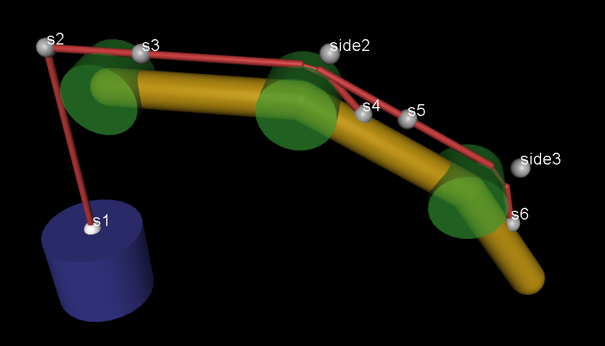
This element creates a spatial tendon, which is a minimum-length path passing through specified via-points and wrapping around specified obstacle geoms. The objects along the path are defined with the sub-elements site and geom below. One can also define pulleys which split the path in multiple branches. Each branch of the tendon path must start and end with a site, and if it has multiple obstacle geoms they must be separated by sites - so as to avoid the need for an iterative solver at the tendon level. This example illustrates a multi-branch tendon acting as a finger extensor, with a counter-weight instead of an actuator: tendon.xml.
A second form of wrapping is where the tendon is constrained to pass through a geom rather than wrap around it. This is enabled automatically when a sidesite is specified and its position is inside the volume of the obstacle geom.
Visualization: Tendon paths are visualized as in the image above, respecting the width, material and rgba attributes below. A special kind of visualization is used for unactuated 2-point tendons with range or springlength of the form [0 X], with positive X. Such tendons act like a cable, applying force only when stretched. Therefore when not stretched, they are drawn as a catenary of length X, as in the clip on the right of this example model.
- name: string, optional
Name of the tendon.
- class: string, optional
Defaults class for setting unspecified attributes.
- group: int, “0”
Integer group to which the tendon belongs. This attribute can be used for custom tags. It is also used by the visualizer to enable and disable the rendering of entire groups of tendons.
- limited: [false, true, auto], “auto”
If this attribute is “true”, the length limits defined by the range attribute below are imposed by the constraint solver. If this attribute is “auto”, and autolimits is set in compiler, length limits will be enabled if range is defined.
- actuatorfrclimited: [false, true, auto], “auto”
This attribute specifies whether actuator forces acting on the tendon should be clamped. See Force limits for details. This attribute interacts with the actuatorfrcrange attribute. If this attribute is “false”, actuator force clamping is disabled. If it is “true”, actuator force clamping is enabled. If this attribute is “auto”, and autolimits is set in compiler, actuator force clamping will be enabled if actuatorfrcrange is defined.
- range: real(2), “0 0”
Range of allowed tendon lengths. Setting this attribute without specifying limited is an error, unless autolimits is set in compiler.
- actuatorfrcrange: real(2), “0 0”
Range for clamping total actuator forces acting on this tendon. See Force limits for details. The compiler expects the lower bound to be nonpositive and the upper bound to be nonnegative.
Setting this attribute without specifying actuatorfrclimited is an error if compiler-autolimits is “false”.
- solreflimit, solimplimit
Constraint solver parameters for simulating tendon limits. See Solver parameters.
- solreffriction, solimpfriction
Constraint solver parameters for simulating dry friction in the tendon. See also Friction.
- margin: real, “0”
The limit constraint becomes active when the absolute value of the difference between the tendon length and either limit of the specified range falls below this margin. Similar to contacts, the margin parameter is subtracted from the difference between the range limit and the tendon length. The resulting constraint distance is always negative when the constraint is active. This quantity is used to compute constraint impedance as a function of distance, as explained in Solver parameters.
- frictionloss: real, “0”
Friction loss caused by dry friction. To enable friction loss, set this attribute to a positive value.
- width: real, “0.003”
Radius of the cross-section area of the spatial tendon, used for rendering. Parts of the tendon that wrap around geom obstacles are rendered with reduced width.
- material: string, optional
Material used to set the appearance of the tendon.
- rgba: real(4), “0.5 0.5 0.5 1”
Color and transparency of the tendon. When this value is different from the internal default, it overrides the corresponding material properties. If a material is unspecified and rgba has the default value, limited tendons whose length exceeds the limit are recolored using the value of the constraint impedance \(d\) to mix the default color and rgba/constraint.
- springlength: real(2), “-1 -1”
Spring resting position, can take either one or two values. If one value is given, it corresponds to the length of the tendon at rest. If it is
-1, the tendon resting length is determined from the model reference configuration inmjModel.qpos0.
Note that the default value of-1, which invokes the automatic length computation, was designed with spatial tendons in mind, which can only have nonegative length. In order to set the springlength of a fixed tendon to-1, use a nearby value like-0.99999.
If two non-decreasing values are given, they define a dead-band range. If the tendon length is between the two values, the force is 0. If it is outside this range, the force behaves like a regular spring, with the rest-point corresponding to the nearest springlength value. A deadband can be used to define tendons whose limits are enforced by springs rather than constraints.
- stiffness: real, “0 0 0”
Tendon stiffness coefficients \(a, b, c\). A positive \(a\) generates a linear spring force \(f(x) = -a x\), acting along the tendon. Here \(x\) is the tendon displacement defined by springlength.
If the optional second and third components are set, they define a nonlinear polynomial spring force \(f(x) = -(a x + b x^2 + c x^3)\). See Polynomial forces for details.
The clip on the right is of this model.
- damping: real, “0 0 0”
Damping coefficients \(a, b, c\). A positive \(a\) produces the standard dissipative linear damping force \(f(v) = -a v\).
If the optional second and third components are set, they define a nonlinear polynomial damping force \(f(v) = -(a v + b v |v| + c v^3)\). Note the anti-symmetrization of the quadratic term, ensuring that the force is an odd function of velocity. See Polynomial forces for details.
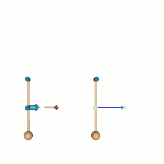
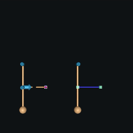
- armature: real, “0”
Inertia associated with changes in tendon length. Setting this attribute to a positive value \(m\) adds a kinetic energy term \(\frac{1}{2}mv^2\), where \(v\) is the tendon velocity. Tendon inertia is most valuable when modeling the armature inertia in a linear actuator which contains a spinning element or the inertial motion of a fluid in a linear hydraulic actuator. In the illustration, we compare (left) a 3-dof system with a “tendon” implemented with a rotational joint and a slider joint with armature, attached to the world with a connect constraint and (right) an equivalent 1-dof model with an armature-bearing tendon. Like joint armature, this added inertia is only associated with changes in tendon length, and would not affect the dynamics of a moving fixed-length tendon. Because the tendon Jacobian \(J\) is position-dependent, tendon armature leads to an additional bias-force term \(c = m J \dot{J}^T \dot{q}\).
- user: real(nuser_tendon), “0 0 …”
See User parameters.
spatial/site#
This attribute specifies a site that the tendon path has to pass through. Recall that sites are rigidly attached to bodies.
- site: string, required
The name of the site that the tendon must pass through.
spatial/geom#
This element specifies a geom that acts as an obstacle for the tendon path. If the minimum-length path does not touch the geom it has no effect; otherwise the path wraps around the surface of the geom. Wrapping is computed analytically, which is why we restrict the geom types allowed here to spheres and cylinders. The latter are treated as having infinite length for tendon wrapping purposes. If a sidesite is defined, and its position is inside the geom, then the tendon is constrained to pass through the geom instead of passing around it.
- geom: string, required
The name of a geom that acts as an obstacle for the tendon path. Only sphere and cylinder geoms can be referenced here.
- sidesite: string, optional
To prevent the tendon path from snapping from one side of the geom to the other as the model configuration varies, the user can define a preferred “side” of the geom. At runtime, the wrap that is closer to the specified site is automatically selected. Specifying a side site is often needed in practice. If the side site is inside the geom, the tendon is constrained to pass through the interior of the geom.
spatial/pulley#
This element starts a new branch in the tendon path. The branches are not required to be connected spatially. Similar to the transmissions described in the Actuation model section of the Computation chapter, the quantity that affects the simulation is the tendon length and its gradient with respect to the joint positions. If a spatial tendon has multiple branches, the length of each branch is divided by the divisor attribute of the pulley element that started the branch, and added up to obtain the overall tendon length. This is why the spatial relations among branches are not relevant to the simulation. The tendon.xml example above illustrated the use of pulleys.
- divisor: real, required
The length of the tendon branch started by the pulley element is divided by the value specified here. For a physical pulley that splits a single branch into two parallel branches, the common branch would have divisor value of 1 and the two branches following the pulley would have divisor values of 2. If one of them is further split by another pulley, each new branch would have divisor value of 4 and so on. Note that in MJCF each branch starts with a pulley, thus a single physical pulley is modeled with two MJCF pulleys. If no pulley elements are included in the tendon path, the first and only branch has divisor value of 1.
tendon/fixed#
This element creates an abstract tendon whose length is defined as a linear combination of joint positions. Recall that the tendon length and its gradient are the only quantities needed for simulation. Thus we could define any scalar function of joint positions, call it “tendon”, and use it in MuJoCo. The only such function supported is a fixed linear combination. The attributes of fixed tendons are a subset of the attributes of spatial tendons and have the same meaning as above.
- name, class, group, limited, range, solreflimit, solimplimit, solreffriction, solimpfriction, frictionloss, margin, springlength, stiffness, damping, user
Same as in the spatial element.
fixed/joint#
This element adds a joint to the computation of the fixed tendon length. The position or angle of each included joint is multiplied by the corresponding coef value, and added up to obtain the tendon length.
- joint: string, required
Name of the joint to be added to the fixed tendon. Only scalar joints (slide and hinge) can be referenced here.
- coef: real, required
Scalar coefficient multiplying the position or angle of the specified joint.
actuator#
This is a grouping element for actuator definitions. Recall the discussion of MuJoCo’s Actuation model in the Computation chapter, and the Actuator shortcuts discussed earlier in this chapter. The first 13 attributes of all actuator-related elements below are the same, so we document them only once, under the general actuator.
actuator/general#
This element creates a general actuator, providing full access to all actuator components and allowing the user to specify them independently.
- name: string, optional
Element name. See Naming elements.
- class: string, optional
Active defaults class. See Default settings.
- group: int, “0”
Integer group to which the actuator belongs. This attribute can be used for custom tags. It is also used by the visualizer to enable and disable the rendering of entire groups of actuators.
- nsample: int, “0”
If greater than 0, this attribute creates a time-indexed ring buffer with nsample samples of this actuator’s
ctrlhistory. During state advancement, the current control input is appended to the buffer with timestamptime, and the oldest sample is removed. Values in the history buffer can be read via mj_readCtrl.A positive nsample is required for delay. See Delays for details.
- interp: [zoh, linear, cubic], “zoh”
The interpolation method used when reading from the history buffer. Corresponds to the
interpargument in mj_readCtrl.zoh: Zero-order hold (piecewise constant).linear: Piecewise linear interpolation.cubic: Cubic spline interpolation (Catmull-Rom).
The interp value is for advanced use-cases, see Delays for details.
- delay: real, “0”
If greater than 0, then during the forward dynamics, instead of reading the control input to the actuator from
mjData.ctrl, the control input is read from the history buffer using mj_readCtrl. Requires a history buffer (nsample > 0).In the most common case,
delay = nsample * timestep.
- ctrllimited: [false, true, auto], “auto”
If true, the control input to this actuator is automatically clamped to ctrlrange at runtime. If false, control input clamping is disabled. If “auto” and autolimits is set in compiler, control clamping will automatically be set to true if ctrlrange is defined without explicitly setting this attribute to “true”. Note that control input clamping can also be globally disabled with the clampctrl attribute of option/flag.
- forcelimited: [false, true, auto], “auto”
If true, the force output of this actuator is automatically clamped to forcerange at runtime. If false, force clamping is disabled. If “auto” and autolimits is set in compiler, force clamping will automatically be set to true if forcerange is defined without explicitly setting this attribute to “true”.
- actlimited: [false, true, auto], “auto”
If true, the internal state (activation) associated with this actuator is automatically clamped to actrange at runtime. If false, activation clamping is disabled. If “auto” and autolimits is set in compiler, activation clamping will automatically be set to true if actrange is defined without explicitly setting this attribute to “true”. See the Activation clamping section for more details.
- ctrlrange: real(2), “0 0”
Range for clamping the control input. The first value must be smaller than the second value.
Setting this attribute without specifying ctrllimited is an error if autolimits is “false” in compiler.
- forcerange: real(2), “0 0”
Range for clamping the force output. The first value must be no greater than the second value.
Setting this attribute without specifying forcelimited is an error if autolimits is “false” in compiler.
- actrange: real(2), “0 0”
Range for clamping the activation state. The first value must be no greater than the second value. See the Activation clamping section for more details.
Setting this attribute without specifying actlimited is an error if autolimits is “false” in compiler.
- lengthrange: real(2), “0 0”
Range of feasible lengths of the actuator’s transmission. See Length Range.
- gear: real(6), “1 0 0 0 0 0”
This attribute scales the length (and consequently moment arms, velocity and force) of the actuator, for all transmission types. It is different from the gain in the force generation mechanism, because the gain only scales the force output and does not affect the length, moment arms and velocity. For actuators with scalar transmission, only the first element of this vector is used. The remaining elements are needed for joint, jointinparent and site transmissions where this attribute is used to specify 3D force and torque axes.
- damping: real(3), “0 0 0”
Viscous damping coefficients, contributed by the actuator to its transmission target (joint or tendon only). The damping value is scaled by gear squared, because the gear ratio scales both forces and velocities, leading to reflected damping (analogous to reflected inertia). Like joint damping, coefficients correspond to linear, quadratic and cubic velocity. See Polynomial forces for details.
Several actuator shortcuts have a kv attribute which maps to -biasprm[2] and has similar semantics to damping: (e.g., position/kv). The differences between these attributes are:
damping is applied at the transmission target, and therefore includes the gear2 factor. This factor is not required for kv as it is already applied in actuator space (so the units are identical).
Implicit integration works for damping when using the Euler integrator but not for kv. To get implicit integration for kv, implicit or implicitfast is required, see Integrators.
damping allows for polynomial damping, while kv is only linear.
Damping forces generated by kv are subject to forcerange clamping, but forces generated by damping are not.
Finally, note that while it is permitted for nonzero damping and armature to be specified for multiple actuators acting on the same transmission target, it is more performant to specify them for only one actuator. Since these values are summed anyway, it is recommended to place all damping and armature for one transmission target in a single actuator definition.
- armature: real, “0”
Armature inertia (or mass for slider joints) contributed by the actuator to its transmission target (joint or tendon only). This is the actual inertia of the spinning element inside the actuator (e.g., a rotor). The contributed value is scaled by gear squared, because the gear ratio scales both forces and velocities, leading to reflected inertia. See joint and tendon armature for more details.
See also the note in damping regarding multiple actuators acting on the same transmission target.
- cranklength: real, “0”
Used only for the slider-crank transmission type. Specifies the length of the connecting rod. The compiler expects this value to be positive when a slider-crank transmission is present.
- joint: string, optional
This and the next four attributes determine the type of actuator transmission. All of them are optional, and exactly one of them must be specified. If this attribute is specified, the actuator acts on the given joint. For hinge and slide joints, the actuator length equals the joint position/angle times the first element of gear. For ball joints, the first three elements of gear define a 3d rotation axis in the child frame around which the actuator produces torque. The actuator length is defined as the dot-product between this gear axis and the angle-axis representation of the joint quaternion, and is in units of radian if gear is normalized (generally scaled by by the norm of gear). Note that after total rotation of more than \(\pi\), the length will wrap to \(- \pi\), and vice-versa. Therefore position servos for ball joints should generally use tighter limits which prevent this wrapping. For free joints, gear defines a 3d translation axis in the world frame followed by a 3d rotation axis in the child frame. The actuator generates force and torque relative to the specified axes. The actuator length for free joints is defined as zero (so it should not be used with position servos).
- jointinparent: string, optional
Identical to joint, except that for ball and free joints, the 3d rotation axis given by gear is defined in the parent frame (which is the world frame for free joints) rather than the child frame.
- site: string, optional
This transmission can apply force and torque at a site. The gear vector defines a 3d translation axis followed by a 3d rotation axis. Both are defined in the site’s frame. This can be used to model jets and propellers. The effect is similar to actuating a free joint, and the actuator length is defined as zero unless a refsite is defined (see below). One difference from the joint and jointinparent transmissions above is that here the actuator operates on a site rather than a joint, but this difference disappears when the site is defined at the frame origin of the free-floating body. The other difference is that for site transmissions both the translation and rotation axes are defined in local coordinates. In contrast, translation is global and rotation is local for joint, and both translation and rotation are global for jointinparent.
- refsite: string, optional
When using a site transmission, measure the translation and rotation w.r.t the frame of the refsite. In this case the actuator does have length and position actuators can be used to directly control an end effector, see refsite.xml example model. As above, the length is the dot product of the gear vector and the frame difference. So
gear="0 1 0 0 0 0"means “Y-offset of site in the refsite frame”, whilegear="0 0 0 0 0 1"means rotation “Z- rotation of site in the refsite frame”. It is recommended to use a normalized gear vector with nonzeros in only the first 3 or the last 3 elements of gear, so the actuator length will be in either length units or radians, respectively. As with ball joints (see joint above), for rotations which exceed a total angle of \(\pi\) will wrap around, so tighter limits are recommended.
- body: string, optional
This transmission can apply linear forces at contact points in the direction of the contact normal. The set of contacts is all those belonging to the specified body. This can be used to model natural active adhesion mechanisms like the feet of geckos and insects. The actuator length is again defined as zero. For more information, see the adhesion shortcut below.
- tendon: string, optional
If specified, the actuator acts on the given tendon. The actuator length equals the tendon length times the gear ratio. Both spatial and fixed tendons can be used.
- cranksite: string, optional
If specified, the actuator acts on a slider-crank mechanism which is implicitly determined by the actuator (i.e., it is not a separate model element). The specified site corresponds to the pin joining the crank and the connecting rod. The actuator length equals the position of the slider-crank mechanism times the gear ratio.
- slidersite: string, required for slider-crank transmission
Used only for the slider-crank transmission type. The specified site is the pin joining the slider and the connecting rod. The slider moves along the z-axis of the slidersite frame. Therefore the site should be oriented as needed when it is defined in the kinematic tree; its orientation cannot be changed in the actuator definition.
- user: real(nuser_actuator), “0 … 0”
See User parameters.
- actdim: real, “-1”
Dimension of the activation state. The default value of
-1instructs the compiler to set the dimension according to the dyntype. Values larger than1are only allowed for user-defined activation dynamics, as native types require dimensions of only 0 or 1. For activation dimensions bigger than 1, the last element is used to generate force.
- dyntype: [none, integrator, filter, filterexact, muscle, user], “none”
Activation dynamics type for the actuator. The available dynamics types were already described in the Actuation model section. Repeating that description in somewhat different notation (corresponding to the mjModel and mjData fields involved) we have:
Keyword
Description
none
No internal state
integrator
act_dot = ctrl
filter
act_dot = (ctrl - act) / dynprm[0]
filterexact
Like filter but with exact integration
muscle
act_dot = mju_muscleDynamics(…)
user
act_dot = mjcb_act_dyn(…)
- gaintype: [fixed, affine, muscle, user], “fixed”
The gain and bias together determine the output of the force generation mechanism, which is currently assumed to be affine. As already explained in Actuation model, the general formula is: scalar_force = gain_term * (act or ctrl) + bias_term. The formula uses the activation state when present, and the control otherwise. The keywords have the following meaning:
Keyword
Description
fixed
gain_term = gainprm[0]
affine
gain_term = gain_prm[0] + gain_prm[1]*length + gain_prm[2]*velocity
muscle
gain_term = mju_muscleGain(…)
user
gain_term = mjcb_act_gain(…)
- biastype: [none, affine, muscle, user], “none”
The keywords have the following meaning:
Keyword
Description
none
bias_term = 0
affine
bias_term = biasprm[0] + biasprm[1]*length + biasprm[2]*velocity
muscle
bias_term = mju_muscleBias(…)
user
bias_term = mjcb_act_bias(…)
- dynprm: real(10), “1 0 … 0”
Activation dynamics parameters. The built-in activation types (except for muscle) use only the first parameter, but we provide additional parameters in case user callbacks implement a more elaborate model. The length of this array is not enforced by the parser, so the user can enter as many parameters as needed. These defaults are not compatible with muscle actuators; see muscle below.
- gainprm: real(10), “1 0 … 0”
Gain parameters. The built-in gain types (except for muscle) use only the first parameter, but we provide additional parameters in case user callbacks implement a more elaborate model. The length of this array is not enforced by the parser, so the user can enter as many parameters as needed. These defaults are not compatible with muscle actuators; see muscle below.
- biasprm: real(10), “0 … 0”
Bias parameters. The affine bias type uses three parameters. The length of this array is not enforced by the parser, so the user can enter as many parameters as needed. These defaults are not compatible with muscle actuators; see muscle below.
- actearly: [false, true], “false”
If true, force computation will use the next value of the activation variable rather than the current one. Setting this flag reduces the delay between the control and accelerations by one time-step.
actuator/motor#
This and the next three elements are the Actuator shortcuts discussed earlier. When such a shortcut is encountered, the parser creates a general actuator and sets its dynprm, gainprm and biasprm attributes to the internal defaults shown above, regardless of any default settings. It then adjusts dyntype, gaintype and biastype depending on the shortcut, parses any custom attributes (beyond the common ones), and translates them into regular attributes (i.e., attributes of the general actuator type) as explained here.
This element creates a direct-drive actuator. The underlying general attributes are set as follows:
Attribute |
Setting |
Attribute |
Setting |
|---|---|---|---|
dyntype |
none |
dynprm |
1 0 0 |
gaintype |
fixed |
gainprm |
1 0 0 |
biastype |
none |
biasprm |
0 0 0 |
This element does not have custom attributes. It only has common attributes, which are:
- name, class, group, delay, ctrllimited, forcelimited, ctrlrange, forcerange, lengthrange, gear, cranklength, joint, jointinparent, tendon, cranksite, slidersite, site, refsite, user, damping, armature
Same as in actuator/ general.
actuator/position#
This element creates a position servo with an optional first-order filter. The underlying general attributes are set as follows:
Attribute |
Setting |
Attribute |
Setting |
|---|---|---|---|
dyntype |
none or filterexact |
dynprm |
timeconst 0 0 |
gaintype |
fixed |
gainprm |
kp 0 0 |
biastype |
affine |
biasprm |
0 -kp -kv |
This element has one custom attribute in addition to the common attributes:
- name, class, group, delay, ctrllimited, forcelimited, ctrlrange, forcerange, lengthrange, gear, cranklength, joint, jointinparent, tendon, cranksite, slidersite, site, refsite, user, damping, armature
Same as in actuator/ general.
- kp: real, “1”
Position feedback gain.
- kv: real, “0”
Damping applied by the actuator. When using this attribute, it is recommended to use the implicitfast or implicit integrators.
- dampratio: real, “0”
Damping applied by the actuator, using damping ratio units. This attribute is exclusive with kv and has similar meaning, but instead of units of force/velocity, the units are \(2 \sqrt{k_p \cdot m}\), corresponding to a harmonic oscillator’s damping ratio. A value of 1 corresponds to a critically damped oscillator, which often produces desirable behavior. Values smaller or larger than 1 correspond to underdamped and overdamped oscillations, respectively. The mass \(m\) is computed at the reference configuration
mjModel.qpos0, taking into account joint armature. However, passive damping or frictionloss in the affected joints are not taken into account; if they are non-negligible, dampratio values smaller than 1 might be required to achieve desirable motion. When using this attribute, it is recommended to use the implicitfast or implicit integrators.
- timeconst: real, “0”
Time-constant of optional first-order filter. If larger than zero, the actuator uses the filterexact dynamics type, if zero (the default) no filter is used.
- inheritrange: real, “0”
Automatically set the actuator’s ctrlrange to match the transmission target’s range. The default value means “disabled”. A positive value X sets the ctrlrange around the midpoint of the target range, scaled by X. For example if the target joint has range of [0, 1], then a value of 1.0 will set ctrlrange to [0, 1]; values of 0.8 and 1.2 will set the ctrlrange to [0.1, 0.9] and [-0.1, 1.1], respectively. Values smaller than 1 are useful for not hitting the limits; values larger than 1 are useful for maintaining control authority at the limits (being able to push on them). This attribute is exclusive with ctrlrange and available only for joint and tendon transmissions which have range defined. Note that while inheritrange is available both as a position attribute and in the default class, saved XMLs always convert it to explicit ctrlrange at the actuator.
actuator/velocity#
This element creates a velocity servo. Note that in order to create a PD controller, one has to define two actuators: a position servo and a velocity servo. This is because MuJoCo actuators are SISO while a PD controller takes two control inputs (reference position and reference velocity). When using this actuator, it is recommended to use the implicitfast or implicit integrators. The underlying general attributes are set as follows:
Attribute |
Setting |
Attribute |
Setting |
|---|---|---|---|
dyntype |
none |
dynprm |
1 0 0 |
gaintype |
fixed |
gainprm |
kv 0 0 |
biastype |
affine |
biasprm |
0 0 -kv |
This element has one custom attribute in addition to the common attributes:
- name, class, group, delay, ctrllimited, forcelimited, ctrlrange, forcerange, lengthrange, gear, cranklength, joint, jointinparent, tendon, cranksite, slidersite, site, refsite, user, damping, armature
Same as in actuator/ general.
- kv: real, “1”
Velocity feedback gain.
actuator/intvelocity#
This element creates an integrated-velocity servo. For more information, see the Activation clamping section of the Modeling chapter. The underlying general attributes are set as follows:
Attribute |
Setting |
Attribute |
Setting |
|---|---|---|---|
dyntype |
integrator |
dynprm |
1 0 0 |
gaintype |
fixed |
gainprm |
kp 0 0 |
biastype |
affine |
biasprm |
0 -kp -kv |
actlimited |
true |
This element has one custom attribute in addition to the common attributes:
- name, class, group, delay, ctrllimited, forcelimited, ctrlrange, forcerange, actrange, lengthrange, gear, cranklength, joint, jointinparent, tendon, cranksite, slidersite, site, refsite, user, damping, armature
Same as in actuator/ general.
- kp: real, “1”
Position feedback gain.
- kv: real, “0”
Damping applied by the actuator. When using this attribute, it is recommended to use the implicitfast or implicit integrators.
- dampratio: real, “0”
See position/dampratio.
- inheritrange: real, “0”
Identical to position/inheritrange, but sets actrange (which has the same length semantics as the transmission target) rather than ctrlrange (which has velocity semantics).
actuator/damper#
This element is an active damper which produces a force proportional to both velocity and control: F = - kv * velocity
* control, where kv must be nonnegative. ctrlrange is required and must also be nonnegative.
When using this actuator, it is recommended to use the implicitfast or implicit integrators.
The underlying general attributes are set as follows:
Attribute |
Setting |
Attribute |
Setting |
|---|---|---|---|
dyntype |
none |
dynprm |
1 0 0 |
gaintype |
affine |
gainprm |
0 0 -kv |
biastype |
none |
biasprm |
0 0 0 |
ctrllimited |
true |
This element has one custom attribute in addition to the common attributes:
- name, class, group, delay, ctrllimited, forcelimited, ctrlrange, forcerange, lengthrange, gear, cranklength, joint, jointinparent, tendon, cranksite, slidersite, site, refsite, user, damping, armature
Same as in actuator/ general.
- kv: real, “1”
Velocity feedback gain.
actuator/cylinder#
This element is suitable for modeling pneumatic or hydraulic cylinders. The underlying general attributes are set as follows:
Attribute |
Setting |
Attribute |
Setting |
|---|---|---|---|
dyntype |
filter |
dynprm |
timeconst 0 0 |
gaintype |
fixed |
gainprm |
area 0 0 |
biastype |
affine |
biasprm |
bias(3) |
This element has four custom attributes in addition to the common attributes:
- name, class, group, delay, ctrllimited, forcelimited, ctrlrange, forcerange, lengthrange, gear, cranklength, joint, jointinparent, tendon, cranksite, slidersite, site, refsite, user, damping, armature
Same as in actuator/ general.
- timeconst: real, “1”
Time constant of the activation dynamics.
- area: real, “1”
Area of the cylinder. This is used internally as actuator gain.
- diameter: real, optional
Instead of area the user can specify diameter. If both are specified, diameter has precedence.
- bias: real(3), “0 0 0”
Bias parameters, copied internally into biasprm.
actuator/muscle#
This element is used to model a muscle actuator, as described in the Muscles actuators section. The underlying general attributes are set as follows:
Attribute |
Setting |
Attribute |
Setting |
|---|---|---|---|
dyntype |
muscle |
dynprm |
timeconst(2) tausmooth |
gaintype |
muscle |
gainprm |
range(2), force, scale, lmin, lmax, vmax, fpmax, fvmax |
biastype |
muscle |
biasprm |
same as gainprm |
This element has nine custom attributes in addition to the common attributes:
- name, class, group, delay, ctrllimited, forcelimited, ctrlrange, forcerange, lengthrange, gear, cranklength, joint, jointinparent, tendon, cranksite, slidersite, user, damping, armature
Same as in actuator/ general.
- timeconst: real(2), “0.01 0.04”
Time constants for activation and de-activation dynamics.
- tausmooth: real, “0”
Width of smooth transition between activation and deactivation time constants. Units of ctrl, must be nonnegative.
- range: real(2), “0.75 1.05”
Operating length range of the muscle, in units of L0.
- force: real, “-1”
Peak active force at rest. If this value is negative, the peak force is determined automatically using the scale attribute below.
- scale: real, “200”
If the force attribute is negative, the peak active force for the muscle is set to this value divided by mjModel.actuator_acc0. The latter is the norm of the joint-space acceleration vector caused by unit force on the actuator’s transmission in qpos0. In other words, scaling produces higher peak forces for muscles that pull more weight.
- lmin: real, “0.5”
Lower position range of the normalized FLV curve, in units of L0.
- lmax: real, “1.6”
Upper position range of the normalized FLV curve, in units of L0.
- vmax: real, “1.5”
Shortening velocity at which muscle force drops to zero, in units of L0 per second.
- fpmax: real, “1.3”
Passive force generated at lmax, relative to the peak rest force.
- fvmax: real, “1.2”
Active force generated at saturating lengthening velocity, relative to the peak rest force.
actuator/adhesion#
This element defines an active adhesion actuator which injects forces at contacts in the normal direction, see illustration video. The model shown in the video can be found here and includes inline annotations. The transmission target is a body, and adhesive forces are injected into all contacts involving geoms which belong to this body. The force is divided equally between multiple contacts. When the gap attribute is not used, this actuator requires active contacts and cannot apply a force at a distance, more like the active adhesion on the feet of geckos and insects rather than an industrial vacuum gripper. In order to enable “suction at a distance”, set the gap attribute of the body’s geoms to a positive value. This creates a layer around each geom where contacts are detected but no contact forces are generated, and the adhesive force can act across this gap. In the video above, such inactive contacts are blue, while active contacts are orange. An adhesion actuator’s length is always 0. ctrlrange is required and must also be nonnegative (no repulsive forces are allowed). The underlying general attributes are set as follows:
Attribute |
Setting |
Attribute |
Setting |
|---|---|---|---|
dyntype |
none |
dynprm |
1 0 0 |
gaintype |
fixed |
gainprm |
gain 0 0 |
biastype |
none |
biasprm |
0 0 0 |
trntype |
body |
ctrllimited |
true |
This element has a subset of the common attributes and two custom attributes.
- name, class, group, delay, forcelimited, ctrlrange, forcerange, user
Same as in actuator/ general.
- body: string, required
The actuator acts on all contacts involving this body’s geoms.
- gain: real, “1”
Gain of the adhesion actuator, in units of force. The total adhesion force applied by the actuator is the control value multiplied by the gain. This force is distributed equally between all the contacts involving geoms belonging to the target body.
actuator/dcmotor#
This element creates a DC motor actuator. See the DC motor technical note for complete mathematical formulations and parameter semantics, but we include a few important notes below. Note that dcmotor does not conform to the affine gain / bias structure of the general actuation model, except for the stateless case.
resistance, motorconst and nominal are each optional, but some combination of them is required. See Section 2.1 of the technical note.
The control input semantic is either the voltage applied to the motor terminals (the default), or a position or velocity target for a PID controller.
Optional features include electrical dynamics (inductance), cogging torque, thermal resistance variation, and LuGre friction.
The underlying general attributes are set to the dcmotor type, and their associated parameter arrays are computed internally:
Attribute |
Setting |
Attribute |
Setting |
|---|---|---|---|
dyntype |
dcmotor |
dynprm |
computed |
gaintype |
dcmotor |
gainprm |
computed |
biastype |
dcmotor |
biasprm |
computed |
This element has the following custom attributes in addition to the common attributes:
- name, class, group, nsample, interp, delay, ctrllimited, ctrlrange, lengthrange, gear, damping, armature, cranklength, joint, jointinparent, tendon, cranksite, slidersite, site, refsite, user
Same as in actuator/ general.
- resistance: real, optional
Terminal resistance \(R\) in Ohm. (see tech note, Sections 1.1 and 2.1)
- motorconst: real(2), optional
Motor constants, defined as motorconst = “Kt Ke” (N·m/A, equivalently V·s/rad). Kt is the torque constant and Ke the back-EMF constant; they can differ when magnetic saturation is present. If both are positive, the effective constant is \(K = \sqrt{K_t K_e}\) (geometric mean). If only one is positive, \(K\) equals that value. If a datasheet specifies the speed constant \(K_v\) in rad/(V·s), use \(K_e = 1/K_v\). (see tech note, Sections 1.1 and 2.1)
- nominal: real(3), optional
Nominal operating point, defined as nominal = “voltage stall_torque no_load_speed”. The compiler derives \(K =\) voltage / no_load_speed and \(R = K\) · voltage / stall_torque. (see tech note, Sections 1.1 and 2.1)
- inductance: real(2), “0 0”
Electrical dynamics, defined as inductance = “L timeconst” (Henry, seconds). These are alternative specifications: L is the winding inductance and timeconst \(= L/R\) is the electrical time constant. Specify one; if both are given, L takes precedence. If both are 0 (the default), no electrical dynamics are modeled and the current is computed algebraically. Adds one activation variable for armature current. (see tech note, Sections 1.1.1 and 2.2)
- thermal: real(6), “0 0 0 0 0 0”
Thermal model, defined as thermal = “resistance capacitance timeconst tempcoef reftemp ambient” (K/W, J/K, s, 1/K, °C, °C). The first three sub-values specify the thermal time constant: timeconst = resistance \(\times\) capacitance. Specify either timeconst directly, or resistance and capacitance; if all three are given, timeconst takes precedence. If all are 0 (the default), thermal modeling is disabled. Adds one activation variable for winding temperature. (see tech note, Sections 1.3 and 2.3)
- saturation: real(3), “0 0 0”
Limits on the actuator, defined as saturation = “torque current current_rate”. torque and current are alternative specifications of the maximum continuous torque: if current is given, torque \(= K \cdot\) current; if both are given, torque takes precedence. Sets forcerange to [\(-\tau_{\max},\, \tau_{\max}\)]. current_rate sets the maximum rate of change of current \((di/dt)_{\max}\) (requires inductance). A value of 0 (the default) for any sub-value disables the respective limit. (see tech note, Section 2)
- cogging: real(3), “0 0 0”
Cogging torque, defined as cogging = “amplitude poles phase” (N·m, integer, rad). Adds a position-dependent torque \(= \textsf{amplitude} \cdot \sin(\textsf{poles} \cdot \theta + \textsf{phase})\). Disabled when amplitude = 0 (the default). (see tech note, Sections 1.2 and 2.1)
- lugre: real(5), “0 0 0 0 0”
LuGre friction, defined as lugre = “stiffness damping coulomb static stribeck” (N·m/rad, N·m·s/rad, N·m, N·m, rad/s). Disabled when stiffness = 0 (the default). Adds one activation variable for bristle deflection. Note that the viscous damping coefficient \(\sigma_2\) is not part of the lugre attribute and should be added to the standard actuator damping attribute. (see tech note, Sections 1.4 and 2.4)
- input: [voltage, position, velocity], “voltage”
Specifies the input signal semantics. In “voltage” mode, the control directly sets applied motor voltage. In “position” or “velocity” modes, the PID controller uses the control as a reference setpoint relative to the joint trajectory. (see tech note, Section 2.5)
- controller: real(6), “0 0 0 0 0 0”
PID controller parameters, defined as controller = “kp ki kd slewmax Imax Vmax”. Depending on the input mode, the controller stabilizes either position or velocity. If the input mode is voltage, kp, ki, kd are ignored. Vmax sets the maximum drive voltage \(v_{\max}\) (Volt); in position/velocity modes it clamps the controller output, in voltage mode it clamps the control signal (if ctrlrange is also set, the tighter limit wins). A value of 0 (the default) disables the respective feature. When positive, slewmax limits the setpoint rate-of-change, Imax clamps the integrator state (anti-windup), and Vmax clamps the drive voltage. (see tech note, Section 2.5)
actuator/plugin #
Associate this actuator with an engine plugin. Either plugin or instance are required.
- plugin: string, optional
Plugin identifier, used for implicit plugin instantiation.
- instance: string, optional
Instance name, used for explicit plugin instantiation.
- dyntype: [none, integrator, filter, filterexact, muscle, user], “none”
Activation dynamics type for the actuator. The available dynamics types were already described in the Actuation model section. If dyntype is not “none”, an activation variable will be added to the actuator. This variable will be added after any activation state computed by the plugin (see actuator plugin activations).
- actrange: real(2), “0 0”
Range for clamping the activation state associated with this actuator’s dyntype. The limit doesn’t apply to activations computed by the plugin. The first value must be no greater than the second value. See the Activation clamping section for more details.
- name, class, group, delay, actlimited, ctrllimited, forcelimited, ctrlrange, forcerange, lengthrange, gear, cranklength, joint, jointinparent, site, tendon, cranksite, slidersite, user, actdim, dynprm, actearly, damping, armature
Same as in actuator/ general.
sensor#
This is a grouping element for sensor definitions. It does not have attributes. The outputs of all sensors are concatenated in the field mjData.sensordata which has size mjModel.nsensordata. This data is not used in any internal computations.
In addition to the sensors created with the elements below, the top-level function mj_step computes the quantities mjData.cacc, mjData.cfrc_int and mjData.crfc_ext corresponding to body accelerations and interaction forces. Some of these quantities are used to compute the output of certain sensors (force, acceleration, etc.) but even if no such sensors are defined in the model, these quantities themselves are “features” that could be of interest to the user.
sensor/touch#
This element creates a touch sensor. The active sensor zone is defined by a site. If a contact point falls within the site’s volume, and involves a geom attached to the same body as the site, the corresponding contact force is included in the sensor reading. If a contact point falls outside the sensor zone, but the normal ray intersects the sensor zone, it is also included. This re-projection feature is needed because, without it, the contact point may leave the sensor zone from the back (due to soft contacts) and cause an erroneous force reading. The output of this sensor is a non-negative scalar. It is computed by adding up the (scalar) normal forces from all included contacts.
- name, noise, cutoff, nsample, interval, delay, user
See Sensors.
- site: string, required
Site defining the active sensor zone.
sensor/accelerometer#
This element creates a 3-axis accelerometer. The sensor is mounted at a site, and has the same position and orientation as the site frame. This sensor outputs three numbers, which are the linear acceleration of the site (including gravity) in local coordinates.
The presence of this sensor in a model triggers a call to mj_rnePostConstraint during sensor computation.
- name, noise, cutoff, nsample, interval, delay, user
See Sensors.
- site: string, required
Site where the sensor is mounted. The accelerometer is centered and aligned with the site local frame.
sensor/velocimeter#
This element creates a 3-axis velocimeter. The sensor is mounted at a site, and has the same position and orientation as the site frame. This sensor outputs three numbers, which are the linear velocity of the site in local coordinates.
- name, noise, cutoff, nsample, interval, delay, user
See Sensors.
- site: string, required
Site where the sensor is mounted. The velocimeter is centered and aligned with the site local frame.
sensor/gyro#
This element creates a 3-axis gyroscope. The sensor is mounted at a site, and has the same position and orientation as the site frame. This sensor outputs three numbers, which are the angular velocity of the site in local coordinates. This sensor is often used in conjunction with an accelerometer mounted at the same site, to simulate an inertial measurement unit (IMU).
- name, noise, cutoff, nsample, interval, delay, user
See Sensors.
- site: string, required
Site where the sensor is mounted. The gyroscope is centered and aligned with the site local frame.
sensor/force#
This element creates a 3-axis force sensor. The sensor outputs three numbers, which are the interaction force between a child and a parent body, expressed in the site frame defining the sensor. The convention is that the site is attached to the child body, and the force points from the child towards the parent. The computation here takes into account all forces acting on the system, including contacts as well as external perturbations. Using this sensor often requires creating a dummy body welded to its parent (i.e., having no joint elements).
The presence of this sensor in a model triggers a call to mj_rnePostConstraint during sensor computation.
- name, noise, cutoff, nsample, interval, delay, user
See Sensors.
- site: string, required
Site where the sensor is mounted. The measured interaction force is between the body where the site is defined and its parent body, and points from the child towards the parent. The physical sensor being modeled could of course be attached to the parent body, in which case the sensor data would have the opposite sign. Note that each body has a unique parent but can have multiple children, which is why we define this sensor through the child rather than the parent body in the pair.
sensor/torque#
This element creates a 3-axis torque sensor. This is similar to the force sensor above, but measures torque rather than force.
The presence of this sensor in a model triggers a call to mj_rnePostConstraint during sensor computation.
- name, noise, cutoff, nsample, interval, delay, user
See Sensors.
- site: string, required
Site where the sensor is mounted. The measured interaction torque is between the body where the site is defined and its parent body.
sensor/magnetometer#
This element creates a magnetometer. It measures the magnetic flux at the sensor site position, expressed in the sensor site frame. The output is a 3D vector.
- name, noise, cutoff, nsample, interval, delay, user
See Sensors.
- site: string, required
The site where the sensor is attached.
sensor/rangefinder#
This element creates a rangefinder.
If associated with a site, it measures the distance to the nearest geom surface, along the ray defined by the positive Z-axis of the site.
If associated with a camera, it outputs one distance measurement for each pixel in the camera image. Note that cameras face the negative Z-axis of their frame. The number of measurements in this case is equal to product of the camera’s width and height resolutions.
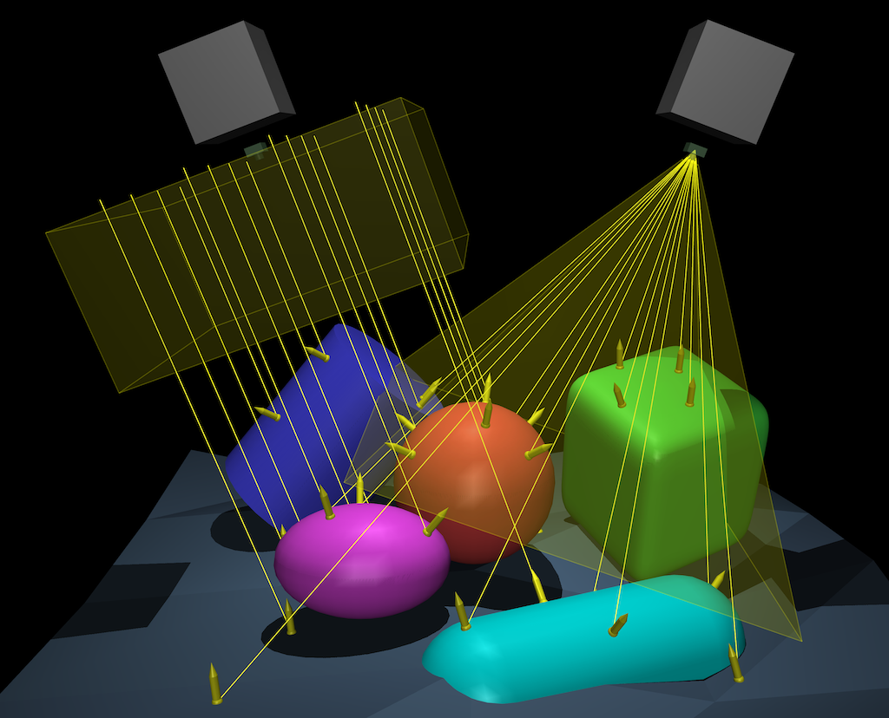
If a ray does not intersect any geom surface, the sensor output is -1. If the origin of the ray is inside a geom, the surface is still detected. Geoms attached to the same body as the sensor site/camera are excluded. Invisible geoms, defined as geoms whose rgba (or whose material rgba) has alpha=0, are also excluded. Note however that geoms made invisible in the visualizer by disabling their geom group are not excluded; this is because sensor calculations are independent of the visualizer.
The image on the right (click to see the model being visualized) shows two rangefinder sensors attached to a perspective and an orthographic camera, with frustums visualized. Both cameras have 4x4 resolution, for 16 rays each. The rangefinder sensors report data = “dist point normal” (see below), so we can see the rays (lines), the intersection points (spheres) and the surface normals (arrows).
- data: [dist, dir, origin, point, normal, depth], “dist”
By default, the rangefinder outputs a distance measurement, as described above. However, it is also possible to specify a set of output data fields. The data attribute can contain multiple sequential data types, as long as the relative order—as listed above—is maintained. For example, data = “dist point normal” will return 7 numbers per ray, while data = “point origin” is an error because origin must come before point.
dist real(1): The distance from the ray origin to the nearest geom surface, -1 if no surface was hit. If this data type is included, rays will be visualized as lines.
dir real(3): Normalized direction of the ray, or (0, 0, 0) if no surface was hit.
origin real(3): The point from which the ray emanates (global frame). For sites and perspective cameras, this is the site/camera xpos. However for orthographic cameras, ray origins are spatially distributed along the image plane.
point real(3): The point where the ray intersects the nearest geom surface in the global frame, or (0, 0, 0) if no surface was hit. If this data type is included, intersection points will be visualized as spheres.
normal: real(3): The geom surface normal at the point where the ray intersects it, in the global frame, or (0, 0, 0) if no surface was hit. Note that normals always point towards the outside of the geom surface, regardless of the ray origin. If this data type is included along with either dist or point, normals will be visualized as arrows at the intersection points.
depth: real(1): The distance of the hit point from the camera plane, -1 if no surface was hit. Note that this depth semantic corresponds to depth images in the computer graphics sense.
- name, noise, cutoff, nsample, interval, delay, user
See Sensors.
- site: string, optional
The site where the sensor is attached.
- camera: string, optional
The camera where the sensor is attached.
sensor/camprojection#
This element creates a camera projection sensor: the location of a target site, projected onto a camera image in pixel coordinates. The pixel origin (0, 0) is located at the top-left corner. Values are not clipped, so targets which fall outside the camera image will take values above or below the pixel range limits. Moreover, points behind the camera are also projected onto the image, so it is up to the user to filter out such points, if desired. This can be done using a framepos sensor with the camera as a reference frame: a negative/positive value in the z-coordinate indicates a location in front of/behind the camera plane, respectively.
- site: string, required
The site which is projected on to the camera image.
- camera: string, required
The camera used for the projection, its resolution attribute must be positive.
- name, noise, cutoff, nsample, interval, delay, user
See Sensors.
sensor/jointpos#
This and the remaining sensor elements do not involve sensor-specific computations. Instead they copy into the array mjData.sensordata quantities that are already computed. This element creates a joint position or angle sensor. It can be attached to scalar joints (slide or hinge). Its output is scalar.
- name, noise, cutoff, nsample, interval, delay, user
See Sensors.
- joint: string, required
The joint whose position or angle will be sensed. Only scalar joints can be referenced here. The sensor output is copied from mjData.qpos.
sensor/jointvel#
This element creates a joint velocity sensor. It can be attached to scalar joints (slide or hinge). Its output is scalar.
- name, noise, cutoff, nsample, interval, delay, user
See Sensors.
- joint: string, required
The joint whose velocity will be sensed. Only scalar joints can be referenced here. The sensor output is copied from mjData.qvel.
sensor/tendonpos#
This element creates a tendon length sensor. It can be attached to both spatial and fixed tendons. Its output is scalar.
- name, noise, cutoff, nsample, interval, delay, user
See Sensors.
- tendon: string, required
The tendon whose length will be sensed. The sensor output is copied from mjData.ten_length.
sensor/tendonvel#
This element creates a tendon velocity sensor. It can be attached to both spatial and fixed tendons. Its output is scalar.
- name, noise, cutoff, nsample, interval, delay, user
See Sensors.
- tendon: string, required
The tendon whose velocity will be sensed. The sensor output is copied from mjData.ten_velocity.
sensor/actuatorpos#
This element creates an actuator length sensor. Recall that each actuator has a transmission which has length. This sensor can be attached to any actuator. Its output is scalar.
- name, noise, cutoff, nsample, interval, delay, user
See Sensors.
- actuator: string, required
The actuator whose transmission’s length will be sensed. The sensor output is copied from mjData.actuator_length.
sensor/actuatorvel#
This element creates an actuator velocity sensor. This sensor can be attached to any actuator. Its output is scalar.
- name, noise, cutoff, nsample, interval, delay, user
See Sensors.
- actuator: string, required
The actuator whose transmission’s velocity will be sensed. The sensor output is copied from mjData.actuator_velocity.
sensor/actuatorfrc#
This element creates an actuator force sensor. The quantity being sensed is the scalar actuator force, not the generalized force contributed by the actuator (the latter is the product of the scalar force and the vector of moment arms determined by the transmission). This sensor can be attached to any actuator. Its output is scalar.
- name, noise, cutoff, nsample, interval, delay, user
See Sensors.
- actuator: string, required
The actuator whose scalar force output will be sensed. The sensor output is copied from mjData.actuator_force.
sensor/jointactuatorfrc#
This element creates an actuator force sensor, measured at a joint. The quantity being sensed is the generalized force contributed by all actuators to a single scalar joint (hinge or slider). If the joint’s actuatorgravcomp attribute is “true”, this sensor will also measure contributions by gravity compensation forces (which are added directly to the joint and would not register in the actuatorfrc) sensor. This type of sensor is important when multiple actuators act on a single joint or when a single actuator acts on multiple joints. See Force limits for details.
- name, noise, cutoff, nsample, interval, delay, user
See Sensors.
- joint: string, required
The joint where actuator forces will be sensed. The sensor output is copied from
mjData.qfrc_actuator.
sensor/tendonactuatorfrc#
This element creates an actuator force sensor, measured at a tendon. The quantity being sensed is the total force contributed by all actuators to a single tendon. This type of sensor is important when multiple actuators act on a single tendon. See Force limits for details.
- name, noise, cutoff, nsample, interval, delay, user
See Sensors.
- tendon: string, required
The tendon where actuator forces will be sensed.
sensor/ballquat#
This element creates a quaternion sensor for a ball joints. It outputs 4 numbers corresponding to a unit quaternion.
- name, noise, cutoff, nsample, interval, delay, user
See Sensors.
- joint: string, required
The ball joint whose quaternion is sensed. The sensor output is copied from mjData.qpos.
sensor/ballangvel#
This element creates a ball joint angular velocity sensor. It outputs 3 numbers corresponding to the angular velocity of the joint. The norm of that vector is the rotation speed in rad/s and the direction is the axis around which the rotation takes place.
- name, noise, cutoff, nsample, interval, delay, user
See Sensors.
- joint: string, required
The ball joint whose angular velocity is sensed. The sensor output is copied from mjData.qvel.
sensor/jointlimitpos#
This element creates a joint limit sensor for position.
- name, noise, cutoff, nsample, interval, delay, user
See Sensors.
- joint: string, required
The joint whose limit is sensed. The sensor output equals mjData.efc_pos - mjData.efc_margin for the corresponding limit constraint. Note that the result is negative if the limit is violated, regardless of which side of the limit is violated. If both sides of the limit are violated simultaneously, only the first component is returned. If there is no violation, the result is 0.
sensor/jointlimitvel#
This element creates a joint limit sensor for velocity.
- name, noise, cutoff, nsample, interval, delay, user
See Sensors.
- joint: string, required
The joint whose limit is sensed. The sensor output is copied from mjData.efc_vel. If the joint limit is not violated, the result is 0.
sensor/jointlimitfrc#
This element creates a joint limit sensor for constraint force.
- name, noise, cutoff, nsample, interval, delay, user
See Sensors.
- joint: string, required
The joint whose limit is sensed. The sensor output is copied from mjData.efc_force. If the joint limit is not violated, the result is 0.
sensor/tendonlimitpos#
This element creates a tendon limit sensor for position.
- name, noise, cutoff, nsample, interval, delay, user
See Sensors.
- tendon: string, required
The tendon whose limit is sensed. The sensor output equals mjData.efc_pos - mjData.efc_margin for the corresponding limit constraint. If the tendon limit is not violated, the result is 0.
sensor/tendonlimitvel#
This element creates a tendon limit sensor for velocity.
- name, noise, cutoff, nsample, interval, delay, user
See Sensors.
- tendon: string, required
The tendon whose limit is sensed. The sensor output is copied from mjData.efc_vel. If the tendon limit is not violated, the result is 0.
sensor/tendonlimitfrc#
This element creates a tendon limit sensor for constraint force.
- name, noise, cutoff, nsample, interval, delay, user
See Sensors.
- tendon: string, required
The tendon whose limit is sensed. The sensor output is copied from mjData.efc_force. If the tendon limit is not violated, the result is 0.
sensor/framepos#
This element creates a sensor that returns the 3D position of the spatial frame of the object, in global coordinates or optionally with respect to a given frame-of-reference.
- name, noise, cutoff, nsample, interval, delay, user
See Sensors.
- objtype: [body, xbody, geom, site, camera], required
The type of object to which the sensor is attached. This must be an object type that has a spatial frame. “body” refers to the inertial frame of the body, while “xbody” refers to the regular frame of the body (usually centered at the joint with the parent body).
- objname: string, required
The name of the object to which the sensor is attached.
- reftype: [body, xbody, geom, site, camera]
The type of object to which the frame-of-reference is attached. The semantics are identical to the objtype attribute. If reftype and refname are given, the sensor values will be measured with respect to this frame. If they are not given, sensor values will be measured with respect to the global frame.
- refname: string
The name of the object to which the frame-of-reference is attached.
sensor/framequat#
This element creates a sensor that returns the unit quaternion specifying the orientation of the spatial frame of the object, in global coordinates.
- name, noise, cutoff, nsample, interval, delay, user
See Sensors.
- objtype: [body, xbody, geom, site, camera], required
See framepos sensor.
- objname: string, required
See framepos sensor.
- reftype: [body, xbody, geom, site, camera]
See framepos sensor.
- refname: string
See framepos sensor.
sensor/framexaxis#
This element creates a sensor that returns the 3D unit vector corresponding to the X-axis of the spatial frame of the object, in global coordinates.
- name, noise, cutoff, nsample, interval, delay, user
See Sensors.
- objtype: [body, xbody, geom, site, camera], required
See framepos sensor.
- objname: string, required
See framepos sensor.
- reftype: [body, xbody, geom, site, camera]
See framepos sensor.
- refname: string
See framepos sensor.
sensor/frameyaxis#
This element creates a sensor that returns the 3D unit vector corresponding to the Y-axis of the spatial frame of the object, in global coordinates.
- name, noise, cutoff, nsample, interval, delay, user
See Sensors.
- objtype: [body, xbody, geom, site, camera], required
See framepos sensor.
- objname: string, required
See framepos sensor.
- reftype: [body, xbody, geom, site, camera]
See framepos sensor.
- refname: string
See framepos sensor.
sensor/framezaxis#
This element creates a sensor that returns the 3D unit vector corresponding to the Z-axis of the spatial frame of the object, in global coordinates.
- name, noise, cutoff, nsample, interval, delay, user
See Sensors.
- objtype: [body, xbody, geom, site, camera], required
See framepos sensor.
- objname: string, required
See framepos sensor.
- reftype: [body, xbody, geom, site, camera]
See framepos sensor.
- refname: string
See framepos sensor.
sensor/framelinvel#
This element creates a sensor that returns the 3D linear velocity of the spatial frame of the object, in global coordinates.
- name, noise, cutoff, nsample, interval, delay, user
See Sensors.
- objtype: [body, xbody, geom, site, camera], required
See framepos sensor.
- objname: string, required
See framepos sensor.
- reftype: [body, xbody, geom, site, camera]
See framepos sensor.
- refname: string
See framepos sensor.
sensor/frameangvel#
This element creates a sensor that returns the 3D angular velocity of the spatial frame of the object, in global coordinates.
- name, noise, cutoff, nsample, interval, delay, user
See Sensors.
- objtype: [body, xbody, geom, site, camera], required
See framepos sensor.
- objname: string, required
See framepos sensor.
- reftype: [body, xbody, geom, site, camera]
See framepos sensor.
- refname: string
See framepos sensor.
sensor/framelinacc#
This element creates a sensor that returns the 3D linear acceleration of the spatial frame of the object, in global coordinates.
The presence of this sensor in a model triggers a call to mj_rnePostConstraint during sensor computation.
- name, noise, cutoff, nsample, interval, delay, user
See Sensors.
- objtype: [body, xbody, geom, site, camera], required
See framepos sensor.
- objname: string, required
See framepos sensor.
sensor/frameangacc#
This element creates a sensor that returns the 3D angular acceleration of the spatial frame of the object, in global coordinates.
The presence of this sensor in a model triggers a call to mj_rnePostConstraint during sensor computation.
- name, noise, cutoff, nsample, interval, delay, user
See Sensors.
- objtype: [body, xbody, geom, site, camera], required
See framepos sensor.
- objname: string, required
See framepos sensor.
sensor/subtreecom#
This element creates sensor that returns the center of mass of the kinematic subtree rooted at a specified body, in global coordinates.
- name, noise, cutoff, nsample, interval, delay, user
See Sensors.
- body: string, required
Name of the body where the kinematic subtree is rooted.
sensor/subtreelinvel#
This element creates sensor that returns the linear velocity of the center of mass of the kinematic subtree rooted at a specified body, in global coordinates.
The presence of this sensor in a model triggers a call to mj_subtreeVel during sensor computation.
- name, noise, cutoff, nsample, interval, delay, user
See Sensors.
- body: string, required
Name of the body where the kinematic subtree is rooted.
sensor/subtreeangmom#
This element creates sensor that returns the angular momentum around the center of mass of the kinematic subtree rooted at a specified body, in global coordinates.
The presence of this sensor in a model triggers a call to mj_subtreeVel during sensor computation.
- name, noise, cutoff, nsample, interval, delay, user
See Sensors.
- body: string, required
Name of the body where the kinematic subtree is rooted.
sensor/insidesite#
This element creates a sensor that returns 1 if the given object is inside a site, 0 otherwise. It is useful for triggering events in surrounding environment logic. See example model.
- name, noise, cutoff, nsample, interval, delay, user
See Sensors.
- objtype: [body, xbody, geom, site, camera], required
The type of the object whose position will be queried. See framepos.
- objname: string, required
The name of the object whose position will be queried. See framepos.
- site: string
The site defining the volume used for the inside check.
collision sensors#
The following 3 sensor types, sensor/distance, sensor/normal and sensor/fromto, respectively measure the distance, normal direction and line segment of the smallest signed distance between the surfaces of two geoms using the narrow-phase geom-geom colliders. The collision computation is always performed, independently of the standard collision selection and filtering pipeline. These 3 sensors share some common properties:
different (correct) behavior under nativeccd
As explained in Collision Detection, distances are inaccurate when using the legacy CCD pipeline, and its use is discouraged.
- cutoff
For most sensors, the cutoff attribute simply defines a clipping operation on sensor values. For collision sensors, it defines the maximum distance at which collisions will be detected, corresponding to the
dismaxargument of mj_geomDistance. For example, at the default value of 0, only negative distances (corresponding to geom-geom penetration) will be reported by sensor/distance. In order to determine collision properties of non-penetrating geom pairs, a positive cutoff is required.- geom1, geom2, body1, body2
For all 3 collision sensor types, the two colliding geoms can be specified explicitly using the geom1 and geom2 attributes or implicitly, using body1, body2. In the latter case the sensor will iterate over all geoms of the specified body or bodies (mixed specification like geom1, body2 are allowed), and select the collision with the smallest signed distance.
sensor/distance#
This element creates a sensor that returns the smallest signed distance between the surfaces of two geoms. See collision sensors for more details about sensors of this type.
- cutoff
See collision sensors for the semantics of this attribute, which is different than for other sensor categories. If no collision is detected, the distance sensor returns the cutoff value, so in this case cutoff acts as a maximum clipping value, in addition to the special semantics.
- geom1: string, optional
Name of the first geom. Exactly one of (geom1, body1) must be specified.
- geom2: string, optional
Name of the second geom. Exactly one of (geom2, body2) must be specified.
- body1: string, optional
Name of the first body. Exactly one of (geom1, body1) must be specified.
- body2: string, optional
Name of the second body. Exactly one of (geom2, body2) must be specified.
- name, noise, nsample, interval, delay, user:
See Sensors.
sensor/normal#
This element creates a sensor that returns the normal direction of the smallest signed distance between the surfaces of two geoms. It is guaranteed to point from the surface of geom1 to the surface of geom2, though note that in the case of penetration, this direction is generally in the opposite direction to that of the centroids. See collision sensors for more details about sensors of this type.
- cutoff
See collision sensors for the semantics of this attribute, which is different than for other sensor categories. If no collision is detected, the normal sensor returns (0, 0, 0), otherwise it returns a normalized direction vector. For this sensor, cutoff does not lead to any clamping.
- geom1: string, optional
Name of the first geom. Exactly one of (geom1, body1) must be specified.
- geom2: string, optional
Name of the second geom. Exactly one of (geom2, body2) must be specified.
- body1: string, optional
Name of the first body. Exactly one of (geom1, body1) must be specified.
- body2: string, optional
Name of the second body. Exactly one of (geom2, body2) must be specified.
- name, noise, nsample, interval, delay, user:
See Sensors.
sensor/fromto#
This element creates a sensor that returns the segment defining the smallest signed distance between the surfaces of two geoms. The segment is defined by 6 numbers (x1, y1, z1, x2, y2, z2) corresponding to two points in the world frame. (x1, y1, z1) is on the surface of geom1, (x2, y2, z2) is on the surface of geom2. When this sensor is present and the mjVIS_RANGEFINDER visualization flag is set, segments will be visualized as rangefinder rays. See collision sensors for more details about sensors of this type.
- cutoff
See collision sensors for the semantics of this attribute, which is different than for other sensor categories. If no collision is detected, the fromto sensor returns 6 zeros. For this sensor, cutoff does not lead to any clamping.
- geom1: string, optional
Name of the first geom. Exactly one of (geom1, body1) must be specified.
- geom2: string, optional
Name of the second geom. Exactly one of (geom2, body2) must be specified.
- body1: string, optional
Name of the first body. Exactly one of (geom1, body1) must be specified.
- body2: string, optional
Name of the second body. Exactly one of (geom2, body2) must be specified.
- name, noise, nsample, interval, delay, user:
See Sensors.
sensor/contact#
Motivation: The array of contacts which occur during the main dynamics pipeline is inherently variable-sized. The purpose of the contact sensor is to report contact-related information in a fixed-size array. This is useful as input to learning-based agents and in environment logic.
Unlike the purely geometric collision sensors that act independently of the dynamics pipeline, the contact
sensor reports information that was discovered during the collision and constraint steps, extracting data
from mjData.{contact, efc_force}, ignoring contacts that were filtered out by the standard
mechanism and produce no force.
Contact sensor output involves three stages: matching, reduction, and extraction.
- Matching
Selects a set of contacts from
mjData.contactusing criteria defined by geom1, geom2, body1, body2, subtree1, subtree2 and site. Matching applies an intersection of criteria, for example setting body1 and body2 will match contacts that involve both bodies, while setting only geom1 will match any contacts involving that geom. Setting site will match contacts that are inside the volume defined by the site; this matching criterion can be used with {geom2, body2, subtree2}. The subtree attributes take a body name and match all contacts involving the body’s subtree i.e., the body and all of its descendants. Setting subtree1 and subtree2 to the same body will match self-collisions in the subtree. Specifying no matching criterion will match all contacts.- Reduction
Reduces the number of matched contacts to exactly num sub-arrays, or “slots”. If less than num contacts match, the remaining slots are set to be identically zero. Note that the default, “unsorted” reduction criterion is potentially non-deterministic. See reduce below.
- Extraction
Copies the set of fields specified by the user into each slot, see data.
- geom1, geom2: string, optional
Name of a geom participating in a contact. See matching above.
- body1, body2: string, optional
Name of a body participating in a contact. See matching above.
- subtree1, subtree2: string, optional
Name of a body whose subtree is participating in a contact. See matching above.
- site: string, optional
Name of a site within whose volume the contact position must be found in order to match. See matching above.
- num: int, “1”
Number of contacts to report. The sensor will always report num sequential data arrays (“slots”) per contact. The order in which contacts are reported depends on the reduce attribute.
- data: [found, force, torque, dist, pos, normal, tangent], “found”
Specification of which data field(s) to report from the selected contacts.
found real(1): This field serves two purposes. First, it indicates whether a contact was found in this slot, 0 means not found while a positive number means found. Second, the positive value equals the number of matching contacts. So if num = 3 contacts were requested but only 2 were matched, the found fields will equal (2, 2, 0); if 6 were matched they will equal (6, 6, 6).
force real(3): The contact force, in the contact frame.
torque real(3): The contact torque, in the contact frame.
dist real(1): The penetration distance.
pos: real(3): The contact position, in the global frame.
normal: real(3): The contact normal direction, in the global frame.
tangent: real(3): The first tangent direction, in the global frame. In order to complete the full 3x3 contact frame, use tangent2 = cross(normal, tangent).
Importantly, the data attribute can contain multiple sequential data types, as long as the relative order—as listed above—is maintained. For example, data = “found force dist” will return 5 numbers per contact (the concatenated values of [found, force, dist]), while data = “force found dist” is an error because found must come before force.
- Missing contacts
If less than num contacts satisfy the matching criterion, the entire data slot is set to be identically zero. Because most data types can take 0 as a valid value, only the zero-ness of the normal and tangent unit vectors can be used to unambiguously detect an empty slot. For this reason, the found data type is in place to allow for simple detection of missing contacts.
- Size of sensordata block
Unlike other sensors, the size of the corresponding sensordata block depends on the values of its attributes num and data. The total size of the output of a contact sensor is the product
num x size(selected data fields). For example, requesting num = 6 contacts with data = “force dist normal” (3+1+3=7), will result in a sensordata block of 42 numbers (6 consecutive slots x 7 numbers per slot).- Direction convention
Because contacts create two equal-and-opposite forces between contacting bodies, there is freedom in the choice of which body impinges on which.
The sensor’s convention is for “geom1/body1/subtree1” and “geom2/body2/subtree2” to determine the direction of the normal. The normal always points from the first to the second.
In the case that a direction cannot be determined, as when only a site is used as the matching criterion, or when both subtrees are the same, the normal direction is the same as it is in
mjData.contact, where the normal points from the first to the second geom, and the two geoms are sorted according to their order in mjtGeom.
- reduce: [none, mindist, maxforce, netforce], “none”
Reduction criterion to use. Also see reduction above.
none: Returns the first num contacts that satisfy the matching criterion, in the order that they appear in
mjData.contact. Note that while this is the fastest option, it is also potentially non-deterministic: future changes to collision detection code may cause the identity and order of matching contacts to change.mindist: Returns num contacts with the smallest penetration depth, ascending order.
maxforce: Returns num contacts with the largest force norm, descending order.
netforce: This reduction criterion returns one new “synthetic” contact, located at the force-weighted centroid of all matched contacts. The frame of the contact is the global frame, so normal and tangent directions lose their natural semantic. The force and torque are computed such that a wrench applied at the computed position will have the same net effect as all the matching contacts combined. Note that this reduction criterion always returns exactly one contact.
- cutoff:
This attribute is ignored.
- name, noise, nsample, interval, delay, user:
See Sensors.
sensor/tactile#
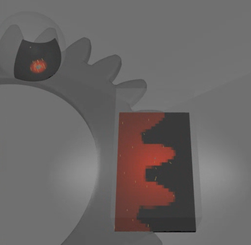
The tactile sensor returns the maximum penetration depth and the sliding velocities in the tangent frame at given points between the geom associated with the sensor and the SDF geoms in contact with it. The sensor is associated with a geom and a mesh. It is activated by the contact between its associated geom and other geoms. The vertices of the mesh, when positioned in the geom frame, are the points at which sensor values are computed, so the dimension of the output is 3 times the number of vertices in the mesh. The mesh must have 3 normal vectors per vertex, which are used to compute the tangent frame. If the penetration depth is positive (no contact), then all values are 0 for the corresponding vertex. Only contacts with geoms of type SDF contribute to the sensor output. The sensor can be visualized by enabling the visualization of contact points.
- geom: string, required
Name of the geom to associate the tactile sensor with.
- mesh: string, required
Name of the mesh to associate the tactile sensor with.
- name, nsample, interval, delay, user:
See Sensors.
sensor/e_potential#
This element creates sensor that returns the potential energy.
- name, noise, cutoff, nsample, interval, delay, user
See Sensors.
sensor/e_kinetic#
This element creates sensor that returns the kinetic energy.
- name, noise, cutoff, nsample, interval, delay, user
See Sensors.
sensor/clock#
This element creates sensor that returns the simulation time.
- name, noise, cutoff, nsample, interval, delay, user
See Sensors.
sensor/user#
This element creates a user sensor. MuJoCo does not know how to compute the output of this sensor. Instead the user
should install the callback mjcb_sensor which is expected to fill in the sensor data in mjData.sensordata.
The specification in the XML is used to allocate space for this sensor, and also determine which MuJoCo object it is
attached to and what stage of computation it needs before the data can be computed. Note that the MuJoCo object
referenced here can be a tuple, which in turn can reference a custom collection of MuJoCo objects – for example
several bodies whose center of mass is of interest.
If a user sensor is of stage “vel” or “acc”, then mj_subtreeVel or mj_rnePostConstraint will be triggered, respectively.
- name, noise, cutoff, user
See Sensors.
- objtype: (any element type that can be named), optional
Type of the MuJoCo object to which the sensor is attached. This together with the objname attribute determines the actual object. If unspecified, will be mjOBJ_UNKNOWN.
- objname: string, optional
Name of the MuJoCo object to which the sensor is attached.
- datatype: [real, positive, axis, quaternion], “real”
The type of output generated by this sensor. “axis” means a unit-length 3D vector. “quat” means a unit quaternion. These need to be declared because when MuJoCo adds noise, it must respect the vector normalization. “real” means a generic array (or scalar) of real values to which noise can be added independently.
- needstage: [pos, vel, acc], “acc”
The MuJoCo computation stage that must be completed before the user callback mjcb_sensor() is able to evaluate the output of this sensor.
- dim: int, required
Number of scalar outputs of this sensor.
sensor/plugin #
Ascociate this sensor with an engine plugin. Either plugin or instance are required.
- plugin: string, optional
Plugin identifier, used for implicit plugin instantiation.
- instance: string, optional
Instance name, used for explicit plugin instantiation.
- name, cutoff, objtype, objname, reftype, refname, user
See Sensors.
keyframe#
This is a grouping element for keyframe definitions. It does not have attributes. Keyframes can be used to create a library of states that are of interest to the user, and to initialize the simulation state to one of the states in the library. They are not needed by any MuJoCo computations. The number of keyframes allocated in mjModel is the larger of the nkey attribute of size, and the number of elements defined here. If fewer than nkey elements are defined here, the undefined keyframes have all their data set to 0, except for the qpos attribute which is set to mjModel.qpos0. The user can also set keyframe data in mjModel at runtime; this data will then appear in the saved MJCF model. Note that in simulate.cc the simulation state can be copied into a selected keyframe and vice versa.
keyframe/key#
This element sets the data for one of the keyframes. They are set in the order in which they appear here. If the number of elements specified in the given vectors is less than the size of the corresponding mjData array, missing entries will be set to their values in the default configuration.
- name: string, optional
Name of this keyframe.
- time: real, “0”
Simulation time, copied into mjData.time when the simulation state is set to this keyframe.
- qpos: real(mjModel.nq), default = mjModel.qpos0
Vector of joint positions, copied into mjData.qpos when the simulation state is set to this keyframe.
- qvel: real(mjModel.nq), “0 0 …”
Vector of joint velocities, copied into mjData.qvel when the simulation state is set to this keyframe.
- act: real(mjModel.na), “0 0 …”
Vector of actuator activations, copied into mjData.act when the simulation state is set to this keyframe.
- ctrl: real(mjModel.nu), “0 0 …”
Vector of controls, copied into mjData.ctrl when the simulation state is set to this keyframe.
- mpos: real(3*mjModel.nmocap), default = mjModel.body_pos
Vector of mocap body positions, copied into mjData.mocap_pos when the simulation state is set to this keyframe.
- mquat: real(4*mjModel.nmocap), default = mjModel.body_quat
Vector of mocap body quaternions, copied into mjData.mocap_quat when the simulation state is set to this keyframe.
visual#
This element is in one-to-one correspondence with the low level structure mjVisual contained in the field mjModel.vis
of mjModel. The settings here affect the visualizer, or more precisely the abstract phase of visualization which
yields a list of geometric entities for subsequent rendering. The settings here are global, in contrast with the
element-specific visual settings. The global and element-specific settings refer to non-overlapping properties. Some
of the global settings affect properties such as triangulation of geometric primitives that cannot be set per element.
Other global settings affect the properties of decorative objects, i.e., objects such as contact points and force
arrows which do not correspond to model elements. The visual settings are grouped semantically into several
subsections.
This element is a good candidate for the file include mechanism. One can create an XML file with
coordinated visual settings corresponding to a “theme”, and then include this file in multiple models.
visual/global #
While all settings in mjVisual are global, the settings here could not be fit into any of the other subsections. So this is effectively a miscellaneous subsection.
- cameraid: int, “-1”
The id of the camera used when initially loading the model in the visualizer. The default value of -1 means the free camera. In order to specify a modeled camera, use the camera’s id as given by mj_name2id.
- orthographic: [false, true], “false”
Whether the free camera uses a perspective projection (the default) or an orthographic projection. Setting this attribute changes the semantic of the global/fovy attribute, see below.
- fovy: real, “45”
This attribute specifies the vertical field of view of the free camera, i.e., the camera that is always available in the visualizer even if no cameras are explicitly defined in the model. If the camera uses a perspective projection, the field-of-view is expressed in degrees, regardless of the global compiler/angle setting. If the camera uses an orthographic projection, the field-of-view is expressed in units of length; note that in this case the default of 45 is too large for most scenes and should likely be reduced. In either case, the horizontal field of view is computed automatically given the window size and the vertical field of view. The same convention applies to the camera/fovy attribute.
- ipd: real, “0.068”
This attribute specifies the inter-pupilary distance of the free camera. It only affects the rendering in stereoscopic mode. The left and right viewpoints are offset by half of this value in the corresponding direction.
- azimuth: real, “90”
This attribute specifies the initial azimuth of the free camera around the vertical z-axis, in degrees. A value of 0 corresponds to looking in the positive x direction, while the default value of 90 corresponds to looking in the positive y direction. The look-at point itself is specified by the statistic/center attribute, while the distance from the look-at point is controlled by the statistic/extent attribute.
- elevation: real, “-45”
This attribute specifies the initial elevation of the free camera with respect to the lookat point. Note that since this is a rotation around a vector parallel to the camera’s X-axis (right in pixel space), negative numbers correspond to moving the camera up from the horizontal plane, and vice-versa. The look-at point itself is specified by the statistic/center attribute, while the distance from the look-at point is controlled by the statistic/extent attribute.
- linewidth: real, “1”
This attribute specifies the line-width in the sense of OpenGL. It affects the rendering in wire-frame mode.
- glow: real, “0.3”
The value of this attribute is added to the emission coefficient of all geoms attached to the selected body. As a result, the selected body appears to glow.
- realtime: real, “1”
This value sets the initial real-time factor of the model, when loaded in
simulate. 1: real time. Less than 1: slower than real time. Must be greater than 0.
- offwidth: int, “640”
This and the next attribute specify the size in pixels of the off-screen OpenGL rendering buffer. This attribute specifies the width of the buffer. The size of this buffer can also be adjusted at runtime, but it is usually more convenient to set it in the XML.
- offheight: int, “480”
This attribute specifies the height in pixels of the OpenGL off-screen rendering buffer.
- ellipsoidinertia: [false, true], “false”
This attribute specifies how the equivalent inertia is visualized. “false”: use box, “true”: use ellipsoid.
- bvactive: [false, true], “true”
This attribute specifies whether collision and raycasting code should mark elements of Bounding Volume Hierarchies as intersecting, for the purpose of visualization. Setting this attribute to “false” can speed up simulation for models with high-resolution meshes.
visual/quality #
This element specifies settings that affect the quality of the rendering. Larger values result in higher quality but possibly slower speed. Note that simulate.cc displays the frames per second (FPS). The target FPS is 60 Hz; if the number shown in the visualizer is substantially lower, this means that the GPU is over-loaded and the visualization should somehow be simplified.
- shadowsize: int, “4096”
This attribute specifies the size of the square texture used for shadow mapping. Higher values result in smoother shadows. The size of the area over which a light can cast shadows also affects smoothness, so these settings should be adjusted jointly. The default here is somewhat conservative. Most modern GPUs are able to handle significantly larger textures without slowing down.
- offsamples: int, “4”
This attribute specifies the number of multi-samples for offscreen rendering. Larger values produce better anti-aliasing but can slow down the GPU. Set this to 0 to disable multi-sampling. Note that this attribute only affects offscreen rendering. For regular window rendering, multi-sampling is specified in an OS-dependent way when the OpenGL context for the window is first created, and cannot be changed from within MuJoCo.
When rendering segmentation images, multi-sampling is automatically disabled so as not to average segmentation indices. However, some rendering backends ignore the automatic disabling. If your segmentation images contain bad indices, try manually setting this attribute to 0.
- numslices: int, “28”
This and the next three attributes specify the density of internally-generated meshes for geometric primitives. Such meshes are only used for rendering, while the collision detector works with the underlying analytic surfaces. This value is passed to the various visualizer functions as the “slices” parameter as used in GLU. It specifies the number of subdivisions around the Z-axis, similar to lines of longitude.
- numstacks: int, “16”
This value of this attribute is passed to the various visualization functions as the “stacks” parameter as used in GLU. It specifies the number of subdivisions along the Z-axis, similar to lines of latitude.
- numquads: int, “4”
This attribute specifies the number of rectangles for rendering box faces, automatically-generated planes (as opposed to geom planes which have an element-specific attribute with the same function), and sides of height fields. Even though a geometrically correct rendering can be obtained by setting this value to 1, illumination works better for larger values because we use per-vertex illumination (as opposed to per-fragment).
visual/headlight #
This element is used to adjust the properties of the headlight. There is always a built-in headlight, in addition to any lights explicitly defined in the model. The headlight is a directional light centered at the current camera and pointed in the direction in which the camera is looking. It does not cast shadows (which would be invisible anyway). Note that lights are additive, so if explicit lights are defined in the model, the intensity of the headlight would normally need to be reduced.
- ambient: real(3), “0.1 0.1 0.1”
The ambient component of the headlight, in the sense of OpenGL. The alpha component here and in the next two attributes is set to 1 and cannot be adjusted.
- diffuse: real(3), “0.4 0.4 0.4”
The diffuse component of the headlight, in the sense of OpenGL.
- specular: real(3), “0.5 0.5 0.5”
The specular component of the headlight, in the sense of OpenGL.
- active: int, “1”
This attribute enables and disables the headlight. A value of 0 means disabled, any other value means enabled.
visual/map #
This element is used to specify scaling quantities that affect both the visualization and built-in mouse perturbations. Unlike the scaling quantities in the next element which are specific to spatial extent, the quantities here are miscellaneous.
- stiffness: real, “100”
This attribute controls the strength of mouse perturbations. The internal perturbation mechanism simulates a mass-spring-damper with critical damping, unit mass, and stiffness given here. Larger values mean that a larger force will be applied for the same displacement between the selected body and the mouse-controlled target.
- stiffnessrot: real, “500”
Same as above but applies to rotational perturbations rather than translational perturbations. Empirically, the rotational stiffness needs to be larger in order for rotational mouse perturbations to have an effect.
- force: real, “0.005”
This attributes controls the visualization of both contact forces and perturbation forces. The length of the rendered force vector equals the force magnitude multiplied by the value of this attribute and divided by the mean body mass for the model (see statistic element).
- torque: real, “0.1”
Same as above, but controls the rendering of contact torque and perturbation torque rather than force (currently disabled).
- alpha: real, “0.3”
When transparency is turned on in the visualizer, the geoms attached to all moving bodies are made more transparent. This is done by multiplying the geom-specific alpha values by this value.
- fogstart: real, “3”
The visualizer can simulate linear fog, in the sense of OpenGL. The start position of the fog is the model extent (see statistic element) multiplied by the value of this attribute.
- fogend: real, “10”
The end position of the fog is the model extent multiplied by the value of this attribute.
- znear: real, “0.01”
This and the next attribute determine the clipping planes of the OpenGL projection. The near clipping plane is particularly important: setting it too close causes (often severe) loss of resolution in the depth buffer, while setting it too far causes objects of interest to be clipped, making it impossible to zoom in. The distance to the near clipping plane is the model
extentmultiplied by the value of this attribute. Must be strictly positive.
- zfar: real, “50”
The distance to the far clipping plane is the model
extentmultiplied by the value of this attribute.
- haze: real, “0.3”
Proportion of the distance-to-horizon that is covered by haze (when haze rendering is enabled and a skybox is present).
- shadowclip: real, “1”
As mentioned above, shadow quality depends on the size of the shadow texture as well as the area where a given light can cast shadows. For directional lights, the area would be infinite unless we limited it somehow. This attribute specifies the limits, as +/- the model extent multiplied by the present value. These limits define a square in the plane orthogonal to the light direction. If a shadow crosses the boundary of this virtual square, it will disappear abruptly, revealing the edges of the square.
- shadowscale: real, “0.6”
This attribute plays a similar role as the previous one, but applies to spotlights rather than directional lights. Spotlights have a cutoff angle, limited internally to 80 deg. However this angle is often too large to obtain good quality shadows, and it is necessary to limit the shadow to a smaller cone. The angle of the cone in which shadows can be cast is the light cutoff multiplied by the present value.
- actuatortendon: real, “2”
Ratio of actuator width to tendon width for rendering of actuators attached to tendons.
visual/scale #
The settings in this element control the spatial extent of various decorative objects. In all cases, the rendered size equals the mean body size (see statistic element) multiplied by the value of an attribute documented below.
- forcewidth: real, “0.1”
The radius of the arrows used to render contact forces and perturbation forces.
- contactwidth: real, “0.3”
The radius of the cylinders used to render contact points. The normal direction of the cylinder is aligned with the contact normal. Making the cylinder short and wide results in a “pancake” representation of the tangent plane.
- contactheight: real, “0.1”
The height of the cylinders used to render contact points.
- connect: real, “0.2”
The radius of the capsules used to connect bodies and joints, resulting in an automatically generated skeleton.
- com: real, “0.4”
The radius of the spheres used to render the centers of mass of kinematic sub-trees.
- camera: real, “0.3”
The size of the decorative object used to represent model cameras in the rendering.
- light: real, “0.3”
The size of the decorative object used to represent model lights in the rendering.
- selectpoint: real, “0.2”
The radius of the sphere used to render the selection point (i.e., the point where the user left-double-clicked to select a body). Note that the local and global coordinates of this point can be printed in the 3D view by activating the corresponding rendering flags. In this way, the coordinates of points of interest can be found.
- jointlength: real, “1.0”
The length of the arrows used to render joint axes.
- jointwidth: real, “0.1”
The radius of the arrows used to render joint axes.
- actuatorlength: real, “0.7”
The length of the arrows used to render actuators acting on scalar joints only.
- actuatorwidth: real, “0.2”
The radius of the arrows used to render actuators acting on scalar joints only.
- framelength: real, “1.0”
The length of the cylinders used to render coordinate frames. The world frame is automatically scaled relative to this setting.
- framewidth: real, “0.1”
The radius of the cylinders used to render coordinate frames.
- constraint: real, “0.1”
The radius of the capsules used to render violations in spatial constraints.
- slidercrank: real, “0.2”
The radius of the capsules used to render slider-crank mechanisms. The second part of the mechanism is automatically scaled relative to this setting.
- frustum: real, “10”
The distance of the zfar plane from the camera pinhole for rendering the frustum.
visual/rgba #
The settings in this element control the color and transparency (rgba) of various decorative objects. We will call this combined attribute “color” to simplify terminology below. All values should be in the range [0 1]. An alpha value of 0 disables the rendering of the corresponding object.
- fog: real(4), “0 0 0 1”
When fog is enabled, the color of all pixels fades towards the color specified here. The spatial extent of the fading is controlled by the fogstart and fogend attributes of the map element above.
- haze: real(4), “1 1 1 1”
Haze color at the horizon, used to transition between an infinite plane and a skybox smoothly. The default creates white haze. To create a seamless transition, make sure the skybox colors near the horizon are similar to the plane color/texture, and set the haze color somewhere in that color gamut.
- force: real(4), “1 0.5 0.5 1”
Color of the arrows used to render perturbation forces.
- inertia: real(4), “0.8 0.2 0.2 0.6”
Color of the boxes used to render equivalent body inertias. This is the only rgba setting that has transparency by default, because it is usually desirable to see the geoms inside the inertia box.
- joint: real(4), “0.2 0.6 0.8 1”
Color of the arrows used to render joint axes. If a joint is limited and the joint value exceeds the limit, the value of the constraint impedance \(d\) is used to mix this color and rgba/constraint.
- actuator: real(4), “0.2 0.25 0.2 1”
Actuator color for neutral value of the control.
- actuatornegative: real(4), “0.2 0.6 0.9 1”
Actuator color for most negative value of the control.
- actuatorpositive: real(4), “0.9 0.4 0.2 1”
Actuator color for most positive value of the control.
- com: real(4), “0.9 0.9 0.9 1”
Color of the spheres used to render sub-tree centers of mass.
- camera: real(4), “0.6 0.9 0.6 1”
Color of the decorative object used to represent model cameras in the rendering.
- light: real(4), “0.6 0.6 0.9 1”
Color of the decorative object used to represent model lights in the rendering.
- selectpoint: real(4), “0.9 0.9 0.1 1”
Color of the sphere used to render the selection point.
- connect: real(4), “0.2 0.2 0.8 1”
Color of the capsules used to connect bodies and joints, resulting in an automatically generated skeleton.
- contactpoint: real(4), “0.9 0.6 0.2 1”
Color of the cylinders used to render contact points.
- contactforce: real(4), “0.7 0.9 0.9 1”
Color of the arrows used to render contact forces. When splitting of contact forces into normal and tangential components is enabled, this color is used to render the normal components.
- contactfriction: real(4), “0.9 0.8 0.4 1”
Color of the arrows used to render contact tangential forces, only when splitting is enabled.
- contacttorque: real(4), “0.9 0.7 0.9 1”
Color of the arrows used to render contact torques (currently disabled).
- contactgap: real(4), “0.5 0.8 0.9 1”
Color of contacts that fall in the contact gap (and are thereby excluded from contact force computations).
- rangefinder: real(4), “1 1 0.1 1”
Color of line geoms used to render rangefinder sensors.
- constraint: real(4), “0.9 0 0 1”
Color corresponding to spatial constraint violations – equality constraints, joint limits, and tendon limits.
- slidercrank: real(4), “0.5 0.3 0.8 1”
Color of slider-crank mechanisms.
- crankbroken: real(4), “0.9 0 0 1”
Color used to render the crank of slide-crank mechanisms, in model configurations where the specified rod length cannot be maintained, i.e., it is “broken”.
- frustum: real(4), “1 1 0 0.2”
Color used to render the camera frustum.
- bv: real(4), “0 1 0 0.5”
Color used to render bounding volumes.
- bvactive: real(4), “1 0 0 0.5”
Color used to render active bounding volumes, if the bvactive flag is “true”.
default #
This element is used to create a new defaults class; see Default settings above. Defaults classes can be nested, inheriting all attribute values from their parent. The top-level defaults class is always defined; it is called “main” if omitted.
- class: string, required (except at the top level)
The name of the defaults class. It must be unique among all defaults classes. This name is used to make the class active when creating an actual model element.
default/mesh #
default/material #
default/joint #
default/geom #
default/site #
default/camera #
default/light #
default/pair #
default/equality #
default/tendon #
default/general #
default/motor #
This and the next three elements set the attributes of the general element using Actuator shortcuts. It does not make sense to use more than one such shortcut in the same defaults class, because they set the same underlying attributes, replacing any previous settings. All motor attributes are available here except: name, class, joint, jointinparent, site, refsite, tendon, slidersite, cranksite.
default/position #
All position attributes are available here except: name, class, joint, jointinparent, site, refsite, tendon, slidersite, cranksite.
default/velocity #
All velocity attributes are available here except: name, class, joint, jointinparent, site, refsite, tendon, slidersite, cranksite.
default/intvelocity #
All intvelocity attributes are available here except: name, class, joint, jointinparent, site, refsite, tendon, slidersite, cranksite.
default/damper #
All damper attributes are available here except: name, class, joint, jointinparent, site, refsite, tendon, slidersite, cranksite.
default/cylinder #
All cylinder attributes are available here except: name, class, joint, jointinparent, site, refsite, tendon, slidersite, cranksite.
default/muscle #
All muscle attributes are available here except: name, class, joint, jointinparent, site, refsite, tendon, slidersite, cranksite.
default/adhesion #
All adhesion attributes are available here except: name, class, body.
default/dcmotor #
All dcmotor attributes are available here except: name, class, joint, jointinparent, site, refsite, tendon, slidersite, cranksite.
custom#
This is a grouping element for custom numeric and text elements. It does not have attributes.
custom/numeric#
This element creates a custom numeric array in mjModel.
- name: string, required
The name of the array. This attribute is required because the only way to find a custom element of interest at runtime is through its name.
- size: int, optional
If specified this attribute sets the size of the data array, in doubles. If this attribute is not specified, the size will be inferred from the actual data array below.
- data: real(size), “0 0 …”
Numeric data to be copied into mjModel. If size is specified, the length of the array given here cannot exceed the specified size. If the length of the array is smaller, the missing components are set to 0. Note that custom arrays can be created for storing information at runtime - which is why data initialization is optional. It becomes required only when the array size is omitted.
custom/text#
This element creates a custom text field in mjModel. It could be used to store keyword commands for user callbacks and other custom computations.
- name: string, required
Name of the custom text field.
- data: string, required
Custom text to be copied into mjModel.
custom/tuple#
This element creates a custom tuple, which is a list of MuJoCo objects. The list is created by referencing the desired objects by name.
- name: string, required
Name of the custom tuple.
tuple/element#
This adds an element to the tuple.
- objtype: (any element type that can be named), required
Type of the object being added.
- objname: string, required
Name of the object being added. The type and name must reference a named MuJoCo element defined somewhere in the model. Tuples can also be referenced (including self-references).
- prm: real, “0”
Real-valued parameter associated with this element of the tuple. Its use is up to the user.
extension#
This is a grouping element for MuJoCo extensions. Extensions allow the user to extend MuJoCo’s capabilities with custom code and are described in detail in the Programming chapter’s Extensions page. Currently, the only available extension type are Engine plugins.
extension/plugin#
This element specifies that an engine plugin is required in order to simulate this model. See Engine plugins for more details.
- plugin: string, required
Identifier of the plugin.
plugin/instance#
Declares a plugin instance. Explicit instance declaration is required when multiple elements are backed by the same plugin, or when global plugin configuration is desired. See plugin declaration and configuration for more details.
- name: string, required
Name of the plugin instance.
instance/config#
Configuration of a plugin instance. When implicitly declaring a plugin under a model element, configuration is performed with identical semantics using element/plugin/config. The elements which currently support plugins are body, composite, actuator and sensor.
- key: string, optional
Key used for plugin configuration.
- value: string, optional
Value associated with key.